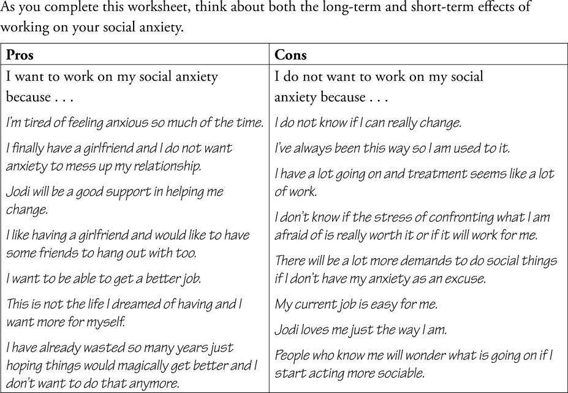
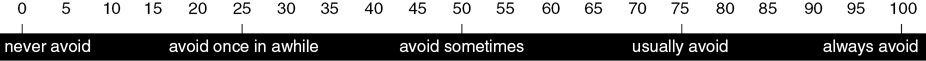
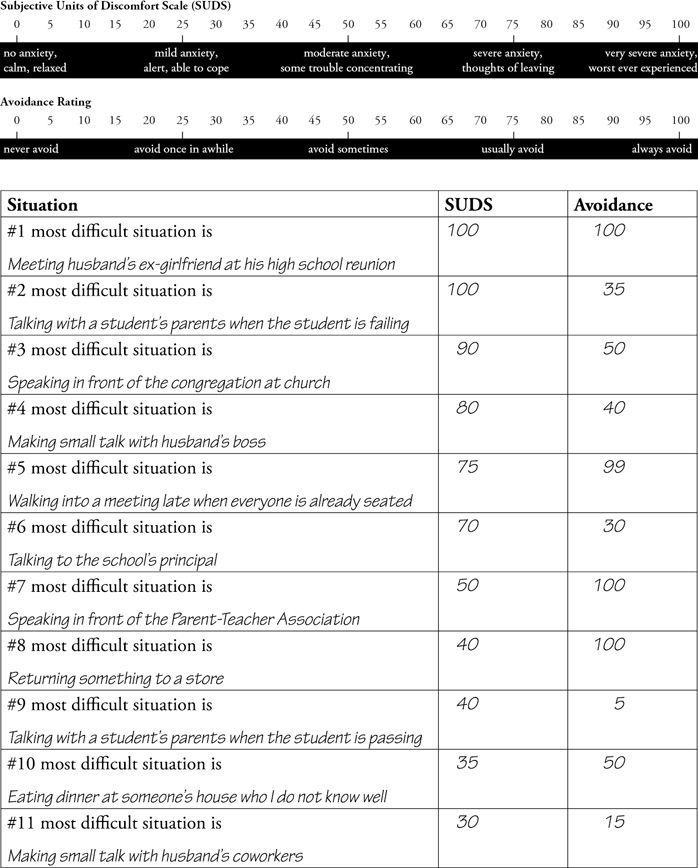
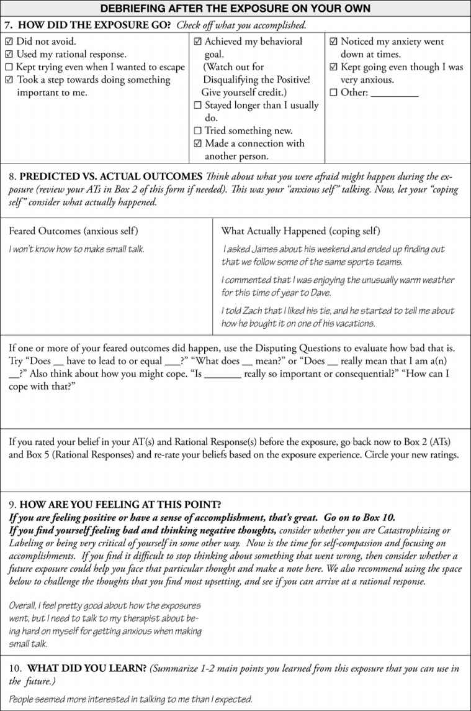
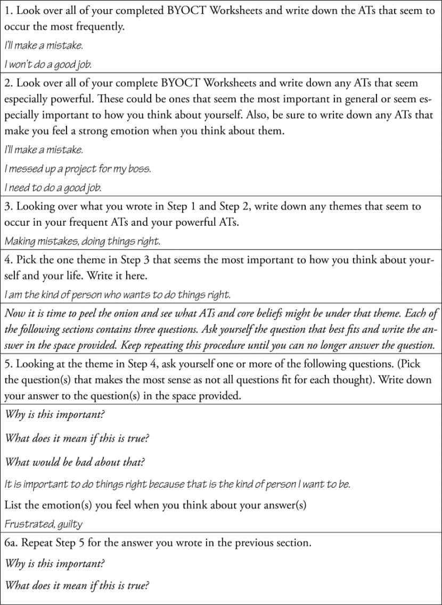
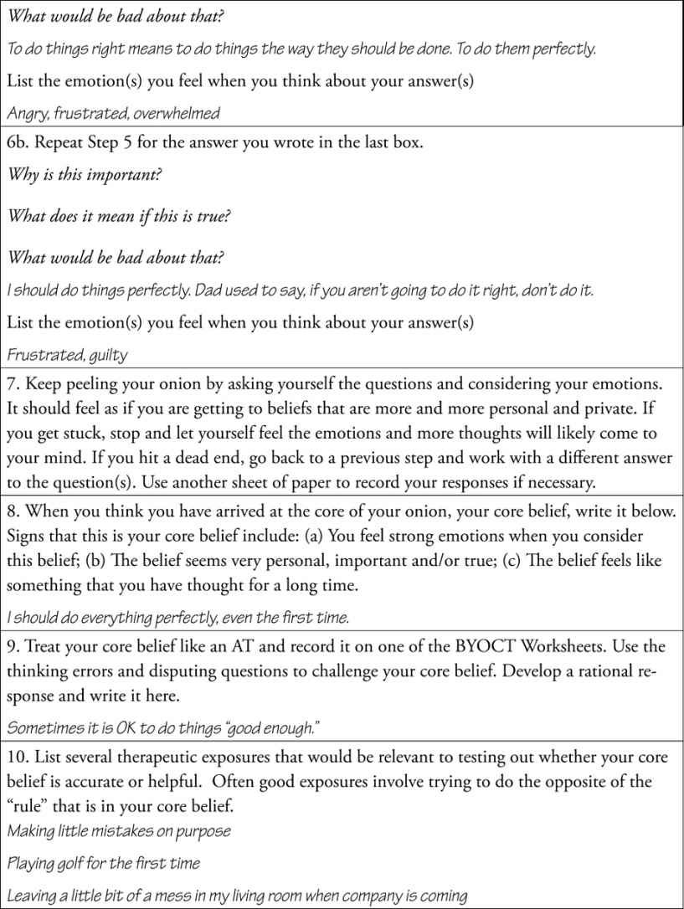

✓ Treatments That Work
Editor-In-Chief
David H. Barlow, PhD
Scientific Advisory Board
Anne Marie Albano, PhD
Gillian Butler, PhD
David M. Clark, PhD
Edna B. Foa, PhD
Paul J. Frick, PhD
Jack M. Gorman, MD
Kirk Heilbrun, PhD
Robert J. McMahon, PhD
Peter E. Nathan, PhD
Christine Maguth Nezu, PhD
Matthew K. Nock, PhD
Paul Salkovskis, PhD
Bonnie Spring, PhD
Gail Steketee, PhD
John R. Weisz, PhD
G. Terence Wilson, PhD
Oxford University Press is a department of the University of Oxford. It furthers the University’s objective of excellence in research, scholarship, and education by publishing worldwide. Oxford is a registered trade mark of Oxford University Press in the UK and certain other countries.
Published in the United States of America by Oxford University Press
198 Madison Avenue, New York, NY 10016, United States of America.
© Oxford University Press 2019
Second Edition published in 2010
Third Edition published in 2019
All rights reserved. No part of this publication may be reproduced, stored in a retrieval system, or transmitted, in any form or by any means, without the prior permission in writing of Oxford University Press, or as expressly permitted by law, by license, or under terms agreed with the appropriate reproduction rights organization. Inquiries concerning reproduction outside the scope of the above should be sent to the Rights Department, Oxford University Press, at the address above.
You must not circulate this work in any other form and you must impose this same condition on any acquirer.
CIP data is on file at the Library of Congress
ISBN 978–0–19–024763–8
eISBN 978–0–19–067183–9
About ✓Treatments That Work
One of the most difficult problems confronting patients with various disorders and diseases is finding the best help available. Everyone is aware of friends or family who have sought treatment from a seemingly reputable practitioner, only to find out later from another doctor that the original diagnosis was wrong or the treatments recommended were inappropriate or perhaps even harmful. Most patients, or family members, address this problem by reading everything they can about their symptoms, seeking information on the Internet, or aggressively “asking around” to tap knowledge from friends and acquaintances. Governments and healthcare policymakers are also aware that people in need don’t always get the best treatments—something they refer to as “variability in healthcare practices.”
Healthcare systems around the world are now attempting to correct this variability by introducing “evidence-based practice.” This simply means that it is in everyone’s interest that patients get the most up-to-date and effective care for a particular problem. Healthcare policymakers have also recognized that it is very useful to give consumers of healthcare as much information as possible so that they can make intelligent decisions in a collaborative effort to improve physical health and mental health. This series, Treatments That Work, is designed to accomplish just that. Only the latest and most effective interventions for particular problems are described in user-friendly language. To be included in this series, each treatment program must pass the highest standards of evidence available, as determined by a scientific advisory board. Thus, when individuals suffering from these problems or their family members seek an expert clinician who is familiar with these interventions and decides that they are appropriate, they will have confidence that they are receiving the best care available. Of course, only your healthcare professional can decide on the right mix of treatments for you.
This workbook is designed for your use as you work with a qualified mental health professional to manage your social anxiety. It presents a step-by-step approach for combating anxiety based on the principles of cognitive–behavioral therapy (CBT). Each chapter builds on skills taught in previous chapters, so it is recommended that you do not skip ahead. In general, it will be most helpful for you if you have read relevant chapters before you meet with your therapist. Over the course of the program, you will learn to understand your anxiety and work through it by identifying and challenging your anxious thoughts and participating in exposure exercises designed to help you face your fears in a safe, structured way. If you are motivated and willing to put in the effort, you will find this program offers many benefits and will help improve your quality of life.
David H. Barlow, Editor-in-Chief
Treatments That Work
Boston, Massachusetts
Accessing Treatments That Work Forms and Worksheets Online
All forms and worksheets from books in the Treatments That Work (TTW) series are made available digitally shortly following print publication. You may download, print, save, and digitally complete them as PDFs. To access the forms and worksheets, please visit http://www.oup.com/us/ttw.
Development of this workbook, now in the third edition, would not have been possible without the direct and indirect contributions of many people. We would like to thank Jacqueline Persons, whose work has greatly enriched our sophistication regarding cognitive therapy. The outstanding contributions of Edna Foa, Michael Kozak, and Michelle Craske to our understanding of emotional processing and exposure therapy are evident throughout the workbook. No book about cognitive therapy would be complete without acknowledging the tremendous influence of Aaron T. Beck’s work. We would also like to thank Judith Beck for her continued willingness to share her work on cognitive therapy techniques. Steven Hayes and his colleagues have helped make the implicit more explicit by giving us language about the importance of client’s values to guide treatment; their influence is reflected throughout this revision. Based on feedback from many people, we have made numerous changes to help this workbook better reflect the broad multicultural community of individuals who seek treatment for social anxiety. We are very grateful to Kevin Chapman for his thoughtful feedback on these efforts.
David Barlow’s strong support of the dissemination of empirically supported treatments, including this one, helped inspire us to launch this project initially. Our thanks to the many people who provided feedback on the earlier editions. Their thoughtful comments guided many of the changes that we have made. As always, our graduate students, postdoctoral fellows, and colleagues challenge us to continue to refine the concepts and techniques and stimulate our thinking. We appreciate the support of our families and their patience while we were away writing. Most of all, we would like to salute the many people who have sought help for their social anxiety and were also willing to make a contribution to the greater good through their participation in our research. In a real sense, this workbook is their gift to others who seek to overcome social anxiety. We continue to be inspired by their courage to change and hope that we have honored them with our efforts here. Finally, we would like to acknowledge the National Institute of Mental Health for their support of our research on the nature and treatment of social anxiety.
We would also like to express our appreciation for the contributions made by various persons at Oxford University Press, especially Kate Scheinman for her thoughtful developmental editing and Sarah Harrington for her patience and guidance on the revisions.
Have you ever experienced social anxiety? If you are like most people, you have had many such experiences. Social anxiety is feeling tense, nervous, or frightened in situations that involve other people. To help make this definition clearer, let’s take a look at Jasmine in a situation that many of us will find familiar. (Note that whenever we describe our clients or other specific people in this book, their names and some details are changed to protect their privacy. In this instance, Jasmine is not a client, but a close friend. We still changed the details of her story to protect her privacy.)
Jasmine recently received the good news that she is being promoted to a supervisory position in her job. However, the morning before she assumes her new responsibilities, she finds herself questioning whether the promotion is what she really wants. In her new position, she has to make presentations on her department’s activities at weekly management meetings. While preparing what she will say in her first meeting, Jasmine notices that she is nervous about speaking in front of the managers, most of whom she does not know very well. She has a few butterflies in her stomach as she worries about making a good impression. After all, she does not want anyone to think that they made a mistake when they offered her the promotion!
Finally, it is time for the meeting, and Jasmine takes her place at the conference table. As she listens to others give their reports, her anxiety increases, and her heart beats faster than normal. She tries to relax by telling herself that she is prepared and that no one expects her to be perfect on her first day. When it is Jasmine’s turn to speak, she feels a little rush of anxiety as she looks out at all of the faces, and she stumbles over the first couple of words. However, as she gets into her report and notices that everyone seems to be listening attentively, the anxiety quickly subsides. Afterward, Jasmine wonders what she was so worried about because her report went fine. She thinks she will like her new job.
The nervousness that Jasmine experienced when she had to speak in front of the group is one type of social anxiety. Social anxiety in public speaking situations is very common, and most people have some of the symptoms that Jasmine had—butterflies in her stomach, increased heart rate, worries about what others will think about her, and a bit of difficulty speaking fluently. Many people have social anxiety the first few times they have to do something such as speaking in front of a group, meeting with a new boss, going to a job interview, going to a new class or job, or getting to know someone they might like to date. This commonly experienced social anxiety is unpleasant but not unmanageable, and it goes away fairly quickly. However, as we will see in the following example, some people have a very different experience with social anxiety.
Cory and Jodi have been dating for several months, and tonight’s dinner will be the first time he will meet her family. Let’s take a look at Cory as he is getting dressed to go to dinner with Jodi and her parents. He takes a deep breath to relieve his tension as he thinks to himself that worrying about this dinner has ruined his entire week. Every time he thought about it, he felt sick to his stomach. As the time draws near, he feels even more upset and nauseous. Although Cory is in his 30s, Jodi is his first girlfriend, and they started dating only because she actively pursued him. Cory never thought someone as pretty and fun as Jodi would go out with him! Now he is worried that he will make such a terrible impression on her parents that she will be embarrassed to be with him. In fact, he cancelled several previous dates for the dinner because thinking about it was just too much. On the way to the restaurant this time, Cory nearly runs off the road because he is so distracted by thoughts of the dinner. All he wants to do is run away, as far and as fast as he can. When Jodi introduces him to her parents, his heart is pounding and his palms are sweaty. He becomes convinced that her father thinks he is a loser because he looks so anxious. Throughout the dinner, Cory has to make an effort to keep track of the conversation because he keeps thinking that everything is going wrong. At the end of the evening, Cory declines Jodi’s parents’ invitation to stay for coffee and dessert, claiming that he has to be at work early the next morning. The next day, Jodi tells Cory that she felt that the dinner was a big success and her mother thought it was “sweet” that he looked a little nervous.
Unlike Jasmine, Cory’s experience of social anxiety causes him to feel miserable and truly interferes with his life. Not only was he nervous on the day of the dinner, but also he had been anxiously anticipating it all week, and he had cancelled it several times previously. The social anxiety interfered with his concentration so that he had difficulty driving safely and making dinner conversation. The comment Jodi’s mother made about his nervousness made it clear to Cory that his anxiety was visible to Jodi’s parents, and he is worried about what they will think of him.
As we can see, social anxiety is a normal part of life, but it can sometimes have a negative impact on an individual’s life. The important question here is not whether someone experiences social anxiety or not, but to what degree and how often. Thus, experiencing social anxiety is not like having a broken arm—your arm either is broken or is not. Rather, social anxiety is on a continuum. To illustrate, let’s think about how people with differing levels of social anxiety might react in Jasmine’s and Cory’s situations.
Individuals who experience less social anxiety than Jasmine might not be at all nervous about giving a report for the first time and, in fact, might welcome the opportunity to demonstrate their talents in front of the management group. Others might have worried for several days about giving the report, perhaps even having some difficulty sleeping the night before. People who experience more social anxiety than Jasmine might have continued to be anxious throughout the presentation. They may have performed well despite the anxiety, but it is also possible that they would have had difficulty effectively communicating their main points. A person who experiences very high levels of social anxiety might have turned down the promotion, knowing that giving reports was part of the job and the prospect of doing so was too terrifying to even consider.
Someone who experiences much less social anxiety than Cory might have been a little nervous just before meeting Jodi’s parents (most people are nervous meeting prospective in-laws!) but would have quickly become more comfortable as they began to talk together. Someone who experiences more severe social anxiety than Cory might have refused to attend the dinner because he felt panicky just thinking about it, despite the likelihood that this would make Jodi angry and might even threaten the future of their relationship.
Let’s consider one more example that demonstrates just how devastating social anxiety can be:
Eric was a 30-year-old man who sought help with his social anxiety after reading a blog about our treatment program. It was immediately obvious that Eric was very nervous about talking on the telephone. After a lot of encouragement, he agreed to come in and meet with a member of our staff. At the clinic, we could tell that Eric was having difficulty just sitting in the waiting room because he felt so anxious. As he talked with our staff person, he started to feel a little more comfortable and described how his social anxiety had gradually gotten worse. Eric explained that he had always been shy and nervous around people but had managed to get along in school by reading books rather than talking to others. He went to college primarily because he was too frightened to think about getting a job; college seemed a safer prospect because he knew what to expect in a school environment. Throughout college he worked at part-time jobs on campus that did not require contact with people, such as reshelving books at the library.
After he graduated, Eric was again confronted with the prospect of finding work. He lived for a couple of years off his savings, some money from his parents, and a few part-time jobs that he usually quit after a few weeks because he could not tolerate the anxiety. He had no friends. He spent some time with a cousin and lived with his parents. Finally, his parents insisted that he get a steady job, so he took a position as a night-shift janitor at the college. Eric was very anxious at first but was soon able to develop a routine that allowed him to work alone most of the night cleaning several floors of a large classroom building. Because Eric was bright, hard working, and reliable, his supervisor tried several times to promote him to more responsible positions, but Eric always refused. Any change might require that he have more contact with other people, and he did not believe he would ever be able to supervise anyone. When he was not at work, he stayed home. His one pleasure was music trivia, and he constantly read about popular artists, listened to music, and watched music videos.
Eric explained to our staff member that he felt nervous around almost everyone. If he had to talk with anyone, his heart would pound, and he would feel shaky all over and nauseous. When he went out in public, he felt extremely self-conscious and was convinced that everyone could see that something was wrong with him. Eric came to treatment because he was very unhappy with the way his life was turning out. He wanted friends and a family someday, but it was clear to him that his life was not heading in that direction. Eric’s parents were getting older, and he feared he would be living on the street if something happened to them.
Defining Social Anxiety
Mental health professionals have traditionally called severe social anxiety “social phobia.” Recently the term social anxiety disorder has come into use because it better describes the distress and interference that comes along with severe social anxiety.
A definition of social anxiety disorder was provided in 2013 by the American Psychiatric Association in the fifth edition of the Diagnostic and Statistical Manual of Mental Disorders (DSM-5). DSM-5 defines social anxiety disorder as “marked fear or anxiety about one or more social situations in which the person is exposed to possible scrutiny by others. . . . The individual fears that he or she will act in a way or show anxiety symptoms that will be negatively evaluated” (p. 202). This means that the heart of social anxiety disorder is anxiety due to concern about what others might think of you. The social situations feared by people with social anxiety disorder vary widely, but the most common ones are public speaking, conversations with unfamiliar people, dating, and being assertive. In addition, some individuals with social anxiety disorder are afraid of eating or drinking in front of other people, being the center of attention, talking with supervisors or other authority figures, urinating in a public bathroom (usually only men have this fear), or intimate sexual situations. In recent years, our socially anxious clients have also reported anxiety around sending texts and emails and using social media. Regardless of the specific situation, people with social anxiety disorder share a common fear that others will think poorly of them. Sometimes this worry about what others think is related to a fear of displaying a particular anxiety symptom, such as blushing or trembling.
The following criteria must be met for an individual to be diagnosed with social anxiety disorder: (a) The person’s anxiety is out of proportion to the actual threat posed by the social situation or the sociocultural context (i.e., most people would not be as frightened in a similar situation); (b) the person must avoid the situations that cause anxiety or suffer through them despite great distress; and (c) the social anxiety disorder must interfere with the person’s life in important ways (e.g., keep the person from dating, going to school, doing well at work).
How Do You Know If This Program Is for You?
Embarking on any change program requires a commitment of substantial time and energy. Before making that investment, it is important to carefully consider whether you are ready to change and whether a particular program will meet your needs. Assess whether this program is right for you by considering the questions that follow. These questions present ways in which social anxiety may be keeping you from living the life you hope for, one that meets your long-term goals.
1. Does being nervous or uncomfortable around other people keep you from doing things you want to do?
2. Are you in your present job (or school) because you only have to deal with people you know well? If you are unemployed, have you avoided looking for a job for fear of interacting with others? Have you avoided getting a job or changing jobs because you are anxious about job interviews?
3. Are you not dating because the thought of going out with someone makes you very nervous or because you are afraid of what will happen if you ask someone out?
4. Do you limit how involved you become with people because you are afraid of letting them get to know you? Do you worry that if people really knew you, they wouldn’t like you?
5. Do you spend a very long time composing texts or emails or checking what you post on social media because you are concerned that others will think poorly of you if you make a mistake?
6. Do people often comment that you are quiet, unapproachable, or withdrawn in social situations or meetings?
7. Do you find yourself turning down invitations to social events because you know you would feel uncomfortable if you went?
8. If you do make plans to go to a social event or a work activity that involves other people, do you feel relief if it is canceled?
9. Does being the center of attention make you feel very uncomfortable and self-conscious?
10. Do you worry about blushing or looking nervous in front of other people?
11. Do people tell you that you worry too much about what others think of you?
12. Are you uncomfortable eating or drinking with others because you worry about spilling your drink or embarrassing yourself in some other way?
13. Do you like other people and daydream about a better social life but doubt your ability to achieve your dream because you are too shy to really get to know people?
14. Do you have trouble stating your opinion or asking for something you deserve because you worry about what others will think of you?
If you said yes to any of these questions and would like to make a change in your life, then this workbook applies to you. Some people will find that almost all of these questions describe them. If that is true for you, then you have discovered that social anxiety is probably limiting your life. Don’t be concerned. Answering yes to lots of the questions just means that you are likely to find this program particularly helpful.
Will This Program Work for You?
This program is a comprehensive approach to the treatment of social anxiety and social anxiety disorder. This may lead you to ask whether this program is effective and, more important, whether it will be effective for you. Because each person is an individual with a unique background, personality, and daily living situation, it is impossible to guarantee that this program will help you overcome your social anxiety or social anxiety disorder. That’s the bad news. The good news is that there are many reasons to believe that you will see a significant decrease in social anxiety if you follow the procedures carefully. That optimism is based on a large body of scientific research. Let us tell you a bit about that research.
The treatment approach described in this workbook was first developed by Dr. Richard Heimberg in the early 1980s. In the first carefully controlled scientific study using this treatment, 75% of the participants were rated as having made major improvements in their social anxiety symptoms. They reported that they were much less anxious in the situations they had feared prior to treatment.
We later contacted as many of the people who had participated in this study as we could locate to see if they continued to do well or if their social anxiety had returned. The results were positive: Five years after the treatment, most of the participants we contacted continued to show the benefits of treatment.
Since that first study in the 1980s, there have been literally dozens of other scientific studies that have investigated whether the treatment procedures described in this workbook (or very similar ones) reduced social anxiety and social anxiety disorder. These studies have included hundreds of participants and have been conducted in the United States, Canada, Australia, Great Britain, the Netherlands, and other European countries. Overall, these studies showed that most people make significant improvement with the treatment. In the studies we have conducted, about 80% of participants who completed the treatment made substantial progress.
You might be asking yourself what is “significant improvement” or “substantial progress”? Does that mean the participants overcame all of their social anxiety? Since social anxiety is a normal part of life, it cannot be fully eliminated. However, we use careful scientific criteria to ensure that the improvement that people make in treatment is large enough that it leads to important changes in their lives. Next we describe a couple of clients who have been through our treatment and the changes they made to their lives.
When Linda first came to our treatment program, she was 35 years old and working as a clerk in a state office. Linda had graduated from college several years earlier and had taken a number of classes toward a master’s degree in social work. She disliked her current job and was eager to finish her degree so she could pursue her chosen profession. However, Linda was extremely frightened about giving presentations in class and was unable to take any class that required speaking, even informally, in the classroom. She worried that she would stumble over her words, lose her train of thought, and generally appear incompetent and foolish. By the end of therapy, Linda would get a little nervous at the beginning of a presentation but felt the anxiety was manageable. As treatment ended, she signed up for one of the classes she had been avoiding and felt fairly confident about being able to complete the required class presentation. Although she thought she might always be a little nervous talking in front of others, Linda felt that she would be able to handle any anxiety that arose. About a year later, she sent her therapist a note reporting that she had finished her social work degree and had found a position she was enjoying.
Emilio was a 36-year-old man who had never been married when he sought treatment to help with his anxiety in dating situations. Actually, Emilio became anxious almost any time he had to talk with someone, but it was worse with women, and he very much wanted to develop a serious relationship. By the end of 3 months of treatment, Emilio felt much more confident in social situations. He had become involved with an online group for singles who had an interest in outdoor activities, and they regularly met to go biking or engage in other activities together. He was making an effort to ask women for dates on a regular basis, even if he was only somewhat interested in them. These dates were casual in the sense that Emilio did not have to be ready to marry someone to invite that person to a movie. Six months after the end of therapy, Emilio reported to his therapist that one of these casual dates had turned into a more serious relationship. His family liked her, and they had even begun to discuss marriage.
Keeping Your Eyes on the Prize: What Are Your Reasons to Start Treatment for Social Anxiety? Or Not?
You are reading this workbook because you are thinking about addressing the social anxiety that has been a problem for you. For many years, psychologists Bill Miller and Steve Rollnick have recognized that people often have mixed feelings about changing and have helped people increase their motivation to make difficult personal changes. They often find it useful to have people consider the pros and cons for changing or staying the same. You can probably come up with some reasons for changing fairly easily, but it is also important to understand reasons that you might have for not changing. It is important to acknowledge those reasons because they might get in the way of making progress in treatment.
Motivation is not like a shoe size. It changes over time. It can be helpful to think hard about why these changes are important to you and write them down. Then, at times when treatment seems difficult and you are wondering whether your investment of time and emotional energy is worth it, you can remind yourself about why you made the decision to start this program in the first place and work on enhancing your motivation to continue.
Worksheet 1.1 (Pros and Cons of Working on My Social Anxiety) is designed to help you consider the advantages and disadvantages of working to overcome your difficulties with social anxiety. (Often in this workbook, we use a worksheet to help you think through an idea or experience. Usually we give an example of how the worksheet is typically completed, as we have done in Figure 1.1. Yours may look the same or different; this is just one example.)
Worksheet 1.1
Pros and Cons of Working on My Social Anxiety

Figure 1.1
Cory’s completed Pros and Cons of Working on My Social Anxiety Worksheet.

In the column on the left side of the worksheet, list the reasons that you want to work on your social anxiety: the pros. It might be helpful to think about how social anxiety is interfering with your life or keeping you from doing the things you want to do. Think about short-term and longer term consequences of letting your social anxiety determine the choices that you make. In the column to the right, list the reasons not to change: the cons. Consider the obstacles to following through on treatment or being successful at it. Remember that these are important because they can interfere with progress in treatment. Of course, everyone would want to improve and do so as soon as possible, right? Realistically, though, we are often most comfortable with keeping things the same in our lives. Even if there are problems, at least they are familiar problems that we have learned to deal with for better or worse.
If you are having trouble filling out the pros and cons worksheet and it seems to be tipping in the direction of not changing, you might want to consider some additional questions. For instance, think about what your life might be like in 5 years if you don’t take steps to change now. How about 10 years? What could you have in your personal life, your family life, and your work life if social anxiety were no longer standing in the way?
Figure 1.1 is an example of how the form might be completed by Cory, the man at the beginning of the chapter with social anxiety who went to dinner with his prospective in-laws. Although Cory realized that part of him would find it easier to continue living life as he had been for years, a larger part of him was tired of the pain that went with staying the same and excited about what his life could be like if he did change.
It is also important for you to get in touch with the reasons that you want your life to be different. These may be immediate reasons that are very compelling right now, like needing to get a job so you can pay the bills or wanting to make a friend or two so that your days are not so lonely. There may be longer term goals that you aspire to, but your social anxiety gets in the way. You may want to be a healthier person, but going to the gym makes you worry about whether you can perform well enough in front of others. You may truly value service to others, but you are too anxious about making small talk with strangers, so you don’t join that volunteer organization that you admire so much. You may want a family very much, but the idea of talking to a potential romantic interest spikes your anxiety. Keeping your eye on the prize—living a life in which those things you value most, and not your social anxiety, determine the choices you make—will help you maintain your motivation for treatment.
To help you focus on the reasons you want your life to be different (and to reinforce the pros and cons work you just did), we would like you to answer a few questions, which appear in Worksheet 1.2 (What Are My Values in Life and How Does Social Anxiety Interfere?). These questions are designed to help you think about what is really most important to you. First, what are the things in life you most value? Write your answer to this question in the top box of Worksheet 1.2. Think about the many areas of life, including your friendships, romantic relationships, family relationships, spirituality, health, community involvement, education, and occupation. Try not to let your concerns about social anxiety influence your answers to the question. Instead, write down what you want your life to stand for in the areas most important to you.
In the second box of Worksheet 1.2, consider the question of how social anxiety—rather than your values—has guided how you live your life. What important things have you chosen not to do or not pursue or simply let pass you by because of your social anxiety? This treatment can help you to move away from a life driven by your anxiety to a life driven by you—your goals, values, and dreams.
Finally, answer the question in the third box of Worksheet 1.2. This should shine the spotlight on the most important areas for you to focus on in treatment. This exercise may also generate some more pros for the pros and cons list that you filled out for Worksheet 1.1.
Also have a look at Figure 1.2, which shows how Cory answered the questions on Worksheet 1.2.
Worksheet 1.2
What Are My Values in Life, and How Does Social Anxiety Interfere?
Figure 1.2
Cory’s completed What Are My Values in Life, and How Does Social Anxiety Interfere? Worksheet.
What Can You Do to Get the Most Out of This Program?
There are no guarantees that the therapy described in this workbook will help you manage your social anxiety, but research has shown it to be helpful for literally thousands of people. Here’s how to get as much from this program as possible.
Seriously Invest in Change
No matter what anyone tells you, making personal changes is hard work! You will need to set aside time several times a week in addition to your therapy session to work on your social anxiety. The work might include doing some of the exercises in this book, talking to someone you wouldn’t normally talk to, or practicing the self-help skills you will learn. The more practice the better, so if you can spend even 20–30 minutes a day, you will see progress.
In addition to investing time, you must invest emotional resources. By this we mean two things:
■ First, some of the exercises in this book will make you uncomfortable or possibly even very anxious. Although it seems a little odd, you must be willing to experience some anxiety in order to overcome it. We have a slogan for this: Invest Anxiety in a Calmer Future. This means that you must face your fears in order to overcome them. You do not have to face the worst ones first, but you will have to gradually try some things you have been avoiding. Done systematically, that investment will pay off.
■ Second, you must invest emotionally by being honest with yourself and with your therapist. As you start to analyze some of the thoughts and fears you have about yourself and the world around you, you might find that some of them are embarrassing or seem childish to you. Speak up about them. The thoughts and fears that cause you the most distress are the most important ones to discuss. Not talking about what concerns you makes your therapist’s job very difficult.
Do the Exercises Carefully and Practice, Practice, Practice!
All of the exercises in this book have been carefully designed to help you progress through the program step by step. Most exercises build on previous ones, so it is important to do each one carefully. Once you have become an expert at all of the skills, you might find shortcuts that work for you. However, doing the procedures carefully at first will ensure that you have all the tools needed to cope with the anxiety you might experience as you try the more advanced procedures. The more you rehearse the exercises, the more quickly the skills you learn will become new habits that replace old, problematic habits. And one of the best things about habits is that they require very little effort.
Persevere
If overcoming social anxiety were easy, you would have done it already. That is why it is important to stick with the program even if it does not seem to be working right away. Change usually starts slowly, so pay attention to small improvements. Small improvements usually lead to larger ones with time, patience, and practice.
Be Kind to Yourself
It is easy to focus on what you want to change or things you don’t do as well as you would like. It is not always easy to give yourself credit for your efforts. As you work through the program, give yourself a pat on the back as often as possible. Look for things you are making progress on and celebrate them rather than beating yourself up for not yet reaching other goals. Individuals with social anxiety are often their own worst critics. However, being critical of yourself doesn’t help you change. It just makes you feel miserable!
Be Willing to Try New Ways and Give Up Old Ways of Dealing With Your Social Anxiety
If you have been using drugs or alcohol to help control your anxiety, discuss that openly and honestly with your therapist. This program is unlikely to work if you rely more on drugs or alcohol than the procedures you will be learning. If you use alcohol or marijuana to control your anxiety, be open about how much you drink or smoke.
If you take prescription medication for anxiety on an “as needed” basis, try not to take it when you are doing the exercises, especially the ones that ask you to try to enter new situations. If you take prescription medication for anxiety on a daily basis, discuss with your therapist or physician whether you should stop or reduce the medication before beginning this program. If you are still experiencing social anxiety despite the medication, you might be able to continue the medication for now as you try this treatment. However, these are complicated decisions that should be made on an individual basis, so it is important to discuss them frankly with your therapist.
To a great extent, whether this program works for you is under your control. If you are honestly ready to invest the time and energy in change and work carefully through the program, our experience treating hundreds of people suggests that you will be able to reduce your social anxiety. If at this point you (or you and your therapist) agree that this approach would be helpful to you, take a deep breath, and we’ll start this exciting journey together.
Overview of This Treatment Program
This workbook describes a step-by-step therapy approach for overcoming social anxiety. It is designed to be used while working with a therapist who has been trained in the cognitive–behavioral treatment of social anxiety. Scientific studies showed that therapy using this approach is effective. If you are reading this workbook and are not in therapy, you may use it to consider whether or not to seek a therapist at this time.
Chapter 2 develops a common language that is used in the rest of the workbook and will help you understand that many other people experience the same discomfort that you do around people. Chapter 2 also explains how what you do and what you think work together to keep you from overcoming your fears. Most important, chapter 2 explains the rationale behind the program: what needs to change in order for you to feel more comfortable in the situations that currently make you anxious.
Chapter 3 includes the most recent information on the causes of social anxiety disorder and helps you consider what factors might be important in the development of your social anxiety.
In chapter 4, you will learn how to analyze your social fears and understand exactly what it is about different situations that makes you anxious.
Chapters 5 and 6 will help you gain important self-help skills, known as cognitive restructuring skills, to help you manage your anxiety. Through careful step-by-step exercises, you will become a sophisticated scientist who seeks problematic thoughts and subjects them to rigorous tests of logic. That is, you will learn to treat your thoughts about social situations just as if they were the hypotheses in a scientific experiment.
The cognitive restructuring skills you learn in chapters 5 and 6 will help you manage your anxiety as you begin to do some of the things that your anxiety has kept you from doing. Chapters 7 and 8 describe a systematic approach to putting yourself in anxiety-provoking situations. By starting with situations that cause you only a little bit of anxiety and gradually working up to more difficult situations, you will soon be able to do some of the things you have been avoiding (or doing only with great anxiety!).
Once you have all of the basic skills in place, chapters 9 through 11 address some common problematic beliefs and difficult situations that we have seen in our years working with socially anxious individuals. Topics like public speaking, making small talk, and worries about specific symptoms of anxiety (such as hand tremors) will give you further opportunities to practice the skills learned in previous chapters while addressing a specific concern related to your own profile of social anxiety. Not all of these chapters may appear relevant to you at first, but as you work through each one, you will likely find some helpful pointers.
You should read chapter 12 after you have been using the procedures for several weeks. This chapter describes how to consolidate the gains you have already made and to move on to a more advanced level.
As you are finishing the treatment program, chapter 13 will help you assess your progress and help you develop a plan to keep and expand the progress you have made in overcoming anxiety.
Homework
At the end of each chapter, we lay out what we would like for you to do in preparation for the next session with your therapist. If you decide that this treatment program is for you, then for your next meeting do the following:
■ Review this chapter. (It is likely that you were given your workbook in this session and have not had the opportunity to actually read it.)
■ Also, please read chapter 2. There are several worksheets in chapter 2. Please complete Worksheets 2.1 through 2.3 during the upcoming week. Bring your completed worksheets to the next session in order to discuss them with your therapist. Leave Worksheets 2.4 and 2.5 alone for now. We’ll ask you to complete those after your next session with your therapist.
In general, it will be most helpful for you if you have read the relevant chapter before you meet with your therapist. That way, you will be able to spend more time discussing how the concepts apply specifically to you rather than learning about them in the first place.
Self-Assessment
At the end of each chapter we offer a series of self-assessment questions to help you determine your understanding of key concepts in the chapter. This will help you decide whether you are ready to move on or need to review the chapter again.
For each item, circle either True or False and then check your responses in the appendix at the end of the workbook.
1. Social anxiety can be a problem in situations like public speaking, eating or drinking in public, or using a public bathroom. True False
2. Few people experience social anxiety during their lifetime. True False
3. The central theme of social anxiety is fear that others may evaluate you negatively. True False
4. It is important that, throughout this treatment, you recognize the things you do well and the progress that you are making. True False
5. For this treatment program to be effective, it is important to be invested in change and practice the exercises. True False
6. Only individuals with a diagnosis of social anxiety disorder experience any social anxiety. True False
In chapter 1, we talked about how social anxiety is a normal part of life, but that sometimes it becomes a problem. We asked you to think about a series of questions to help you figure out if social anxiety is a problem in your life. We explained that social anxiety disorder is the formal name for more severe kinds of social anxiety that keep a person from doing the things he or she wants to do. In this chapter, we are going to tell you a lot more about social anxiety, including some ideas about how it comes to interfere in people’s lives. This will give us a common language and understanding as we begin the journey toward overcoming social anxiety together. But first, let’s consider exactly what we mean by the word anxiety.
Imagine this scene:
Josh is sitting in a meeting, and he is terribly worried. He just received a text from Daniel, who was supposed to give the financial report. Daniel had to leave abruptly for a family emergency. He will not be able to give the financial report and wants Josh to stand in for him. The report is attached to the text, but Josh has never seen it before, and he will have no time to study it because it is next on the agenda. As he sits there staring at his phone, Josh realizes that it will be impossible to get familiar enough with the report before he has to stand up and speak in front of the whole group. Josh would be nervous standing up in front of everyone even if he were fully prepared, but this is much worse. He immediately feels himself becoming very anxious.
What do you think it means that Josh is “anxious”? In this case, Josh feels his heart pounding, and he is getting very warm. He worries that he will look stupid as he tries to present the report, particularly if his voice shakes and his mind goes blank. He considers sneaking out and not giving the report at all. After all, if he is really nervous, he is sure that he will just look down at the report and mumble so no one will be able to hear him anyway.
As we can see in this example, being anxious is not just one thing. Anxiety includes what you feel in your body (e.g., the pounding of your heart), what you think (e.g., “I’ll look stupid”), and what you do (e.g., mumble, sneak out). Psychologists talk about the three components, or parts, of anxiety. These are the physiological component, the cognitive component, and the behavioral component. We’ll talk about each of these in detail.
The Three Components of Anxiety
The Physiological Component
This the physiological aspect of anxiety describes the feelings you get in your body when you are anxious. This is a very important part of anxiety and often the first that people think about. In the situation described, we see that Josh had three main physical symptoms: palpitations (the pounding of his heart), flushing (getting “warm”), and shaky hands. Table 2.1 presents a list of the physical symptoms that people sometimes experience when they are anxious. Obviously, you can experience these symptoms for other reasons; you can be nauseous because of anxiety or because of the spicy burrito you had for lunch! You can be in a dangerous situation, and these physical symptoms are a helpful response as your body gears up to fight the danger or run away. On rare occasions, these symptoms may suggest a medical problem as well. For example, chest pain can indicate some sort of heart problem, and nausea could be related to an ulcer. However, if you notice that you get these symptoms only when you are worried or frightened about something, then the symptoms are most likely part of your anxiety experience.
Table 2.1 Common Physical Symptoms of Anxiety
| Palpitations (heart pounding) |
Muscle aches |
| Tachycardia (heart racing) |
Tightness in the chest |
| Dizziness |
Pain in the chest |
| Nausea |
Ringing in the ears |
| Smothering sensations |
Shortness of breath |
| Lump in the throat |
Diarrhea |
| Shakiness (hands, head, knees) |
Flushing |
| Blurred vision |
Blushing |
| Headaches |
Chills |
| Depersonalization/derealization (feeling as if you or your surroundings are not the way they should be) |
Paresthesias (tingling in the fingers, toes, face) |
About one third of the general population and one of two people with social anxiety disorder have had a very particular combination of physical symptoms called a panic attack. A panic attack is a quick rush of anxiety that includes several of the symptoms listed in Table 2.1. People sometimes say that a panic attack feels like a sudden rush of adrenaline. The anxiety usually stays at the highest peak for only a few minutes (typically no more than 10–15 minutes) and then starts to subside, although it may take longer before you feel “like yourself” again. Panic attacks can be very distressing and demanding of your attention, which is why they are often the first symptoms of social anxiety to be noticed or reported.
Let’s take a minute to think about the physical symptoms you experience when you become anxious in a social situation. Worksheet 2.1 is a form, Physical Symptoms of Social Anxiety That I Experience. (A sample form filled out for Josh appears in Figure 2.1.) Think about a recent situation in which you became socially anxious. Describe it briefly in the space provided and check off all of the symptoms on the form that you remember having in that situation in the Most Recent column. Note any symptoms that are not on the list under Other. Now look over the symptoms you checked and circle the one or two that are the most severe (or that concern you the most). Then think about the time that your social anxiety was the worst you ever experienced. This may have been recently or a long time ago. Although it will probably make you a little uncomfortable to think about it, try to remember exactly how you felt, where you were, what was happening, and so forth. After you have a strong memory of your worst experience with social anxiety, describe it briefly in the space provided, then check off any of the symptoms you experienced in the Worst column. People generally have a few more physiological symptoms when they are most anxious, but there are usually some symptoms that they typically get.
Figure 2.1
Josh’s completed Physical Symptoms of Social Anxiety That I Experience Worksheet.
As you can see on Josh’s form, he listed the experience with the financial report as the recent situation in which he felt anxious. He checked three physical symptoms for that experience: palpitations, shakiness, and flushing/blushing. For the worst experience with social anxiety that Josh could remember, he wrote about a speech he had to give in his 11th-grade English class. This is a very painful memory for Josh because he remembers being extremely anxious. He had been dreading giving the 5-minute speech for weeks but could not figure any way to get out of it. On the day of the speech, he felt a little better and thought he might get through it. Then, as he started talking, he felt a huge rush of anxiety (a panic attack?). His chest tightened up, and he felt like he could not breathe, his heart started pounding, and his voice sounded so funny that a couple of students snickered in the back of the room. He was shaky, dizzy, and nauseous. He skipped class the rest of the week because he was so embarrassed about what had happened.
Worksheet 2.1
Physical Symptoms of Social Anxiety That I Experience
The Cognitive Component
As we have seen, Josh was very aware of the physiological component of his anxiety. However, he was probably less tuned into the other components of the experience. Let’s look at the cognitive component. Cognitive is the word psychologists use for thoughts and thought processes. Josh is thinking, “I’ll look stupid,” and is concerned that his mind will go blank. Anxious thoughts often involve a prediction that something bad will happen, as was the case for Josh.
Individuals with social anxiety often have thoughts about their own performance (“I won’t know what to say to her,” “I’ll stumble over my words and look dumb”) or what someone else might think about them (“He’ll think I’m weird,” “They’ll think I’m boring,” “She thinks I’m incompetent”). Do these thoughts sound familiar? Let’s take a look at some of the thoughts you have when you are anxious.
Go back to the recent anxiety experience you listed on Worksheet 2.1, when you described your physical symptoms of anxiety and record the same situation on Worksheet 2.2 (Thoughts Related to an Anxiety-Provoking Situation). A sample form for Josh appears in Figure 2.2. Write down as many thoughts as you can remember having. Put one thought on each line. Consider thoughts you might have had in anticipation of the event and after the event, as well as during it. Sometimes it is the anticipation of something that makes us most anxious.
Figure 2.2
Josh’s completed Thoughts Related to an Anxiety-Provoking Situation Worksheet.
Now go back and look at the thoughts you listed. Did you ever question these thoughts or ask yourself if they were realistic? Sometimes the thoughts are true, but more often they represent our worst fears rather than what actually happens. Our anxieties often prevent us from looking at a situation objectively. In further chapters, we look carefully at the thoughts you are having and probably uncover some that you may not be aware of at this point. Learning to think differently in situations that make you anxious is an important step toward learning to manage your social anxiety.
Worksheet 2.2
Thoughts Related to an Anxiety-Provoking Situation
The Behavioral Component
We have discussed two of the three components of anxiety (physiological and cognitive); now we turn to the third: the behavioral component. When psychologists talk about behavior, they usually mean anything that you can observe another person doing. Walking, smiling, sneezing, and juggling are all behaviors because you can look at someone and see whether they are doing one of these or not. You do not have to ask them. (Although some psychologists consider thinking an “internal behavior,” for our purposes we consider thinking as separate from observable behavior.)
It is often helpful to think about the behavioral component of anxiety as having two parts of its own. The first is what you do in an anxiety-provoking situation. Think of the anxious young man who looks down at his shuffling feet as he attempts to talk with an attractive person he is interested in dating. Shuffling feet and looking away from the other person are behaviors often associated with anxiety. Let’s go back to Josh, whose coworker Daniel left him to give the financial report; let’s see what anxious behaviors he was concerned about displaying. Josh thought that he would look only at the report, not the audience, and that he would mumble. These are behaviors you would be able to observe if you were in the room when Josh gave the report.
The second part of the behavioral component of anxiety is avoidance. Avoidance involves either not doing something that frightens you or doing it in a way that you stay away from the most frightening aspects of the anxiety-provoking situation. For example, if you experience social anxiety when talking with unfamiliar people, you might turn down an invitation to attend a party where you won’t know many people. This would be avoiding the party altogether and is a behavioral sign of anxiety. On the other hand, you might go to the party, even though you are anxious, and spend the entire evening in the kitchen talking with the few people you already know and with whom you feel comfortable. Although you did not avoid the party entirely, you avoided the part that makes you the most anxious, namely, talking with strangers. Avoidance can be even more subtle. Perhaps you spent most of the time sitting with people at the kitchen table rather than standing because you believe that you appear awkward and uncomfortable standing around talking to others. Sitting at the kitchen table is an example of what psychologists David M. Clark and Adrian Wells called a “safety behavior.” A safety behavior is a form of subtle avoidance and includes anything you feel that you must do to survive an anxiety-provoking situation. Other examples of safety behaviors include gripping a glass tightly so that hand tremors are not visible, wearing a shirt that will not show perspiration, or avoiding certain conversation topics.
Avoidance behavior is a particularly interesting aspect of anxiety because it is an effective short-term solution to reducing your anxiety. Let’s assume that Josh decided to sneak out of the meeting so he would not have to give the financial report. Imagine Josh getting up and walking out the door (technically, psychologists refer to this as “escape” rather than avoidance). How do you think Josh feels as soon as the door closes behind him? He probably feels an immediate decrease in his anxiety as he realizes he will not have to do something that frightens him. Thus, avoidance is an effective way to reduce anxiety in the short run. However, what happens if we follow Josh for a little longer in our imagination? As time goes by, how might he feel about having avoided giving the report? Again, if he is like most people, he will start to feel badly about himself. He might tell himself that he is weak or incompetent, and he might feel depressed. He might be angry with himself for not being able to give the report and angry with Daniel for putting him in the situation in the first place. In fact, Josh might now be in an awkward situation because he has to face Daniel and tell him he did not give the report. It might be difficult for Josh to go back to the next meeting because he may wonder what people were thinking about his leaving so suddenly. So, as we can see, avoidance may decrease anxiety initially, but it usually creates other bad feelings and problems as well.
Avoidance is often a big problem for people with social anxiety because avoiding a few situations that make you anxious can quickly snowball into a general pattern of avoiding lots of situations. Trying to stop avoiding anxiety-provoking situations is difficult because of the immediate relief from anxiety that avoidance provides. This sense of relief “rewards” you for avoiding. Anything a person does that is rewarded is more likely to be done again in the future. If you do something (like leave a situation that makes you nervous) and something good happens (like a decrease in your anxiety), then you will probably do it again. It matters less that avoidance might make you feel bad later. What does matter is that the immediate decrease in anxiety is a very powerful payoff.
Let’s take a moment to examine how often you avoid situations that make you anxious. Think about the last week or two. Was there anything that you should have done or would like to have done but did not do because of anxiety? Did you eat by yourself or join your coworkers for lunch? Did you take the opportunity to chat with the attractive person who started a conversation with you? Did you raise your hand to volunteer when they were looking for help with the new project at your work, school, religious, or community organization? Sometimes avoidance can be very subtle, and most people who have trouble with social anxiety are avoiding more than they think they are. Avoiding means missing out on opportunities to make friends, meet prospective spouses, gain new opportunities at work or school, and make contributions to your family or community. Avoidance has as much to do with those things you never start as with those you stop.
To make your self-examination of your own avoidance easier, we have designed (yeah, you guessed it!) another worksheet. This is Worksheet 2.3 (Avoidance Behaviors Related to My Social Anxiety). It asks you to consider several variations on avoidance, and it also asks how you felt after engaging in these behaviors. Because avoidance can be a serious obstacle to overcome in dealing with your social anxiety, we have asked you about several different types of avoidance, including totally avoiding a situation, escaping from a situation once it has begun, choosing not to do something in the first place, and engaging in safety behaviors that you depend on to get through an anxiety-evoking situation. We want you to think hard about the ways these behaviors affect how you feel about yourself, the situation, and your life. It is hoped, as you answer the questions on Worksheet 2.3, you will come to understand why we think it is so important that you develop an attitude of avoiding avoidance.
See Figure 2.3 for a version of Worksheet 2.3 completed by Josh.
Figure 2.3
Josh’s completed Avoidance Behaviors Related to My Social Anxiety Worksheet.
Worksheet 2.3
Avoidance Behaviors Related to My Social Anxiety
Interaction of the Physiological, Cognitive, and Behavioral Components
When a person becomes anxious, they rarely experience just one of the components of anxiety. In fact, the cognitive, physiological, and behavioral components of anxiety interact with each other, and an increase or decrease in one may cause increases or decreases in the other two. Let’s look at an example of how this might work.
Cathy started her job as a clerical worker in a large company about a year ago. She had understood that after she had been there a year, she would get a raise in pay if her performance evaluations were good. Her last evaluation was excellent, but nothing has been said about a raise, and her coworkers say that this is unusual. In fact, Cathy took on extra responsibilities after a part-time person quit a few months ago. Cathy has wanted to speak with her supervisor about a raise, but the thought of doing so makes her very anxious. She has a meeting with her supervisor this morning about a project she has been working on, and she plans to bring up her salary at the end of the meeting. When Cathy woke up this morning, her first thought was about the meeting: “Something must be wrong with my work, or they would have given me a raise.”
Since this is a thought related to her anxiety, we have placed it first in Figure 2.4, the Downward Spiral of Anxiety, and labeled it Cognition.
Figure 2.4
The Downward Spiral of Anxiety.
Let’s follow along with Cathy and see how the three components of anxiety interact with each other.
As Cathy starts her day, she notices that she has a tight feeling in her stomach, and the muscles in her shoulders and back are tense. She also notices that she is distracted and accidentally knocks an entire stack of files off her desk. As she picks the files off the floor, she thinks, “I’m so incompetent! No wonder they won’t give me a raise.” Just then she notices that her heart is starting to beat faster, and the back of her neck has begun to ache from the tense muscles. Cathy tries to keep working, but she cannot sit still. Every few minutes she finds herself jumping out of her seat to do some unnecessary task. She thinks to herself that if her supervisor had thought Cathy deserved a raise, she would have already been given one. Asking for a raise is probably too “pushy.” Cathy is still worried about being too pushy as she goes into the meeting with her supervisor. By then she is feeling a little short of breath, and her hands are shaking as she knocks on the office door. During the meeting Cathy keeps having images of her boss laughing aloud as she thinks, “She’ll laugh when I ask for a raise because I’m so nervous that I’ll look ridiculous.” Throughout the meeting, Cathy’s foot taps on the floor, and, as the meeting draws to a close, her heart starts pounding. By then she is feeling extremely anxious and thinks, “I’m too nervous to talk with her. I won’t do it right and I’ll get fired.” She leaves the meeting without asking about the raise. She immediately starts to feel calmer as her heart slows down and her muscles begin to relax. However, a little while later she feels sad and says to herself, “I’m such a loser! I don’t deserve a raise anyway.” She thinks about how she aspires to having good communication with her boss and to being able to advocate for herself and how she missed an opportunity to do these things.
As you can see in Figure 2.4, the physiological, behavioral, and cognitive components of Cathy’s anxiety build on each other. As she has an anxious thought, her heart starts pounding and her muscles tense up. Then when she notices her physical and behavioral symptoms, she has more anxious thoughts until she spirals down to the point that she is unable to ask for the raise. As described previously, when Cathy first avoids asking for the raise, she feels better. Later, however, she is upset about having avoided facing her supervisor, and she still does not have the raise she deserves!
As you can see, the cognitive, behavioral, and physiological components of anxiety work together and can create a downward spiral that leads to missed opportunities and bad feelings. Most people we have worked with say that this situation sounds all too familiar. As you might guess, the solution involves interrupting the process before it gets out of control. Where did things start to go wrong for Cathy? The downward spiral started with a thought: “Something must be wrong with my work or they would have given me a raise.” One can well imagine that Cathy’s experience would have turned out differently if she had started with a different thought, such as “I deserve to know why they have not given me the raise that was promised.” If you can learn to recognize the signs that the anxiety spiral is starting and you have the tools to change what is happening, then you can begin to manage the anxiety and take charge of your life. In the rest of this workbook, you will learn more about yourself and about the tools you need to do just that.
One purpose of this chapter was to develop a common language and understanding about social anxiety. As you have seen, the word anxiety does not mean just one thing. Anxiety has three parts, and each may be experienced differently by different people. Next, we look at how cognitive–behavioral therapy works to disrupt the downward spiral of anxiety.
Cognitive–Behavioral Therapy as Treatment for Social Anxiety
What Is Involved in Cognitive–Behavioral Therapy?
We have discussed the three components of social anxiety: cognitive, physiological, and behavioral. Each of these will need to be addressed in treatment. Cognitive changes will involve changing dysfunctional beliefs and expectations to a more functional view of yourself, other people, and the world. Behavioral changes need to include both improving performance in social situations (if poor performance is a problem) and eliminating avoidance of feared situations and people. You will need to do things that may be anxiety evoking, despite the anxiety you feel, for the very important reason that doing so will make your life better. Excessive physiological arousal in feared situations will be reduced substantially as your cognitions and behaviors change. The treatment itself has three components that address each of these aspects of social anxiety. The three components of treatment are systematic graduated exposure, cognitive restructuring, and homework assignments. Each of these is discussed in turn.
Systematic Graduated Exposure
Folk wisdom tells us that if you want to overcome the fear of something, you must ultimately face it head on. The same is true for overcoming social anxiety. However, as you well know, this is easier said than done. Psychologists use the word exposure to refer to facing one’s fears in a therapeutic fashion—in other words, doing the things that make you anxious. Your goal is to feel more comfortable in the situations that now cause fear, although it may be just as important to do the things you need to do in those situations, anxious or not. Eventually you will have to enter those situations, some of which you may have avoided for a long time, even though you may experience anxiety when you do.
There are lots of ways to face your fears. We like to use the analogy of learning to swim. You can probably learn to swim by jumping repeatedly into the deep end of the pool and struggling to the side. After repeatedly being very scared and swallowing a lot of water, you would eventually learn how to float and then paddle and kick to move through the water. However, it would not be much fun. On the other hand, you can learn to swim by starting gradually, in the shallow end of the pool. First, you just get your feet wet and get used to being in the water. Then you learn to put your face in the water and later how to float. Over time you develop sufficient skills to be able to jump into the deep end. You will probably still be anxious when jumping off the diving board for the first time, but you will have built up your confidence over repeated practices in easier situations. We believe in doing exposure the same way. For example, if someone is anxious about talking with a coworker they find very attractive, we believe that it makes sense to work up to it with a series of conversations with people who evoke less anxiety.
One of the unique aspects of this treatment program is that you start exposure within the treatment session. If you are not currently in therapy, note that one of the advantages of a structured therapy situation is to provide a safe environment within which to confront difficulties that you have been struggling with alone. By first role-playing (acting out) interactions in a therapy session, you have an opportunity to try new things in a controlled environment. You can get feedback on how well you are doing, and the situations can be easier because they can be predictable. For example, if you are anxious about being assertive, you can first practice in the therapy session in which you and your therapist can control how the other person will respond. Another advantage of in-session exposures is that you can practice coping with something that you are worried about but is unlikely or unpredictable in real life. For example, we once worked with someone who always worried that his note cards would blow away during a speech. He feared that he would be embarrassed as he tried to gather them up and then would be unable to continue as his notes would be out of order. Through careful placement of a fan in the therapy room, we were able to re-create this fairly unusual situation. After he had lived through the situation once, he realized that he would just need to take a few minutes to reorder his notes, make a humorous comment about what had happened, and then go on.
Why is exposure helpful in overcoming social anxiety? It works in at least three ways:
1. Exposure works because you are practicing exactly what you need to do. Often people have avoided the things they fear for so long that they have had little practice in what to say or do. Exposure allows you to practice the behavioral skills that are involved in asking for a date, making a speech, being assertive, or making conversation in a safe environment. During exposures in the therapy session, you may also have the opportunity to get straightforward and honest feedback about how you come across to others, something that may be hard to come by in real-life social situations.
2. Exposure works because it gives you an opportunity to test the reality basis of your dysfunctional beliefs. If you have a perfectionist belief that you must not look at all anxious, then exposure will help you determine how anxious you actually look by giving you feedback from others. Exposure will help you see how others respond if your anxiety does show a little (or a lot!). Exposure gives you the chance to find out whether the things that you fear happening actually occur (or not!).
3. As you stay in the situation, you may find, as many do, that your physical symptoms of anxiety will start to decrease. Although it is not necessary for successful treatment, it is common for physiological arousal to level off and decrease over time during an exposure. In real life, people often feel so anxious that they do not stay in a situation long enough to find out that their heart will stop pounding and the nausea will go away. Once this has happened a few times, you can learn to trust that it will happen, which helps you feel more relaxed before you even enter the feared situation. Also, with repeated exposure to the same situation, many people find that they become less anxious and the anxiety goes away faster.
Cognitive Restructuring
Cognitive restructuring is a set of procedures that allow you to directly attack your dysfunctional thinking by systematically analyzing the things you are saying to yourself when anxious. Cognitive restructuring does not mean that you take out the bad thoughts and replace them with good thoughts. It is not just blindly thinking positive thoughts, either. Cognitive restructuring techniques teach you to question your beliefs, assumptions, and expectations to see if they really make sense or are helpful.
Obviously cognitive restructuring targets the cognitive component of social anxiety, but you might be surprised to learn that it helps with the physiological and behavioral components as well. Remember that physiological arousal is a normal response to a dangerous situation. Through cognitive restructuring, you can learn to make a more realistic assessment of the danger in a situation and, consequently, you should have fewer physical symptoms. Cognitive restructuring helps the behavioral component of social anxiety in two ways. First, as your thinking becomes less dysfunctional, you will have more mental capacity to focus on the situation, rather than focusing so much on your anxious reaction to it. Second, changing your dysfunctional beliefs helps decrease your avoidance, which, in turn, gives you an opportunity to have more positive experiences. As you evaluate your experiences more realistically, you will eventually change the dysfunctional beliefs for the better. Exercises described in this workbook are designed to help you with cognitive restructuring. If you are currently in therapy with a person trained in this approach, your therapist will help you with this process.
Homework Assignments
The third component of treatment is homework. It would be fine if you went through treatment practicing the exposures in session, learning the cognitive restructuring skills, and feeling more and more confident in the role plays. However, it is essential that you make changes in your real life outside of therapy as well. Homework is designed to make that happen. Over the course of treatment, your therapist will ask you to do certain things during the week. At first, the homework assignments will involve reading chapters in this workbook, thinking about something, or keeping track of how you are thinking or feeling. Later, after you have completed some of your in-session exposures, you will start to try some exposures on your own in real situations. Again, these will be graduated so that you start with easier situations and work up to harder ones. Thus, homework is the bridge between therapy sessions and the changes you want to make in your life.
There are three important things you should know about homework:
■ First, it is negotiated with your therapist. It is your therapist’s job to encourage you to try new things, but it is your job to be honest about what you can and will do for homework. Once you agree to something, you need to follow through, so be sure to let your therapist know how you are feeling about a particular homework assignment. Remember that by expressing your discomfort assertively to your therapist, you are helping yourself overcome your fears of assertiveness or talking with authority figures.
■ Second, you do not have to do the homework perfectly to be successful; you just need to make a good effort. If your homework is to start three conversations during the week, then you just need to start the conversation with someone and exchange a few words. You do not need to have a heart-to-heart discussion or start a lifelong friendship!
■ Third, homework assignments for exposure will include cognitive restructuring exercises as well. It is essential that you complete this part of the assignment to get the full benefit of the experience. This way any anxiety you feel during the exposure will truly be “invested in a calmer future,” just as our slogan says.
Summary of the Rationale for Treatment
As you can see, this is a fully integrated treatment program in which you systematically begin to face your fears, using cognitive restructuring techniques to help manage your social anxiety and change the dysfunctional beliefs that underlie it. By working gradually through the program, you can build success on success as you tackle more and more difficult situations. At each step you are transferring your progress to the real world through homework and identifying and addressing the dysfunctional beliefs that keep you anxious.
Some Common Thoughts About This Treatment Program
Over the years we have asked hundreds of people with social anxiety disorder to tell us about some of their concerns about starting treatment. There are a number of thoughts that come up repeatedly. We list those thoughts next. Similar to how we will teach you to deal with other thoughts that get in the way of an important goal, we list some ways our clients have found questioning these thoughts to be helpful. It is hoped the answers to some of these questions will address any concerns you might be having. Plus it will preview how the cognitive restructuring component of treatment works—more on that in chapters 5 and 6.
■ This treatment won’t work for me because my social anxiety is too severe. What evidence, other than my own pessimism, do I have to think this is true? Do I have evidence that this treatment might possibly be helpful? This treatment has been used with many people around the world. At least some of them were probably as bad off as I am, maybe worse. Besides, if my problems are so serious, then it means I need to try even harder to make changes. I’ll just do the best I can and hope it works.
■ I’ve been anxious too long. There is no way I can change. It is true that I have had problems with social anxiety since I was a child, but does that mean I cannot change? Earlier I read that many of the people in the authors’ research had social anxiety disorder for most of their lives, yet most of them got better.
■ I won’t be able to do the exposures because I’m too anxious. I am feeling very worried about doing the exposures, but does that mean I won’t be able to do them when the time comes? My therapist can help me start slowly and pick easier situations to begin with. Also, by the time the exposures start, I will have had practice with cognitive restructuring. If I work very hard on cognitive restructuring, that should help me manage my anxiety.
■ I don’t have any thoughts when I am anxious, so the cognitive restructuring won’t work for me. Again, what evidence do I have that this is the case? Although I am having difficulty figuring out what my thoughts are right now, I have not really had much chance to practice yet. The authors say that other people who could not recall their thoughts at first learned to do so later. I’ll keep trying and see how it goes. If I continue to have trouble, I’ll talk with my therapist about it.
■ It will be too hard to talk with my therapist about what I am really thinking. It is true that I might have some thoughts that are embarrassing or seem silly. I might have thoughts that are painful to talk about. However, does this mean I can’t do it? Everything I say to my therapist is private and confidential. Those thoughts that I am worried about might be the most important ones to discuss. I do not have to do it all at once, though. I can take my time.
■ Role-playing the exposures in session sounds silly. That won’t work for me. How can I know if the role plays will work for me until I try them? Maybe I am thinking role plays are silly because I am anxious about doing them. This treatment program has helped a lot of people. There is no reason to think that I am that different from them. I’ll just try and see how it goes. Besides, there are always the exposures in the homework even if the in-session exposures are not ideal for me.
■ I’ve been in therapy lots of times, and nothing has ever worked for me. Unfortunately, there are no guarantees that this treatment program will work either. However, what good do I do for myself by focusing on this point? There are a lot of scientific studies showing that it is helpful for many people. I have never done anything exactly like this in therapy. My therapist would not be recommending it if it were not appropriate for me. I know that I won’t make progress on my social anxiety if I do not try it, so my best option is to work hard and see how it goes.
Homework
During the upcoming week, we would like you to monitor all three components of anxiety in one or two situations in which you get anxious. This will give you practice in paying attention to what anxiety feels like for you. You probably already know that anxiety feels uncomfortable and may make you want to leave the situation. Now you can break down that reaction and begin to identify the details (physical symptoms, behaviors, specific thoughts) of your experience. Worksheet 2.4 (Monitoring the Three Components of Social Anxiety) is to be used with this assignment.
Any situation that comes up during your week will work for this assignment as long as you experience some social anxiety. It does not have to be a particularly difficult situation, but the anxiety should be high enough that it makes you uncomfortable. If you do not encounter an anxiety-provoking situation this week, then sit down and imagine one that you had recently. Try to re-create the situation in your mind and then fill out the form. We have included a completed form in Figure 2.5 for Cathy, the person we described previously in this chapter who wanted to ask for a raise.
Figure 2.5
Cathy’s completed Monitoring the Three Components of Social Anxiety Worksheet.

Also during the week, we would like you to think about whether our explanation of social anxiety and the three components of treatment make sense to you. Use Worksheet 2.5 (Worksheet for Reactions to Starting This Treatment Program) to help you think through your reactions. Make a rating on the 1–10 scale for each question, then jot down a few notes to explain your ratings.
Finally, next session, you and your therapist will begin a discussion of the origins of your social anxiety. You will discuss the many sources that contribute to social anxiety, including genetic and biological factors, family factors, and environmental factors, such as your peer relationships when you were growing up. In preparation for that discussion, please read chapter 3 and complete Worksheet 3.1 (Where Did My Social Anxiety Come From?).
Bring your completed worksheets to the next session in order to discuss them with your therapist. As you will see each week, the time you and your therapist spend looking over the worksheets you did during the week will be an important part of your sessions.
Worksheet 2.4
Monitoring the Three Components of Social Anxiety
Worksheet 2.5
Worksheet for Reactions to Starting This Treatment Program
Self-Assessment
For each item, circle either True or False and then check your responses in the Appendix at the end of the workbook.
1. Anxiety includes four components: behavioral, physical, cognitive, and avoidance. True False
2. The physical symptoms of anxiety can include tachycardia (rapid heartbeat), blurred vision, fever, and shortness of breath. True False
3. Anxious thoughts, which occur with social anxiety, are often predictions that something bad is going to happen. True False
4. Avoidance of scary situations makes you feel better immediately and is also an effective long-term strategy to reduce your social anxiety. True False
5. The behavioral component of anxiety includes only observable things that you do and does not include things you do not do. True False
6. Exposure gives you the chance to learn whether what you expect to happen in a social situation actually happens. True False
In chapter 2, you learned about the cognitive, behavioral, and physiological symptoms that you experience in situations that cause you anxiety. For homework, you paid attention to how these three components of anxiety apply to you and create a downward spiral of anxiety. Your therapist will go over this homework with you, giving you feedback about ways you might better track each component to get the most benefit from this program. Chapter 2 also described how the three components of treatment—graduated exposure to feared situations, cognitive restructuring, and homework assignments—work together to interrupt the downward spiral of anxiety. For homework, you were also asked to think about how confident you feel about this treatment program. If your ratings indicate that you are fairly confident, that is terrific. You are ready to move on to the next step. A few doubts are normal, but if you are having significant doubts, then you should discuss these with your therapist before moving on to the next step in the program. You might find it helpful to go back and reread the sections in the first two chapters that address the topics about which you have doubts. You may also find it helpful to review some of your reasons for working on your social anxiety that you identified in chapter 1.
Understanding Why Social Anxiety Develops
In the rest of this chapter, we examine the possible causes of social anxiety disorder. As you will see, there are no definite answers about the causes of this disorder, but there is good scientific research about which factors may contribute to it. The good news is that we do not have to understand what caused your social anxiety in order to treat it. Nevertheless, many people want to understand how social anxiety became a problem for them. Additionally, we think that learning plays a very important role in the development of social anxiety, and if we understand how learning experiences contribute to the development of social anxiety, we can better appreciate how we will need to have new learning experiences if we are to live a less anxious life.
First, let’s start by considering your own understanding of how social anxiety developed for you. Answer the questions in Worksheet 3.1 (Where Did My Social Anxiety Come From?) to explore what you know about whether members of your family have difficulty with anxiety and what messages and experiences you might have had as you grew up. There is a sample of a completed worksheet in Figure 3.1 for Nelson, a 55-year-old man who came to treatment because of fears about being assertive with employees he was supervising.
Worksheet 3.1
Where Did My Social Anxiety Come From?
Figure 3.1
Nelson’s completed Where Did My Social Anxiety Come From? Worksheet.
Possible Causes of Social Anxiety
Most psychologists agree that social anxiety disorder, like most other psychological disorders, is not caused by just one thing but results from a combination of factors, including genetics, experiences in your family, and other experiences you have had. We talk about each of these in turn.
Genetics: Is Social Anxiety in Your Genes?
No one has found the gene that “causes” social anxiety disorder, and it is unlikely that a single gene exists. However, scientific research over the last 30 years indicates that social anxiety probably has a genetic component, at least for some people. Two lines of evidence support this belief. First, psychologists have looked at social anxiety disorder in twins and found that if one twin is socially anxious, the other is also likely to be socially anxious. This likelihood is greater if the twins are identical twins (come from one egg and have identical genes) than if they are fraternal twins.
The second line of evidence that social anxiety disorder has a genetic component comes from work by Jerome Kagan and his colleagues at Harvard University. Dr. Kagan has described what he calls “behavioral inhibition to the unfamiliar” in some infants who are only a few months old. Dr. Kagan has followed some of these infants into their adolescent years. At the age of 7, three fourths of the infants who were uncomfortable with the unfamiliar continued to be shy, and three fourths of the infants who were not uncomfortable were not shy at age 7. In early adolescence, the shy children were interviewed to determine whether they met criteria for a psychiatric disorder. Not so surprisingly, the most commonly diagnosed disorder was social anxiety disorder. Because this behavioral inhibition to the unfamiliar can be identified so early in life and seems to last as the child develops, it seems likely that it is genetically transmitted.
If you are like most people with social anxiety, you are not surprised that genetics probably contributes to the development of this problem. There are probably other members of your family who are socially anxious or at least a little bit shy, just like the five family members that Nelson listed on his worksheet. In fact, someone with social anxiety disorder is about three times as likely to have a close family member with the same disorder as someone who does not have any problems with anxiety. It appears that social anxiety disorder “runs in families.” If the disorder is caused by bad (or at least unfortunate) genes, then you are probably stuck with it, right? Wrong. In the twin research just described, not everybody with an identical twin who had social anxiety disorder was socially anxious. In fact, most were not. Similarly, about a quarter of Kagan’s shy and uncomfortable infants were not shy a few years later. This is because the genetic contribution to social anxiety disorder, as for other psychological problems, is a predisposition, not a mandate. A genetic predisposition means that, all things being equal, if you have inherited certain genes related to shyness, there is an increased likelihood that you will be shy. However, regardless of a genetic predisposition, the life experiences you have strongly influence whether or not you will be socially anxious and how severe that social anxiety will be. Families provide most of our experiences in early life, so we look next at how families might contribute to the development of social anxiety.
Family Environment
Much of what we know about ourselves, other people, and how the world operates, we learned from our family while we were growing up. Although it is unlikely that our personality is set in stone by age 5 as some psychologists once believed, certainly our fundamental beliefs about life start to form in early childhood. These beliefs include whether or not we can trust other people, whether events happen to us in a predictable or unpredictable fashion, and whether life is under our control or whether we are mostly vulnerable to the whims of fate and powerful other people. We also start to learn whether we are valuable and worthwhile individuals. We learn all of these basic principles of our lives by watching and listening to those around us.
If one or both parents have social anxiety, then their child might learn to be socially anxious by watching how the parents handle social situations. For example, if the parents tend not to socialize with other people, then the child probably will not socialize a lot and will not value social activity as an important part of life. In fact, several studies have found that the families of people with social anxiety disorder tend not to socialize with other families, even compared to people who have problems with other types of anxiety such as agoraphobia. Similarly, a parent who looks nervous around other people and seems worried about what others think communicates to the child that social interactions are not safe and that one must always be on guard.
Parents can also teach children to avoid feared social situations by refusing invitations themselves or suggesting avoidance as a coping strategy when the child is anxious. For example, if 7-year-old Mai is scared about going to her friend’s birthday party, a socially anxious parent might be sympathetic and encourage her to stay home, telephoning the friend to say that Mai is ill. Certainly we are not suggesting that parents should force children to do everything that scares them, but by consistently offering avoidance as an option, parents can teach their child that it is better to avoid than to try to push through the fear in the service of something important.
Last, a number of our clients have parents who are abusive or neglectful, and such family experiences can have a powerful influence on how one views the self and others. For example, James grew up with an emotionally abusive mother who would say to him, “You are so worthless that you aren’t worth killing,” whenever he made a mistake or annoyed her. Not surprisingly, when James began treatment, he viewed himself as not having anything to offer other people and as an “imposter” at his managerial job. Looking at Nelson’s worksheet in Figure 3.1, we can see that he was encouraged to play sports and that was a safe social activity for him, but he did not engage in many other social activities. Although his family socialized with other families, he did not see his parents taking on leadership roles or speaking in front of people. Nelson also had a sense that he learned to value being polite over being assertive.
Important Experiences
Sometimes people we have treated for social anxiety disorder say that there were particular experiences that made them socially anxious. A child or adolescent who is “different” in some way from peers may start to develop social anxiety. Jeong told us that he became nervous around others when he was teased for stuttering. Although the stuttering had mostly disappeared through speech therapy, as an adult he was still uncomfortable talking with people he did not know well. Another man who came from a loving but very poor family said that his social anxiety started during his wedding to a college classmate who came from a wealthy family. He was so afraid that he would do something socially inappropriate during the wedding that he began to sweat profusely. People commented on his nervousness and perspiration, and from that point on, he was nervous around people he perceived as higher in social status than his own family of origin. Although he had achieved significant financial and social success, most of his coworkers and acquaintances were a source of serious anxiety as he worried that they would discover that he “didn’t belong.” For Nelson, his experience at his first job influenced how he thinks about supervisors. Now that he is in that role, he worries about repeating that situation, only this time he is the hated supervisor.
For some individuals, the beginning of their problems with social anxiety is having a panic attack in a social situation. For example, people with very severe public speaking anxiety sometimes remember a particular incident in which they had a huge rush of anxiety symptoms (panic attack) while giving a speech. Some individuals were able to finish their speeches, but others had to stop. Since these experiences often happen in school, people may remember being teased or laughed at by their classmates and feeling humiliated. The memory of this situation often haunts them whenever they need to speak in front of a group, so they are likely to avoid doing so. Avoidance prevents the opportunity to have a more successful experience, and the bad experience continues to control them.
Pulling It All Together: The Interaction of Genetics, Family Environment, and Important Experiences
We have seen that there are three primary causes of social anxiety disorder: a genetic predisposition to be anxious and withdrawn, learning experiences within one’s family, and other unique or traumatic experiences. These are represented in Figure 3.2 concerning contributions to the development of social anxiety as slices of a pie. Not all of these factors are equally important for everyone with social anxiety disorder. However, we believe that most individuals who seek treatment are probably born with a tendency to be shy and to withdraw from new situations. Then, depending on their family and life experiences, this tendency can grow (or not) into a pattern of anxiety and avoidance that causes problems in their life.
Figure 3.2
Contributions to the development of social anxiety.
Worksheet 3.2
What Is Important in My Social Anxiety?
Now look at your answers to the questions on Worksheet 3.1 and consider how important genetics, family environment, and important experiences are for you. Color in the circle in Worksheet 3.2 (What Is Important in My Social Anxiety?) to illustrate which parts are more or less important. As you can see in Nelson’s circle in Figure 3.3, he thinks that important experiences were the most influential and that genetics played a larger role than his family environment.
Figure 3.3
Nelson’s completed What Is Important in My Social Anxiety? Worksheet.
Frequently Asked Questions
When we share this explanation for social anxiety with people, there are some questions that frequently come up as people try to apply it to their own situations. We would like to address some of the most common of these questions next.
Isn’t My Social Anxiety Caused by a Chemical Imbalance in My Brain?
Very often people with social anxiety disorder have read or been told that the disorder is caused by a “chemical imbalance” in their brain or nervous system. Usually people take this to mean that being socially anxious is like having an underactive thyroid gland. The body is simply not producing the right chemicals in the right amount, and the solution is to change which chemicals are produced by taking medication. However, this view is only partially correct. Research on the brains of people with social anxiety disorder did not show that their brains were fundamentally different from the brains of nonanxious people. What the research showed is that the brain’s normal fear responses were triggered too easily by the wrong stimuli, such as people or conversations, when someone is socially anxious. This highlights the fact that our experiences in the world greatly affect the complex chemical systems and neural pathways in the brain. Recent research with brain imaging demonstrated that the brains of individuals changed following successful treatment for emotional disorders, whether the person was treated with medication or with psychological treatments such as the one described in this workbook.
We recognize the significance of biological processes in fully understanding social anxiety disorder. In fact, many people take medication for the disorder and experience substantial benefit. However, scientific research suggested that biological explanations for social anxiety disorder and treatment with medication are not the whole story for most people.
I’m Just an Introvert or Shy. Isn’t That OK?
Of course it is OK to be an introvert or shy if it is OK with you. Lots of people prefer a more solitary life and lead rich, fulfilling lives that emphasize pursuits they do on their own. Many are creative, talented people who choose their friends carefully.
However, you are the best judge of whether or not you are happy being an introvert. If being shy keeps you from doing what you want to do, if you are lonely because you lack close friendships, if you want to be with people but it makes you too nervous and uncomfortable, then being an introvert is not OK for you. The treatment discussed in this workbook can help you change. It is unlikely that you will suddenly become an extrovert who is the life of every party, but there is probably a middle ground where you can be quite comfortable.
This Explanation Doesn’t Fit Me. No One Else in My Family Has Social Anxiety, and I Was Fine Until I Got Divorced/Experienced a Traumatic Event/Had Children/Other Causes.
Our explanation of social anxiety disorder assumes that experiences early in life are important in the development of the disorder for two reasons. First, research suggested that individuals with social anxiety disorder said their parents treated them in particular ways that seemed to be related to the development of the problem. Second, most people reported that they noticed they had been socially anxious their whole lives or that it started by the time they were in high school. It is relatively uncommon for social anxiety disorder to start when someone is in their 20s or older. When the disorder seems to start after a significant event in adulthood, such as a divorce or relocation, we have often found that there were hints of the problem previously but the person had developed a way to manage it. For example, it is not unusual to see someone seeking treatment for social anxiety after being widowed or divorced. They discovered that they had relied on their spouse in social situations and now lacked the confidence to enter social situations on their own, let alone reenter the dating scene. If you are one of the few people who developed social anxiety later in life, this workbook may still be useful to you. It may be important to examine what was going on in your life when the social anxiety developed to see how it changed your beliefs about yourself and the world around you.
Keeping Track of Progress
One thing that we think is very important in any type of treatment is to keep track of how well it is going. This is an important aspect of what is called evidence-based practice, which means that your therapist will take a scientific approach to your treatment, keeping an ongoing record of your progress and making adjustments as necessary depending on how well you are responding compared to the responses of other people who have had the treatment. From this point in therapy forward, your therapist will ask you to complete Worksheet 3.3, the Social Anxiety Session Change Index (SASCI, pronounced “sass-key”) at the beginning of each session. As you can see, this measure will allow you and your therapist to understand at a glance how your social anxiety is changing from week to week. Many people find that their SASCI scores stay about the same for a while before the changes they are making start to show up. Do not worry if there is only a little change at first or if you have a week when your score gets worse. This is a normal part of the process of change. You or your therapist may photocopy the blank measure from this book as you will be asked to complete it at the beginning of every session with your therapist.
Worksheet 3.3
Social Anxiety Session Change Index
Homework
This is the end of the introductory educational material. Chapter 4 introduces the first steps of the treatment program: focusing on the specific situations that make you anxious. In preparation for learning the skills in further chapters, you should complete another Worksheet 2.4 (Monitoring the Three Components of Social Anxiety) in chapter 2 for an anxiety-provoking situation that comes up this week. As with last week, if you do not have any situations, recall one that you have experienced in the past and use it to complete the form. If you recall a past experience, make sure it is different from the one you used in the previous homework.
Please read chapter 4, which will prepare you to work with your therapist to map out which situations are easier and harder for you and, most importantly, what makes a situation more anxiety provoking. Then complete Worksheet 4.1 (Brainstorming for My Fear and Avoidance Hierarchy) before your next session.
Self-Assessment
For each item, circle either True or False and then check your responses in the Appendix at the end of the workbook.
1. Scientists have isolated the specific gene that causes social anxiety. True False
2. Behaving in an anxious manner (e.g., refusing social invitations, expressing worry about what others think) in social situations can be learned from your family. True False
3. If there is a lot of anxiety in your family, then you just have bad genes and there is nothing to do about it. True False
4. You will complete a SASCI each week so your therapist and you can keep track of your progress in treatment. True False
5. If your SASCI scores do not go down quite a bit in the first few sessions, then this treatment probably won’t work for you. True False
For homework, you have been continuing to pay attention to how the three components of anxiety apply to you. Each time you monitor the cognitive, behavioral, and physiological symptoms you experience, you also write down the situation in which they occurred. In this chapter we discuss in greater detail the situations that make you anxious. Although everyone who experiences social anxiety fears being viewed negatively by others or performing poorly in social situations, the situations that evoke those fears vary considerably from one person to the next. Before you and your therapist can figure out which situations to tackle first, it is important to understand what makes a situation easier or harder for you. For example, is it easier or harder if you know the person with whom you will have a conversation? Are groups of people easier or harder than one-on-one situations? To answer these questions, you will be constructing a Fear and Avoidance Hierarchy. The Fear and Avoidance Hierarchy is a rank-ordered list of situations in which you experience anxiety.
Building a Fear and Avoidance Hierarchy
There are four steps in constructing a Fear and Avoidance Hierarchy: (a) brainstorming; (b) discovering what makes a situation easier or harder and refining your list of situations; (c) making ratings of fear and avoidance for each situation; and (d) rank ordering the situations. You will work through each of these steps with your therapist.
Step 1: Brainstorming
The first step in constructing a Fear and Avoidance Hierarchy is to make a list of situations that you might want to include. The best way to do this is to “brainstorm” by listing as many situations that make you anxious as you can. As you and your therapist brainstorm together using Worksheet 4.1 (Brainstorming for My Fear and Avoidance Hierarchy), be sure to include a wide range of situations. Not all of them will make it onto the final hierarchy, but brainstorming helps ensure that you do not miss any important situations. You will want to list at least 8–10 situations. Do not worry about putting the list in order at this point. Be sure to include some situations that you find very difficult as well as others that cause only moderate anxiety and mild anxiety. If you are having difficulty thinking of enough situations, then consider some situations that people with social anxiety commonly say cause them anxiety:
■ speaking in front of a group
■ casual conversations
■ sharing an opinion
■ sharing personal information during a conversation
■ meeting someone new
■ sending a text or email
■ talking on the telephone
■ posting something to social media
■ eating or drinking in front of others
■ writing or typing while being observed
■ being assertive
■ talking with an authority figure
■ talking with a very attractive person
■ job interviews
■ unexpectedly seeing an acquaintance
■ giving or receiving a compliment
■ saying “no” to someone
■ attending meetings
Surprisingly, people who are worried about being evaluated negatively by others are also sometimes worried about positive evaluation. If this is true of you, consider situations such as the following in your brainstorming:
■ receiving a compliment
■ getting positive attention
■ someone giving a toast in your honor
■ showing off a talent
■ self-promotion or having to “sell” yourself
Another technique that you can try to help with your brainstorming is to reflect on your values and goals, much like you did in chapter 2. Think about how satisfied you are with areas of life, including your friendships, romantic relationships, family relationships, spirituality, health, community involvement, education, and occupation.
What situations would you need to face to live a life more consistent with your values in each of these areas? Joe added items for going to church and Bible study because he valued spirituality and being part of a religious community. Angela believed in the importance of being a lifelong learner and included a hierarchy item for attending a night class at a local community college. Alicia, who valued family and wanted one of her own one day, added hierarchy items related to posting a profile on a dating site, asking someone on a date, and going on a date. Sam valued being emotionally connected to other people and listed hierarchy items for asking other people about themselves, sharing personal information about himself, and telling other people how he is really feeling.
Figure 4.1 presents a sample brainstorming worksheet that Marlene completed. Marlene is an elementary school teacher in her mid-40s. Because she is married, dating is not an issue, but she still gets anxious making small talk, such as talking to her husband’s coworkers. You can see that Marlene listed both general categories such as “talking with a student’s parents” and very specific situations such as “meeting husband’s ex-girlfriend at his high school reunion.” It is OK to have a mixture like this. When Marlene reflected on her values, she thought not only about her passion for early childhood education but also about how she had avoided getting involved in the Parent Teacher Association due to her anxiety; therefore, she decided to include “participating in the Parent–Teacher Association meetings” on her hierarchy.
Figure 4.1
Marlene’s completed Brainstorming for My Fear and Avoidance Hierarchy Worksheet.
Worksheet 4.1
Brainstorming for My Fear and Avoidance Hierarchy
Step 2: Discovering the Dimensions That Make a Situation Easier or Harder for You and Refining Your Hierarchy
There are variations on some situations—such as different types of conversations—that might cause you more or less anxiety. Maybe you are not very anxious having a casual conversation with someone you know fairly well, but if you have to talk with someone new, you become much more nervous. Maybe you feel comfortable talking to someone much older or much younger, but you feel extremely anxious talking to an attractive person your age. You and your therapist will go over your list to discover the dimensions that make a situation harder or easier for you. Sometimes you will find that it makes sense to break down a general situation into a few more specific hierarchy items in order to reflect these dimensions. Here are some questions that might help you find the dimensions that are relevant for you. Does it make any difference if
■ the person is the same gender as you or not?
■ the person is single or not?
■ the person is higher or lower status than you?
■ the person is younger or older?
■ the person is the same race/ethnicity as you or not?
■ the person is the same sexual orientation as you or not?
■ the person is someone you will or will not see again?
■ the person is or is not very attractive?
■ the person has or does not have a lot more education than you?
■ the situation is one on one or involves more than one person?
■ the people are friends, acquaintances, or strangers?
■ the situation is structured (organized around an activity) or unstructured?
■ the situation is formal (like a wedding reception) or casual (like a weekend barbecue)?
■ you will be standing or sitting?
■ the event will last for a short or long time?
■ the event is spontaneous or you have a chance to prepare?
Marlene recognized that who she was making small talk with made a difference for her. She felt much more comfortable with her husband’s coworkers than she felt with his boss. As Marlene thought about it, she realized that if the other person was an authority figure, the situation was more difficult for her. She altered her list to include two more specific items: “making small talk with husband’s boss” and “making small talk with husband’s coworkers.” In contrast, Marlene had no anxiety in front of her classroom. That situation did not even appear on her list. Parent–Teacher Association meetings made her nervous, but everything at those meetings related to work and early childhood education so she felt confident that she knew what she was talking about. However, if she was asked to talk at her church, she became quite anxious. Thus, Marlene discovered two dimensions that made a situation easier or harder for her: status of the person (her husband’s boss is an authority figure) and whether the topic was one she knew a lot about (like early childhood education).
The dimensions that are important for you may be quite different from Marlene’s. In fact, what makes a situation difficult for one person may make it easy for another or it may be totally unimportant to him or her. Why is it important to identify these dimensions? By understanding them, both you and your therapist will be better able to predict how much anxiety you will experience in a new situation that is not on your hierarchy. Remember the analogy that graduated exposure is like learning to swim by starting out in the shallow end of the pool and working up to the deep end? In a sense, these dimensions define what parts of the “pool” are more shallow or deep for you. Additionally, these dimensions probably reflect certain thoughts and beliefs that you hold.
For example, Marlene later was able to identify certain thoughts and beliefs that she held about people in authority. She identified thoughts including “People in authority have very high standards,” “People in authority are likely to abuse their power,” and “I am unlikely to meet the standards that authorities hold.” Through cognitive restructuring and exposure, Marlene eventually learned to think about interactions with authority figures differently. As a result, she not only became more comfortable interacting with her principal and her husband’s boss, but also became more comfortable in new situations involving authorities, such as interacting with her professors when she decided to go back to school to earn her master’s degree in special education.
Step 3: Rating Each Situation for Fear It Evokes and the Likelihood You Will Avoid It
The next step in constructing your hierarchy will be to make some ratings about each situation. Your therapist will work with you to make two ratings: how anxious the situation makes you (fear rating) and how likely you are to avoid it (avoidance rating).
Avoidance Ratings
Remember that the list of situations you developed is called a Fear and Avoidance Hierarchy. The second rating for each situation, therefore, will be a rating of avoidance. As discussed previously, avoidance is part of the behavioral component of social anxiety and refers to whether or not you refrain from doing the things that make you anxious. We usually think of avoidance as all or nothing (either you give the speech or not). However, you might engage in subtle avoidance by giving the speech but never looking up from your notes to make eye contact with the audience. Or you might engage in a safety behavior such as always keeping a bottle of water handy so that you can survive choking during your talk by taking a drink. Or you might escape the situation early by thanking the audience and leaving the podium without taking questions. We want to include these subtle avoidance behaviors in your avoidance rating as well.
As with SUDS, we will rate avoidance on a 0–100 scale, with a higher number indicating greater avoidance. Unlike SUDS, avoidance is not about how you feel. Avoidance is about what you do.

Avoidance = 0. A 0 avoidance rating means no avoidance at all. You not only willingly approach the situation, but also fully confront all aspects of it, even if doing so makes you feel uncomfortable. You do not engage in any subtle avoidance or safety behaviors. For someone who fears public speaking, a rating of zero requires more than just giving the speech. It would also require giving up safety behaviors like hiding behind the podium or other subtle avoidance such as choosing not to use a laser pointer that could reveal a shaking hand. For someone who fears conversations, a zero avoidance rating means taking all opportunities to have the conversation on any relevant, appropriate topic, making normal eye contact, and letting the conversation come to a natural end, rather than cutting it short.
Avoidance = 25. An avoidance rating of 25 indicates that you almost always choose to face the situation despite whatever anxiety you might feel. Even if you put off facing the social situation for a little while, you do confront it before any real problems arise. Within the situation, you also might be engaging in some avoidance behaviors. For example, a person might never avoid classes that require speeches and always show up on the day of the speech. However, the person might engage in safety behaviors such as overpreparing or rarely looking up from note cards to avoid eye contact with the audience.
Avoidance = 50. An avoidance rating of 50 indicates that sometimes you choose to avoid the situation because of your anxiety. You may also engage in subtle avoidance behaviors when you do confront the situation. Overall, a 50 describes a moderate level of avoidance that is probably noticeable to others. For example, a person who gets anxious providing the weekly departmental report occasionally calls in sick on the day of the meeting or finds some other excuse to make a coworker give the report instead. However, the person also sometimes confronts the situation by giving the report.
Avoidance = 75. An avoidance rating of 75 means that you are usually avoiding the situation, leaving it early, or engaging in serious avoidance behaviors within the situation. Overall, a rating of 75 describes avoidance that is obvious. For example, an individual who fears parties may typically turn down invitations but go to parties once in a while if there would be significant negative consequences for skipping (e.g., close relative’s wedding, an important work event). Most of the time, a man might avoid talking to women he is attracted to, but once in a while he approaches an attractive woman when he has had a few drinks.
Avoidance = 100. An avoidance rating of 100 means you completely avoid the situation. Sometimes a person might completely avoid something that causes anxiety because it is easy to do. For example, a person who is afraid of people noticing a hand tremor while eating may never eat soup in front of others and make other food choices instead. At other times, a person might completely avoid something, being unwilling to approach the feared situation even if it is very costly. For example, a person might turn down a big promotion and a raise if it involves supervising other people.
Now that you understand the fear and avoidance ratings, please wait to do the rest of the work on your Fear and Avoidance Hierarchy with your therapist. Your therapist will talk with you as you assign each item a rating in session so that the two of you are on the same page in understanding which situations are most difficult for you and why. Your therapist might also think of difficult situations that you have mentioned previously but that you did not think to include on your list. Additionally, as you make your ratings of your situations with your therapist, you might discover new dimensions.
For example, Marlene had a very difficult time assigning fear and avoidance ratings to the item “Talking with a student’s parents.” Her discussion with her therapist helped her to realize that how difficult a meeting with a parent was depended on what she had to tell them. For students who were doing well, Marlene became moderately anxious when talking to their parents. However, when she had to talk to a parent whose child was failing, she became extremely anxious. Marlene realized that the possibility of a negative reaction to bad news by the parents made the situation much worse for her. Therefore, Marlene decided to break down her original item of “talking with a student’s parent” into two items: “talking with a student’s parents when the student is passing” and “talking with a student’s parents when the student is failing.” Marlene and her therapist had discovered a third dimension of her anxiety: Giving positive feedback was easier than giving negative feedback. You can see Marlene’s rated brainstorming list in Figure 4.2.
Figure 4.2
Marlene’s rated Fear and Avoidance Hierarchy Worksheet.
Step 4: Rank Ordering the Situations
After you and your therapist have finalized your SUDS and avoidance ratings, it will be time to rank order the situations, with 1 being the situation for which you gave the highest SUDS rating. For situations that receive the same SUDS rating, the situation that you would be most likely to avoid would be ranked higher. You will count down so that the highest number is assigned to the situation on the list that causes you the least anxiety. You can see the rank ordering that Marlene did in Figure 4.3. “Meeting husband’s ex-girlfriend at his high school reunion” was the most difficult situation, and “making small talk with husband’s coworkers” was the least difficult situation.
Figure 4.3
Marlene’s rank-ordered Fear and Avoidance Hierarchy Worksheet.

Let’s look at Marlene’s ratings in Figure 4.3. As we do, we can learn quite a bit about her social anxiety. Both of the top two situations make her extremely anxious (SUDS = 100). But note that she is much more likely to avoid going to the high school reunion than telling parents their child is failing her class. Speaking with parents is an important part of her job, and she believes it is harmful to the child if she doesn’t talk to the parents about what is going on. Marlene gave herself an avoidance rating of 35 because she feels that she occasionally puts off scheduling the meeting for a few days and isn’t always as direct as she would like to be when telling parents what she believes needs to be done. On the other hand, she finds it easier to avoid meeting her husband’s ex-girlfriend at the high school reunion. In fact, her husband is quite angry about her refusal to attend the reunion next month, but so far she does not plan to go.
Looking further down Marlene’s hierarchy, we can see that she has a fairly low avoidance rating for another situation that provokes quite a lot of anxiety, “making small talk with husband’s boss.” In that situation, she usually tries to make herself talk to him despite her anxiety because she doesn’t want him to think that she is avoiding him. However, she also usually tries to keep the conversations short and focused on him so that she doesn’t say the wrong thing. On the other hand, two situations that evoke less anxiety are almost always avoided. Situation #5, “walking into a meeting late when everyone is already seated,” she avoids by being extremely careful to be on time. Situation #8 is easy to avoid completely because she either gets her husband to make the return or just keeps the item even though she is dissatisfied.
Final Words on Your Fear and Avoidance Hierarchy
Your therapist will spend quite a bit of time working out the details of your Fear and Avoidance Hierarchy with you. It is helpful to become familiar with the material in this chapter and to start thinking about the situations you will want to include on your hierarchy. The Fear and Avoidance Hierarchy serves several important roles in a cognitive–behavioral treatment program. First, as noted previously, developing the hierarchy helps you and your therapist understand which dimensions make a situation easier or harder for you. This information can help your therapist develop exposures in the session and for homework that are challenging but not overwhelming. Additionally, these dimensions likely correspond to important underlying thoughts and beliefs that you hold about yourself, other people, or how the world works. Your therapist will help you to identify these thoughts and beliefs and challenge them through cognitive restructuring and exposure. Finally, in a few weeks, your therapist will ask you to look at your hierarchy again and make new fear and avoidance ratings. This is a good way to track your progress so that you and your therapist can gauge how well the program is working for you.
It is important to note that a hierarchy is meant to provide a good representation of situations that cause you anxiety. You may or may not do all of the exposures listed on your hierarchy. Your therapist will use your hierarchy as one piece of information when developing exposures. Your therapist will also consider other issues as well, such as your treatment goals and information gained each time you do an exposure.
Homework
During the upcoming week, you will again monitor the three components of anxiety in one or two situations in which you become anxious. Weekly monitoring will help you and your therapist begin to identify patterns in your thinking, physical reactions, and behaviors as you encounter situations that are difficult for you. You will also have an opportunity to incorporate any ideas your therapist has about how to improve on your monitoring from the previous week so that you can get the most out of this program. Once again, you will be using Worksheet 2.4 (Monitoring the Three Components of Anxiety) from chapter 2. Like last week, you may choose any situation that you wish as long as you experience some degree of social anxiety. If you do not encounter an anxiety-provoking situation this week, imagine one you had recently. Try to re-create the situation in your mind as vividly as possible and then fill out the form.
Please also read chapter 5 (Identifying the Thoughts That Cause Anxiety) to prepare for the next session, and complete Worksheet 5.1 (Practice Taking Off the Amber-Colored Glasses).
Self-Assessment
For each item, circle either True or False and then check your responses in the Appendix at the end of the workbook.
1. The situations that evoke social anxiety are the same for everyone. True False
2. Understanding the dimensions of situations that you find anxiety provoking will help you predict how much anxiety you might experience in a new situation that you did not include in your hierarchy. True False
3. You can use avoidance ratings on the Fear and Avoidance Hierarchy to rate your subjective distress in a situation. True False
4. When constructing your Fear and Avoidance Hierarchy, if an avoidance rating for an anxiety-provoking situation is low, then the anxiety rating will always be low. True False
5. Many anxiety-provoking situations, like going to work or school, are impossible to avoid. True False
6. My Fear and Avoidance Hierarchy has to include every situation I get anxious in because they will all be used for exposures in treatment. True False
The first four chapters laid the basic groundwork for the treatment program that starts in this chapter. In this chapter and the next, you will learn about how what you think influences how anxious you feel and how to change what you are thinking so that you can better manage your anxiety and do the things you want to do in life.
The Importance of Thoughts
Consider two unmarried men, Jerry and Rich, who both moved to town recently for a new job. Neither of them knows anyone, and both want to develop friendships and possibly meet a woman to date.
As Jerry arrives home from work one evening, he sees an attractive woman about his age getting her mail, apparently just arriving home herself. Jerry has seen this woman around and knows that she lives in the apartment next door. He has never spoken with her, but they have made eye contact and smiled at each other a few times. He would like to get acquainted, so he goes over to her and introduces himself, adding that he moved in just a couple of months ago. She looks up from her mail briefly and says hello. As she continues to sort through her mail, Jerry has the following thoughts:
■ She doesn’t want to talk with me.
■ I’m bothering her.
■ She thinks I’m weird or something.
■ I’m so inept that I made a bad first impression just saying hello.
Suddenly feeling anxious and uncomfortable, Jerry says, “See you around” and picks up his own mail. He walks into his apartment feeling a little angry (“She wouldn’t even talk to me”) and depressed (“I’ll never meet anyone”).
Now let’s look at Rich’s experience in the same situation.
Just like Jerry, Rich arrives home from work and sees an attractive woman about his age getting her mail. Rich has also seen this woman around. They have made eye contact and smiled at each other a few times, and he knows that she lives next door. He goes over to her and introduces himself, telling her that he just moved in a couple of months ago. She, too, looks up from her mail briefly and says hello. As she continues to sort through her mail, Rich has the following thoughts:
■ She must be expecting something important in the mail.
■ Maybe she is tired from work. I’ll have to try a little harder.
■ She is pretty dressed up. I’ll have to ask her about where she works.
■ She might be a little hesitant to talk with a man she does not know.
Rich then makes a comment about the weather and asks if it is typical for this time of year. The woman answers and then asks where he moved from. After talking more about what they each do for work, Rich invites her out for coffee.
Although Jerry and Rich started out in identical situations, the outcomes were very different. Why? Because the thoughts they had about the woman’s initial lack of friendliness differed dramatically. In other words, how they interpreted her behavior influenced their subsequent actions and, ultimately, whether they had further conversation. It is not events themselves that cause anxiety, but our interpretation of events. As we show in the material that follows, those interpretations come from our beliefs and how we make sense of social situations.
The Relationship Between Events, Thoughts, and Feelings
We often say that a certain situation made us feel sad, happy, or anxious. But if we step back and look at it, it was not the situation itself but what the situation meant to us and our thoughts about it that affected our feelings and behavior. This idea is illustrated in Figure 5.1. At the bottom you can see how Rich’s and Jerry’s different thoughts about the woman’s response led to different outcomes. In chapter 5, we talk about how to change the thoughts, beliefs, and interpretations in the middle circle to help you feel less anxious in social situations. But first, it is important to understand a bit more about the processes that happen between social events and your feelings and behavior.
Figure 5.1
The relationship between thoughts, feelings, and behaviors.
Dysfunctional Thinking Patterns: Amber-Colored Glasses
Some of the family patterns and important experiences that you identified in chapter 3 likely helped you develop certain patterns of thinking about other people and the world, patterns that are not helpful to you anymore. That is, these habitual ways of thinking might have made sense in the past if people mistreated you, but these thinking patterns probably color your view of new situations so that you are more likely to see present-day social situations as threatening (like Jerry) instead of neutral or even an opportunity (like Rich). In a sense, these patterns of thinking are like wearing glasses that change how you see the world. However, in this case you have been wearing them for so long that you might not even notice the changes any more.
You have probably heard the expression “seeing the world through rose-colored glasses.” This expression describes the tendency to see people and circumstances in a positive light, even more positively than the situation warrants. People have characteristic ways of viewing the world that act like a filter. Some things get through the filter, and the person thinks about them and acts on them. Other things are blocked out. In the case of rose-colored glasses, positive aspects of people and circumstances make it through the filter. Negative information gets screened out or the person ignores it. Neutral information becomes tinged with pink and is viewed positively.
Following this metaphor, we might say that people who experience severe social anxiety (and probably other forms of anxiety as well) see the world through amber-colored glasses. Like the amber of the middle traffic light that warns you to prepare to stop and drive with caution, these glasses warn you that danger could be nearby, so you should always watch out and be prepared. Things may be fine now, but they could change at any minute. In our diagram, these amber-colored glass would sit between the event or situation and thoughts, as you can see in Figure 5.2.
Figure 5.2
Amber-colored glasses distort our views of social situations.
These amber-colored glasses encourage the person to expect the worst in future social situations and pay extra attention to signals that an interaction may not be going well or that the other person is forming a negative impression of them. The amber-colored glasses also filter out information that indicates it is nonthreatening: that the situation is safe, proceeding well, or the other person is forming a favorable impression. If you ask socially anxious persons how they are performing in a conversation, for example, they almost always underestimate how well they are doing. This is because the amber-colored glasses represent a biased view that focuses on their mistakes or imperfections (“I stumbled over my words”). This perspective also leads the person to ignore or disqualify anything that goes well (“I haven’t made a total fool of myself because he is very easy to talk to”). It is important to realize that these beliefs—or the amber-colored filter—are hurtful to the person who thinks them because such beliefs provide a biased view of the situation. This biased view serves to maintain dysfunctional beliefs, increases the physical symptoms of anxiety, and leads to real or imagined poor performance. One of goals of this treatment is to help you start to take off the amber-colored glasses and see social situations as they really are.
If you are like many people we have worked with, it is probably difficult for you to see how your perception of social situations might be biased by the amber-colored glasses. After all, the filtering often happens very quickly and automatically. One of the benefits of doing exposures to feared situations within sessions is that your therapist can help you take a more balanced view of your experience. Here is an example of how this might work:
Shemika was very fearful of not knowing what to say in conversations and worried that there would be a pause and she would not know how to break the silence. She imagined that the silence would extend on and on and be very embarrassing. She told her therapist that there were often long silences in her conversations, and her heart would pound so hard that she would try to end the conversation quickly. As treatment progressed, the therapist noticed that Shemika always said that she did not do as well as she would have liked during in-session exposures because there were long pauses. The therapist had not noticed these pauses, so in the next in-session exposure (a role play of a conversation with her neighbor), the therapist timed each pause in the conversation. Afterward, Shemika said there had been several long pauses that she estimated to be a minute long. Much to Shemika’s surprise, the longest pause the therapist measured was only 4 seconds long, with Shemika breaking the silence sometimes and the “neighbor” speaking first sometimes. Shemika’s dysfunctional beliefs about not being good at conversations and overemphasizing the importance of pauses were her amber-colored glasses that filtered out all of the evidence that both of them were talking a lot and magnified the length of the natural pauses that did occur. With practice, Shemika was able to learn to pay attention to what was actually happening in conversations rather than constantly looking for pauses and planning how to fill them or escape them altogether.
Practice Taking Off the Amber-Colored Glasses
Now let’s put some of the ideas we have been working on in your monitoring of the three components of anxiety homework together with an understanding of how different thoughts lead to different feelings and behavior. In Worksheet 5.1 (Practice Taking Off the Amber-Colored Glasses), there are several situations to practice. In the first row for each situation (with the glasses symbol), record some thoughts, emotions/physiological symptoms, and behaviors that might occur if you were anxious and filtering the situation through amber-colored glasses. Then, in the second row, take the glasses off and practice identifying other potential thoughts and follow through with how that would affect your emotions or physiological symptoms and behavior. The first one is filled in as an example.
Worksheet 5.1
Practice Taking Off the Amber-Colored Glasses
How Other People Might React to Our Thoughts
Looking back at the thoughts you recorded on Worksheet 5.1 with the amber-colored glasses, let’s consider what would happen if those thoughts could magically appear in balloons over your head as if you were a cartoon character. What do you think the other person would say if they could read them? Do you think the person who did not say hello in the store would say they don’t like you or they don’t want to talk to you? Do you think they might be sympathetic if they knew that you were having thoughts that were making you anxious?
Most people with social anxiety we have worked with say that they would probably be supportive if they knew that the other person was anxious. Usually people say they would try to make the person feel more at ease and look at the situation differently. Occasionally we have had clients say that the other person would think they were odd or mentally ill for having such crazy thoughts. Although it is possible that some people would react negatively, it has been our experience that most people try to be supportive and encouraging if they know how nervous a person is. That is probably because social anxiety is a part of everyone’s life. Everyone can remember feeling nervous at some time, so it is easier to be empathic than if the feelings of social anxiety were totally foreign to them.
Automatic Thoughts
Aaron T. Beck, the founder of cognitive therapy, was one of the first people to write extensively about how negative thoughts can make us feel bad. His first work was with people who were suffering from severe depression. Dr. Beck noticed that depressed patients seemed to have a lot of negative, hopeless thoughts, such as “I’m a failure,” “I’m never going to get better,” and “Nothing ever goes right for me.” In fact, the patients regularly shared these thoughts with him. These thoughts seemed to come into their minds spontaneously, and the more they thought like this, the worse they felt. In his landmark book Cognitive Therapy for Depression, published in 1979 (New York: Guilford Press) with his colleagues Drs. John Rush, Brian Shaw, and Gary Emery, Dr. Beck called these negative thoughts automatic thoughts or ATs for short. He defined ATs as negative or irrational thoughts about oneself, the world, and the future. Since then, Dr. Beck and many other therapists and researchers have confirmed that people with anxiety also have an abundance of ATs. The good news is that as people learn to change their ATs, they feel less anxious and depressed.
Learning to change the ATs that make you feel anxious is not simply a matter of taking out the bad thoughts and replacing them with good ones. ATs are very persistent and just trying not to have them will not make them go away. Trying to suppress negative thoughts in order to think positively may actually make the ATs worse! Daniel Wegner, a social psychologist, did an experiment in which he asked people to try not to think about a white bear. No one had been thinking about a white bear, but after they were instructed not to think about it, something surprising happened. All they could think about were white bears! Many experiments since then have concluded that trying not to think about something has just the opposite effect. So what you will be learning in this program is a series of strategies to address your ATs directly rather than attempting to suppress them and just think positively.
The first step of cognitive restructuring is learning to identify your ATs. In fact, you have already begun to do this as you have completed Worksheet 2.4 (Monitoring the Three Components of Social Anxiety) over the last few weeks. The thoughts that you listed in the Cognitive Component column are probably ATs. Review your completed forms and look at the thoughts you recorded. Remember that ATs are “negative or irrational thoughts about oneself, the world, and the future.” How many of the thoughts you wrote down meet this definition? The thoughts may not seem irrational or illogical, and they may not be. Some ATs make sense, but they are negative or not helpful to think about. ATs often begin with “I’m . . . ,” “I’m going to . . . ,”or “He/she will think . . .”; also look for thoughts that have a lot of emotion in them or contain emotional words (e.g., nervous, anxious, worried, hopeless) or emotion-laden labels (e.g., stupid, incompetent, idiot). If you are like most people we have worked with, you should see plenty of examples of ATs in your recordings.
Thinking Errors
We have defined ATs as negative or irrational thoughts about oneself, the world, and the future. What do we mean by irrational? Irrational means that there is something about the AT that does not make any sense when you really step back and think about it, something that is illogical in some way. That is, ATs are a product of your amber-colored glasses and don’t provide a clear view of yourself, other people, or the situation.
The problem is that sometimes a person becomes so accustomed to his or her ATs that they seem very true, and it is hard to recognize the problems in these thoughts. A number of psychologists and psychiatrists (Dr. A.T. Beck and his colleagues, Dr. Jacqueline Persons, and Dr. Judith Beck, among others) have written about the types of logical errors that they have found in the thinking of their anxious and depressed clients. It can be helpful to examine your ATs and see whether they fit into one of these categories of thinking errors. Doing so is a first step in challenging the validity of such thoughts and ultimately changing how you think and how you feel.
The problems of logic that characterize many ATs are called thinking errors, and the identification of thinking errors is the second step in cognitive restructuring (the first is identifying your ATs). We will talk about a number of different types of thinking errors as outlined by Dr. Judith Beck in her 2011 book Cognitive Behavior Therapy: Basics and Beyond (published by Guilford Press and adapted with permission of the author and the publisher) and based on the work of Dr. A.T. Beck. As you read through the following sections, be sure to keep two points in mind:
1. Many ATs may contain more than one thinking error, depending on which aspect of the thought you emphasize.
2. Recognizing lots of thinking errors in your own thoughts does not mean that your social anxiety is more severe or that you will not be able to benefit from this treatment program. Rather, the ability to take multiple different perspectives on your thoughts is likely to be helpful.
We review each of the thinking errors in detail here. Table 5.1 (List of Thinking Errors) contains a summary of the thinking errors that will be a good reference for you to use as you make efforts to recognize these errors in your thinking in everyday life. Make a copy of it and keep it where you can review it frequently.
Table 5.1 List of Thinking Errors
| All-or-Nothing Thinking (also called black-and-white, polarized, or dichotomous thinking): You view a situation in only two categories instead of on a continuum. |
| Fortune Telling: You predict that something negative is going to happen in the future, as if you were gazing into a crystal ball. In the extreme form of fortune telling, known as catastrophizing, you tell yourself that the very worst is happening or is going to happen, without considering other possibilities that may be more likely or less negative. |
| Disqualifying the Positive: You unreasonably tell yourself that positive experiences, deeds, or qualities do not count. |
| Confusing Feelings With Facts: You think something must be true because you “feel” (actually, believe) it so strongly, ignoring or discounting evidence to the contrary. |
| Labeling: You put a fixed, global label on yourself or others without considering that the evidence might more reasonably lead to a less disastrous conclusion. |
| Mind Reading: You believe you know what others are thinking, failing to consider other, more likely, possibilities, and you make no effort to check it out. |
| Mental Filter (also called selective abstraction): You pay undue attention to one negative detail instead of seeing the whole picture. |
| “Should” Statements: You have a precise, fixed idea of how you or others should behave, and you overestimate how bad it is that these expectations are not met. |
| Unhelpful Thoughts: Problematic thoughts that do not contain logical thinking errors. These thoughts may be true or value statements that are neither true nor false. However, dwelling on them makes you feel more anxious and may interfere with your performance. |
Note: Adapted with permission from Guilford Press from Beck, J. (2011), Cognitive therapy: Basics and beyond, 2nd ed., Guilford Press, New York, Figure 11.2, p. 181.
All-or-Nothing Thinking
All-or-nothing thinking is also called black-and-white, polarized, or dichotomous thinking. It is when you view a situation in only two categories instead of on a continuum.
All-or-nothing thinking means that something is seen as having only two distinct categories. Things are seen as black or as white, without any shades of gray. One of the categories represents goodness, success, intelligence, or attractiveness. The other category represents badness, failure, stupidity, or ugliness. Usually the good category is very small and hard to get into. The bad category, on the other hand, is large and easy to fall into. That means that if one is using all-or-nothing thinking to reflect on success and failure, it will be much easier to fail than succeed. There is no such thing as doing OK or partially succeeding because everything is black and white. Let’s look at some examples.
Consider the woman who had the AT “men will only date me if I am beautiful.” In her case, “beautiful” meant looking like a movie star or a supermodel. Thus, the category of being beautiful was very small, and the opposite, “ugly” or “unattractive,” included most of the women on the planet! Needless to say, this AT made her very anxious when talking with men because she expected to be rejected at any moment. Although she was rather attractive, she did not look as though she had just stepped off the cover of a magazine.
Another example of all-or-nothing thinking is the businessman who became very anxious at the picnic sponsored by his wife’s department at the university where she worked. His wife was a professor, and nearly everyone at the picnic had more education than he did. He had the AT “I’ll say something stupid and embarrass both of us.” For him, stupid things to say included everything that most people talk about all of the time: weather, sports, current events, movies, and so forth. He wanted to say only “brilliant” things, so he said nothing at all.
If an AT implies that only perfect is good enough, then it probably contains some all-or-nothing thinking. If you find yourself not wanting to do something because you fear you will not do it well enough, consider whether you are thinking only in terms of success or failure rather than the important gray areas of partial success or doing well but not perfectly.
Fortune Telling and Catastrophizing
You predict that something negative is going to happen in the future, as if you were gazing into a crystal ball, a thinking error known as fortune telling.
Few of us believe that the fortune teller at the carnival can look into his or her crystal ball and accurately predict whom we will marry or how many children we will have. Yet it is very common for our clients with social anxiety to look into the future and make very confident predictions, such as “I’ll get anxious if I go to the party,” “She won’t go out with me,” or “I won’t have anything to say.” Because they are already convinced that the situation will turn out badly, they often avoid going altogether, giving themselves “evidence” that the situation was indeed too difficult for them to handle. Even if the person does not avoid the situation, these negative predictions can become self-fulfilling prophecies. For example, if people expect to be turned down when they ask a person out on a date, it is unlikely they will put their best foot forward when offering the invitation.
Sometimes, you tell yourself the very worst is happening or is going to happen, without considering other possibilities that may be more likely or less negative; this is an extreme variation on fortune telling referred to as catastrophizing. Here, you jump to the conclusion that something is (or will turn out to be) absolutely terrible without any evidence that it is really that bad. Most often people catastrophize about the future, predicting that an upcoming event will turn out terribly, and then they act as if the prediction is true. “I’ll never get a job!” is a good example of a catastrophizing AT that our clients often report after suffering through a difficult job interview. Other examples include “I’ll never find another person to love me” after a relationship ends and “I’ll never get promoted” after appearing nervous with a supervisor. These catastrophizing ATs have in common that they each suggest extremely negative consequences if things do not go well in the situation.
Sometimes catastrophizing ATs can seem silly when said aloud. If someone gets turned down for one job, the next step is not usually to move the entire family into a cardboard box in an alley. However, these ATs can lead to very powerful feelings of anxiety, depression, and hopelessness. Sometimes our clients are so ashamed and afraid of the catastrophe they fear that they hardly admit it to themselves. We often find that the feared catastrophe comes in the form of a clear visual image of some awful outcome, like being home alone and lonely night after night, lying in your deathbed all alone, or seeing your children huddled in a cold alley. Once clients face these horrible images and express their fears aloud, the images almost always become less frightening.
Typically, when people make negative predictions about what is going to happen in a situation that makes them anxious, they have failed to consider whether there is any evidence to support their prediction. There may be good reason to believe that the situation will turn out just fine. In other cases, people believe that their negative predictions are firmly rooted in the evidence of past experience (e.g., “I always get anxious in this situation”). However, they ignore the fact that every circumstance is slightly different. Even small changes can affect what happens in a social situation. This may be especially true for you as you make progress in this program. You are becoming a different person who may act and think differently than you did in the past. Therefore, the “evidence” of past experience may no longer apply. Whenever you find yourself automatically predicting that a situation will turn out badly, beware the fortune-telling error!
Disqualifying the Positive
You unreasonably tell yourself that your positive experiences, deeds, or qualities do not count.
The thinking error of disqualifying the positive is one of the most common that we have seen in our work with individuals with social anxiety. As you will see in chapter 7, disqualifying the positive, which involves ignoring or rejecting positive experiences or events, can undermine your successes and interfere with your progress in this program. Here are some examples of disqualifying the positive ATs:
■ The conversation went OK because she was easy to talk to.
■ I didn’t get very anxious. I must have just been having a good day.
■ I don’t know why I was so worried about it. It wasn’t any big deal.
What do all of these thoughts have in common? An event that the person was anxious about beforehand went well, but the person refuses to take any credit for the success. Instead, “credit” goes to the other person, to some vague unknown force that makes us have “good days” and “bad days,” or to our own stupidity for thinking something would be difficult when it was really easy all along. Disqualifying the positive is the perfect strategy for maintaining a belief that you will not be able to handle a situation you fear—you have nothing to do with making it go well, so there is no reason to be more confident next time!
Confusing Feelings With Facts
You think something must be true because you “feel” (actually, believe) it so strongly, ignoring or discounting evidence to the contrary.
Emotions, especially feelings of anxiety, are often very strong. These feelings are truly hard to ignore, and it may be difficult to pay attention to anything else. It is as if these feelings represent the only reality of the situation. For instance, you might think to yourself, “I’m feeling very anxious so this conversation must be going very badly.” This is an example of confusing feelings with facts—because you feel so bad, the situation must be going badly. However, the conversation could be going just fine. In fact, your anxiety may not be noticeable to the other person; it may not be affecting your performance even if it is uncomfortable, or the other person may not be concerned at all with how you are feeling. Remember that feelings are not facts, although we often act like they are.
Another example of confusing feelings with facts is the man who felt very anxious at formal parties, such as wedding receptions. He had worked all his life as a carpenter, and he felt foolish and out of place being all dressed up and having to talk with people he did not know well. His AT was, “I feel so foolish, I must look really foolish.” In reality, he looked quite handsome in a suit and tie, and other people were often as worried about making small talk with him as he was with them! Just as in the previous conversation, he is confusing his feelings of anxiety with the facts of the situation, in effect substituting feelings for facts. This is rarely a wise choice, as feelings of anxiety are part of our psychological experience, but they may have nothing to do with how well we behave or how others react to us.
Labeling
You put a fixed, global label on yourself or others without considering that the evidence might more reasonably lead to a less disastrous conclusion.
The thinking error of labeling involves summarizing your feelings about yourself, a situation, or another person with a negative label. Most often people with social anxiety apply negative labels to themselves, not other people. These labels cause problems because they shift your attention from something specific that you might be unhappy with (something you said or did) to a total negative judgment about your personality or character. This is the difference between saying to yourself that you made some mistakes on the project versus calling yourself an incompetent idiot. Not only does the label make you feel bad, but also it can make you feel stuck and hopeless about changing anything. Over the years our clients have come up with some colorful labels for themselves including the following:
| foolish |
incompetent |
jerk |
| ugly |
idiot |
inadequate |
| stupid |
boring |
loser |
| hopeless |
mentally ill |
worthless |
| defective |
dweeb |
disgusting |
As you might guess, the same people who labeled themselves with these emotionally loaded words would often be described by others who know them well as bright, competent, interesting, fun, and attractive.
When people with social anxiety apply negative labels to others, it is often because they are angry at them. Often, they may have good reason to be angry. However, sometimes they are angry because a person has put them in a position in which they feel uncomfortable because of their anxiety. Consider the college student who described a professor as a “total jerk” and an “incompetent teacher” for insisting that the student complete a required classroom presentation. The student, who was very anxious about speaking in front of a group, felt trapped between his fear of making the presentation and his concern about failing the class. Labeling the professor was not helpful because it shifted his attention from trying to cope with his anxiety to just being angry at the professor.
Mind Reading
You believe you know what others are thinking, failing to consider other, more likely, possibilities, and you make no effort to check it out.
Mind reading is exactly what the name implies: You assume that someone is reacting poorly to you, as if you could read his or her thoughts. Because you are sure about what the other person thinks about you, you act as if it were true without checking it out. That often keeps you from finding out that, like most people, you are not a very talented mind reader and the person was actually thinking neutral or positive thoughts about you or was thinking about something else altogether.
Consider the woman who believed that her boss thought she was incompetent because he did not recommend her for a new position that opened up in her firm. In reality her boss thought she could easily get the position but was not aware that she wanted to be recommended. Or take the example of the man who became very anxious when he thought a salesclerk assumed he must be mentally ill because his hand shook a little as he wrote out his check. In reality, she thought he must be feeling impatient because there had been a long line at the checkout stand.
Mental Filter
You pay undue attention to one negative detail instead of seeing the whole picture.
The mental filter thinking error (also called selective abstraction) means that you focus all of your attention on one negative detail, which colors your entire view of yourself, the other person, or the situation. The negative detail can be a symptom of anxiety like a shaky voice, hand tremor, or blush. The negative detail can be something that happened like spilling some food or drink, a single argument with someone you care about, or losing your train of thought. By focusing on the negative detail, it is difficult to see the bigger picture that likely contains many positive aspects as well. A mental filter is similar to disqualifying the positive in that positive experiences are ignored. In disqualifying the positive, positive experiences are discounted. For the mental filter, positive experiences are overwhelmed by the focus on the negative detail.
As an example of a mental filter, consider the lecturer who became very anxious after seeing one person yawn in an audience of 75 people. The lecturer’s AT was, “That person is yawning, so my speech must be boring.” By focusing all of her attention on the one sleepy person and filtering out the other 74, the lecturer lost the big picture. Yes, the one person did yawn. Maybe the person was bored by the speech (or maybe just did not get enough sleep the night before). However, there is no reason to pay more attention to her than to the other 74 who did not yawn.
“Should” Statements
You have a precise, fixed idea of how you or others should behave, and you overestimate how bad it is that these expectations are not met.
Should statements are usually the easiest thinking errors to identify. Just look for ATs that contain the words “should,” “must,” “ought,” or “have to.” It is helpful to think of should statements as the rules we have about the way we need to live our lives. Having such rules is not necessarily bad. “You should not steal” is a rule that nearly everyone would agree is a good idea, not an irrational belief. The should statements that are thinking errors are rules that are extreme or perfectionistic, such as, “I should always be perfect,” “I should never get anxious,” and “I should always be in control.” We have found that the should statements that socially anxious people use often create extremely high standards. In fact, these standards are so high that virtually no one could live up to them. Even highly paid TV anchorpeople on the evening news shows could not live up to the standards that some socially anxious people set for themselves, like “I should never stumble over my words” or “I should always speak clearly and fluently.”
Although you will probably find that your should statements are most often directed at yourself, they can also be directed at other people. If you are feeling angry or hostile toward someone, consider whether a should statement is involved. Maybe you have some “rules” about how the other person should act. One of our clients was very upset with her husband and revealed the following should statement when discussing upcoming holiday plans: “He shouldn’t ask me to spend the holidays with his family. He knows how anxious I get around them.”
Unhelpful Thoughts
Consider the following thoughts:
■ I’ve never asked anyone out on a date before.
■ I’m feeling uncomfortable.
■ It’s not fair that I have such severe anxiety.
■ Working on overcoming my anxiety is hard.
What do all of these thoughts have in common? They are not illogical. In fact, they are probably true, or they are value judgments, which are neither true nor false. Since we defined ATs as “negative, illogical thoughts,” these examples are not, strictly speaking, ATs. You may find that you have some thoughts like these that do not seem to fit into any of the thinking error categories. It turns out that a few thoughts that cause anxiety do not contain logical errors. However, if you dwell on them, they will make you feel more anxious. These thoughts also may make you perform less well in whatever you are doing. Fortunately, the strategies we use to challenge ATs also work for these unhelpful thoughts.
One thing to think about when you identify an unhelpful thought is whether an AT is hiding under it. When we asked our client, “What does it mean that you have never asked someone on a date before?” His answer, as is often the case, revealed an AT with other thinking errors (all-or-none thinking, mind reading) in it: “Women are only interested in men with a lot of experience.” So it is important to look hard at your thoughts before simply calling them unhelpful. That is an unhelpful strategy that may keep you from examining your thoughts as closely as you might.
A summary of the thinking errors appears in Table 5.1.
Finding the Thinking Errors in Automatic Thoughts
To bring the concept of thinking errors to life, let’s look at Beth’s thoughts as she gets ready to go for an interview for a job she really wants:
■ I must make a good first impression or they won’t hire me.
■ They are going to think I don’t have enough experience.
■ I’ll never find another job as perfect as this one would be.
When she considered these ATs, Beth felt anxious and hopeless about getting the job. Look over the list of thinking errors and see how you would classify each thought. Remember, thoughts can fall into more than one category. For right now, do not worry about whether you think the thought is probably true. Just see which thinking error(s) might describe the AT.
Let’s see if you found the same thinking errors that we found.
1. “I must make a good first impression or they won’t hire me.” This thought contains several thinking errors. It could fall into the should statement category. “I must . . .” is a way of battering oneself with rigid requirements or rules. There is no room for flexibility. Beth feels she has to make a good first impression or she will not get the job.
This thought also has the flavor of all-or-nothing thinking in that everything depends on the first impression. Either Beth makes a good first impression and gets the job or she makes a bad first impression and does not get the job. This thought, like all ATs that fall in the all-or-nothing category, ignores any possibilities between the two extremes. There are many first impressions that can be made besides “good” and “bad.” For example, maybe Beth could make only a moderately good first impression and still get the job. Beth probably also believes that there are many ways to make a bad first impression but only one or two ways to make a good one.
Finally, Beth is doing some fortune telling. She is looking into her crystal ball and seeing what is going to happen in the future. Although it is probably true that she is more likely to be offered the job if she makes a positive first impression, there is no way to predict that for sure. A lot of factors go into a hiring decision, and the first impression on an interview is only one of them.
2. “They are going to think I don’t have enough experience.” “They are going to think” or “They think” are always good clues that an AT contains the mind-reading error. Beth has no way of knowing what the interviewers are thinking. They could think that Beth has plenty of experience, or they could think that she does not have very much experience but she could go through some training. If they think she only has a little experience, they might be pleased that they will not have to pay her as much at first as someone with more. In fact, the different interviewers may hold many opinions and disagree among themselves about her experience.
If Beth does have quite a bit of experience for this particular job, then this AT is an example of disqualifying the positive. Beth could be downplaying her accomplishments rather than recognizing that her experience makes her very appropriate (or even overqualified) for the position.
Once again, this thought contains some aspects of the fortune-telling error in that Beth is predicting what is going to happen. You will notice that many ATs that you have in anticipation of an event that makes you anxious will contain fortune telling. It is easy to fall into the trap of thinking about what will happen as if it were an established fact. If the thought is making you anxious, then like Beth, you are probably predicting something bad is going to happen even though you do not actually know what will occur.
3. “I’ll never find another job as perfect as this one would be.” This is a good example of catastrophizing and all-or-nothing thinking all rolled into one thought. The word never is often a good clue for catastrophizing. Never having a particular opportunity again means you are anticipating the worst without considering other possible outcomes. Beth is asserting that this is the one possibility in a lifetime for a great job. If she misses this one, there will never be another chance. Certainly there are once-in-a-lifetime opportunities such as being an Olympic athlete, being chosen to sit on the US Supreme Court, or being the first person to set foot on the surface of the moon. Most events in our lives do not offer such unique opportunities.
Finally, this AT contains some all-or-nothing thinking. Although this may be an excellent job for Beth, it is unlikely that every single aspect of the job would be wonderful. By describing the job as “perfect,” Beth is forming an extremely positive opinion that may cause problems for two reasons. First, it is unlikely to be true. In fact, until Beth has been in the job for a while, she will not have enough information to know whether it has any negative aspects. Second, describing the job as perfect leads to catastrophic thinking as previously discussed in that all other jobs become “second best.”
As you can see, there are often several ways to look at an AT. At first it is helpful to try and find several thinking errors in each thought. This gives you practice in learning to think about your ATs in a more objective way. Over time, most people start to learn which thinking errors are the most common for them. If Beth monitored and categorized her thoughts in this way over many situations, she would likely discover that certain errors appear in her thinking on a regular basis. Looking over Beth’s thoughts, it appears that fortune telling and all-or-nothing thinking were the most common for this situation. Over time Beth might learn that, if she is anxious, she is likely to engage in fortune telling or all-or-nothing thinking. Then she could quickly identify the ATs that were making her anxious and challenge them using the strategies that we cover in chapter 6. Now, let’s have you practice identifying the thinking errors in your own thoughts.
Identifying the Thinking Errors in Your Homework ATs
You have recorded your thoughts over the last several weeks in the Cognitive Component column of Worksheet 2.4 (Monitoring the Three Components of Social Anxiety). Previously, we asked you to look at these thoughts and consider whether they fit the definition of an AT (“negative or irrational thoughts about oneself, the world, and the future”). Now, look at these thoughts again so that you can practice identifying thinking errors in your ATs. Review the list of thinking errors in Table 5.1 and see which ones might be present in your first thought. At this point, do not worry whether you truly believe the thought is distorted or not. For the sake of the exercise, assume it contains some thinking error and try to identify it. If possible, see if each thought can fit in two or three categories. You might find that one category best fits the thought but practicing using several categories gives you more opportunities to view your ATs more objectively. Write the thinking errors in the margin next to the AT.
After you finish identifying the thinking errors in your own thoughts, look over your list and see if there was one that you used several times. Did one type of thinking dominate? If so, then that might be a common thinking error for you. As you practice monitoring and analyzing your ATs in the coming weeks, you will learn which thinking errors are most common for you.
Homework
It is time to practice keeping track of the ATs (and the thinking errors contained within them) you have in a situation in which you feel anxious during the week. Using Worksheet 5.2 (Monitoring My Automatic Thoughts), write down a brief description of a situation you encounter that makes you anxious. A few words are sufficient. Then write down the thoughts you are having. Do not worry about spelling or grammar. Try to write down the thoughts exactly as you think them without editing to make them seem nicer or more sophisticated. If you are thinking, “I’m a damn moron!” write that down. Do not change it to, “I was thinking that I was not very smart.” Try to come up with at least five thoughts.
After you have recorded your ATs, think briefly about each one and make a rating on a 0–100 scale to indicate how strongly you believe the idea that is expressed in the thought (higher numbers = greater belief). This will be very helpful in later cognitive restructuring exercises. Do your best to give an honest rating. It is likely that you will experience at least some ATs for which your belief rating will be very high.
Next, indicate what emotion(s) you were feeling in the situation. If the feeling you had is not listed, describe it in the space provided. If you experienced a significant amount of anxiety or other negative emotion, it is likely that your ATs contained important thinking errors. Try to identify two or three thinking errors associated with each AT. See Figure 5.3 for an example of a form completed by John, who describes his ATs about calling Amanda and inviting her to lunch.
Figure 5.3
John’s completed Monitoring My Automatic Thoughts Worksheet.
Worksheet 5.2
Monitoring My Automatic Thoughts
When to Do Your Homework
It is always best to fill out the form as close to the time you had the thoughts as possible. If you find yourself anxiously anticipating an event, then take a few minutes to write down your thoughts before the event even happens. You can always add some thoughts from the actual event later. Sometimes it is not reasonable to take out the paper and write down your thoughts at that time. Try to fill out the form as soon afterward as you can, certainly before you go to bed that night. It is especially important to record your thoughts as soon after the situation as possible if you are the sort of person who plays a situation over and over again in your mind, because doing so often changes the nature of the thoughts. We want you to capture your thoughts and feelings as they occurred to you in the situation.
What to Do If You Do Not Get Anxious This Week
If you do not have an anxiety-provoking situation come up this week, then take a few minutes and imagine one. You can use either something that happened in the past or something that may be coming up. Try to imagine it as vividly as possible. Then record the situation (indicating that you imagined it), your thoughts, and the accompanying emotions.
Please read chapter 6 for your next session as well.
Self-Assessment
For each item, circle either True or False and then check your responses in the Appendix at the end of the workbook.
1. Actual events, rather than interpretations, are what make a person anxious. True False
2. The amber-colored glasses refer to the idea that people who have a lot of social anxiety are more likely to notice and remember signs of rejection than acceptance in social situations. True False
3. The thoughts you have before you enter a social situation are unlikely to influence what you do and how that situation turns out. True False
4. Simply trying to think positively will likely work to combat negative automatic thoughts. True False
5. After automatic thoughts have been identified, the next step is to question and challenge them. True False
6. Saying that a conversation does not count as a success because the person was easy to talk to is an example of the thinking error called mind reading. True False
7. Some kinds of thoughts, although they are not logically incorrect, can be unhelpful. They may make you feel anxious and interfere with your performance. True False
In chapter 5, you learned to identify the thinking errors in the automatic thoughts (ATs) that you have when you get anxious. You also had the opportunity to see if you tend to use particular thinking errors when you have anxious thoughts.
If you are having trouble identifying your ATs or the thinking errors that describe them, do not despair! Like most things in life, it gets easier with practice.
In this chapter, we cover the two remaining major steps in cognitive restructuring. These steps are questioning whether the ATs are really true and developing more rational, helpful statements. By the end of the chapter, you should have a full set of tools with which to take on those anxiety-producing ATs that can ruin your life.
Identifying ATs and Thinking Errors: A Brief Refresher Course
Before we move on to the new skills of disputing your ATs and developing rational responses to them, let’s look first at an example of the ATs that one of our clients reported having in a situation that made her quite anxious. This example should serve as a refresher about ATs and thinking errors and provide a preview for the new cognitive restructuring skills.
Susan was trying to finish her college degree and had enrolled in an evening class in public speaking. It was nearly the last class she needed to finish her program, but she had registered and withdrawn three times. Susan was terrified of giving the five required speeches in front of the class. However, this semester she was determined to finish the class. The first assignment was a 3-minute speech about a person you admire. About a week before she was scheduled to speak, Susan started to get nervous. Having been in treatment for a while, Susan knew that if she was feeling anxious, she must be having some ATs. She also realized that she was engaging in some thinking errors that had come up again and again in her ATs. Let’s look at what she was thinking:
■ I don’t know who to talk about.
■ I’m getting too nervous.
■ I’ll look like a complete idiot.
■ I’ll get up there and not be able to say anything.
Looking at these thoughts, is it any wonder that Susan was feeling anxious and worried? Here is what she imagined would happen: The day of the speech would come, and she would still not have picked a topic. She would go up to the front of the class without being prepared. She would stand there for the required 3 minutes mostly in silence, feeling very anxious and uncomfortable, and everyone in the audience would conclude that she had very little intelligence. If that is really what was going to happen, then it makes sense that she felt anxious. Anyone would dread having such an unpleasant experience! Susan was gazing into the future with her amber-colored glasses. So what thinking errors did Susan make that may have contributed to her distress about the speech? Look back at the previously listed thoughts and see what thinking errors you can identify. Afterward, look at the material that follows, where Susan tells what thinking errors she saw in her own thoughts.
I don’t know who to talk about.
Susan told us that she was engaging in all-or-nothing thinking here because she was telling herself that there was one right person to talk about during her speech, and that this AT was also a should statement because she should find that just-right person to talk about.
Susan described this thought as an instance of catastrophizing because, in her mind, getting too nervous would lead to the next thought coming true. This thought was also a should statement because Susan was telling herself that she should not get nervous, and she beat herself up when she started to feel that old anxiety.
I’ll look like a complete idiot.
Susan recognized her long-standing tendency to be hard on herself in this thought, which she identified as a combination of fortune telling/catastrophizing and labeling. She was predicting the future without evidence and summarizing it by calling herself a nasty name.
I’ll get up there and not be able to say anything.
This is another example of fortune telling/catastrophizing, right? This thought, like the others that came before it, focused Susan’s attention on the worst possible outcomes of the situation and clearly was not helpful to her as she attempted to overcome the hurdle that her speech class had become.
But how likely is it that her speech would turn out the way she feared? What might this speech look like to someone who was not wearing amber-colored glasses?
To give you some idea about how the next component of cognitive restructuring will work, let’s follow Susan’s analysis of her ATs a bit further. After she identified her ATs and thinking errors, Susan tried to question and challenge them. What she did is like having a conversation between two parts of herself, which we call “Anxious Susan” and “Coping Susan.”
| Anxious Susan: |
I don’t know who to talk about. |
| Coping Susan: |
Is it really true that I have no ideas about who I could discuss? I really admire my sister. She was so brave when she had breast cancer. I could talk about that. Or, I could talk about someone famous, maybe a president or an actor. It probably does not matter who I talk about anyway because we are not graded on our choice. |
| Anxious Susan: |
I’m getting too nervous. |
| Coping Susan: |
I have been avoiding this class for a long time, so shouldn’t I expect to be nervous? Anyway, what does too nervous mean? I just have to try to prepare my speech, work on my ATs, and get through it. It will probably be easier once I have done it the first time. I am also probably not the first person to feel anxious during the first speech in this class. |
| Anxious Susan: |
I’ll look like a complete idiot. |
| Coping Susan: |
What do I mean by complete idiot? That’s a pretty harsh label to put on myself, and it certainly does not make me feel any better. Do I think that my anxiety will really show all that much to everyone else? I know I’ll be feeling it, but will that make me into a complete idiot? I need to be nicer to myself. I am probably harder on myself about my anxiety than other people will be. |
| Anxious Susan: |
I’ll get up there and not be able to say anything. |
| Coping Susan: |
Do I really believe that I won’t be able to say anything for the whole 3 minutes? Certainly, I’ll be able to say something. I can plan ahead and write out what I want to say. Even though we are not supposed to read the speech, I can take notes up there to look at in case my mind goes blank. Maybe I’ll take a bottle of water as well so that I can take a sip if I get stuck and need to fill some time. The most important thing is just to get through it since I’ve been avoiding it so long. |
How do you think Susan was feeling after focusing on her ATs? Now, how do you think she might have felt after having a “rational talk” with herself? Do you think that she was able to view the situation more clearly now that she was not looking through the lens of her anxiety? Usually taking a moment to step back from the ATs, question them, and look at the thoughts more rationally can help reduce anxiety. This is the purpose of the cognitive restructuring portion of the treatment. Cognitive restructuring is not a magic cure for anxiety. It will not eliminate all anxious feelings. However, it can help you reduce anxiety enough that you are able to cope and get through the difficult situation. These two components of treatment—repeated challenging of ATs combined with repeated exposure to the feared situation—work together to reduce anxiety over time and make it easier for you to do the things you need or want to do.
Challenging Your Automatic Thoughts
So far, you have learned the first two steps of cognitive restructuring:
1. Identifying your ATs and the emotions they cause
2. Examining the thinking errors in your ATs
You have also seen Susan question and challenge some of her ATs. Now it is time to learn about questioning and challenging your ATs to see how realistic or helpful they are. Like Susan, we are going to ask you to become a rational scientist and analyze what your ATs really mean. Sometimes we will even conduct experiments to see if they are true. If you are like most of the people we have worked with, you may be surprised at what you are really thinking!
When people are having difficulty with social anxiety, they may have been thinking the same ATs for a long time, maybe even most of their lives. The thoughts may be so familiar that the person has never questioned them, never considered whether they were true or even if they made any sense. Thus, the best way to challenge ATs is to ask and answer a series of questions about the meaning of the thoughts. Note that we said “ask and answer.” As you will see, answering the questions that you pose is an essential step in the process.
A number of years ago, Drs. Lawrence Sank and Carolyn Shaffer came up with a list of questions to challenge ATs. Since that time, Dr. Judith Beck developed additional questions that have helped thousands of clients take a different perspective on their ATs. Over the years, we have developed a few additional questions that our clients have found particularly helpful. We have modified and combined all of these questions into a list of all-purpose questions that we call “disputing questions.” Some of the disputing questions are particularly appropriate for ATs with certain thinking errors, and others work for a variety of thoughts. This list of disputing questions is provided in Figure 6.1.
Figure 6.1
Disputing questions.
Let’s take a look at how the disputing questions can be used to challenge ATs. Assume Garrett has the following AT when he thinks about asking his coworker Jillian out on a date: “She won’t go out with me.”
Based on what we covered in chapter 5, this AT is a perfect example of fortune telling. Even before he asks her out, Garrett “knows” that Jillian will turn down his invitation. Using the disputing questions, let’s see how reasonable Garrett’s assumption might be. Garrett could ask himself:
Do I know for certain that Jillian won’t go out with me?
The answer to that question is:
No, I don’t know what Jillian will do.
Then Garrett could use another disputing question to see how certain he is about what she will do:
What is the realistic likelihood that Jillian won’t go out with me?
The answer is
There is probably a 50–50 chance she would go out with me. She seems very friendly, and she was hinting that she did not have anything to do this weekend.
Then Garrett might ask
Why is facing this situation of asking Jillian out important?
The answer is
I would like to have someone to share my life with. That is a big goal, but the first step is to start asking people out. I don’t know whether Jillian will say yes or no, but at least I will be practicing what I need to do if I am going to start dating and eventually have a life partner.
Notice that Garrett started out thinking that Jillian would not go out with him and now he is able to say that there is a 50% chance that she would say yes. He has also reminded himself that this is an opportunity to act consistently with his values and goals. Garrett’s change in thinking would probably lead to a change in his actions. It seems very unlikely that Garrett would ask Jillian on a date if he believed she would refuse and didn’t think about the bigger picture. However, he may ask her out now that he has reconsidered how she might respond and thought about how it will be good practice for the next time he meets someone he is interested in if she says no.
These examples illustrate several important points about how to use the disputing questions to challenge your ATs. First, pick the disputing question that seems to make the most sense for the thought. If the first one does not fit, try others. Second, put the AT in the blank in the disputing question if there is one. You may have to change the wording of your thought so that it makes a logical question. For example, the AT “I’ll make a complete fool of myself” could become, “What is the worst that could happen if I made a complete fool of myself?” Third, Garrett had been thinking Jillian would refuse to go out with him for quite a while. It would have been easy for him to get stuck on that belief and not really think through another point of view unless he put the answer to the question into words. Sometimes just writing down or saying the response to a disputing question aloud helps a person realize that the AT does not seem very logical or realistic.
The list of disputing questions in Figure 6.1 will help you get started with challenging your ATs. As you use the list, you will find that some of the questions are particularly helpful for you. You will probably also develop other disputing questions that are not on the list. This list is definitely not exhaustive. There are many different approaches to challenging each AT. As you gain experience with the cognitive restructuring procedures, you will develop the one that works best for you.
Now let’s look more closely at the process of challenging ATs by going back to Beth, who we met in chapter 5, and her job interview. As you will see, it is helpful to challenge a given thought with several disputing questions. The disputing questions and answers can be conceptualized as the rational coping person inside of you talking with the anxious person inside of you. It often takes more than one disputing question to fully address an AT. It is also true that your responses to a disputing question may themselves include ATs within them. Questioning your own answers to the disputing questions is often a very helpful strategy to help you fully understand what you are thinking and what a more effective response might be. That is, you should answer your questions, and question your answers, never taking it for granted that just because you have answered the first question your work is done. This strategy is demonstrated in the following dialogue between Anxious Beth and Coping Beth:
Beth’s first thought about her job interview was, “I must make a good first impression or they won’t hire me.” We found three primary thinking errors in this thought: should statement, all-or-nothing thinking, and fortune telling. In the following dialogues, Coping Beth challenges Anxious Beth’s ATs.
| Anxious Beth: |
I must make a good first impression or they won’t hire me. |
| Coping Beth: |
Does making a less-than-good first impression mean that you won’t get the job? |
| Anxious Beth: |
Probably. |
| Coping Beth: |
Are you 100% sure that making a less-than-good first impression means that you won’t get the job? |
| Anxious Beth: |
No, not 100%. Sometimes you can make up for a bad first impression. |
| Coping Beth: |
So would it be fair to say to yourself that it would be better to make a good first impression, but even if you don’t, you could still get the job? |
| Anxious Beth: |
Yes. I have most of the qualifications and they must have a good impression of me from my résumé or they would not have invited me to interview. |
As you can see, Beth used three disputing questions to challenge this thought, keeping in her mind that the first question does not always provide the “final answer.” In the last Coping Beth statement, she turned a negative statement around to make it positive. This is a bit like the proverbial glass that is half-full or half-empty. Both statements may be equally true, but most of us would feel better with the half-full glass. This strategy works well for responses to disputing questions.
Now let’s look at another of Beth’s thoughts: “They are going to think I don’t have enough experience.” The three thinking errors we identified in this thought were mind reading, disqualifying the positive, and fortune telling.
| Anxious Beth: |
They are going to think I don’t have enough experience. |
| Coping Beth: |
Do you know for certain that they will think you don’t have enough experience? |
| Anxious Beth: |
No, I don’t know for certain. I am just worried they will think that. |
| Coping Beth: |
Let’s look at your worry, then. What evidence do you have that you have enough experience? |
| Anxious Beth: |
The last two jobs I had were fairly similar to this one. The job announcement said that applicants need at least 2 years of experience. I have 3 years, but the first year wasn’t full time. |
| Coping Beth: |
So you have more than 2 years of experience, and the announcement said you needed 2 years. Do you have any evidence that it is not enough? |
| Anxious Beth: |
No. |
For this thought, Beth used two disputing questions to challenge her AT about not having enough experience. Note that Coping Beth again restated the answers to one of the questions in slightly more positive terms. “I have 3 years of experience, but the first year wasn’t full time” became “So you have more than 2 years of experience.” Note how the first statement by Anxious Beth makes it seem that she does not have enough experience, and the second statement by Coping Beth points out that she actually has more experience than required!
How do you think Beth felt before and after she applied these cognitive restructuring questions to her ATs? From her thoughts, it looks like Beth was very anxious about the interview. Think about what physical symptoms of anxiety you would have if you had those thoughts before a job interview. She probably had some butterflies in her stomach, perhaps more than a few. Do you think she felt a little less anxious after she had challenged the thoughts? It seems likely. As you read through the exchange between Anxious Beth and Coping Beth, notice that the tone of what she is saying to herself becomes more positive and optimistic. It is unlikely that she would go into the interview perfectly calm. Almost everyone has some anxiety in job interviews. However, cognitive restructuring should help her feel a little calmer and make it more likely that she can think clearly and make a positive (not perfect!) first impression.
Now go back to the ATs that you listed on Worksheet 5.2 (Monitoring My Automatic Thoughts). Using Worksheet 6.1 (Practice Using Anxious Self/Coping Self Dialogue), have an “anxious self/coping self” dialogue with yourself about two or three of the thoughts. Write an AT on the first line as Anxious Self. Use one of the disputing questions to start to question the AT on the second line, Coping Self. Then on the third line have Anxious Self answer the disputing question. Try to go back and forth between Anxious Self and Coping Self several times until you feel that you can see a more positive point of view or at least can see the AT from a slightly different perspective. Keep in mind the idea that your answer to the disputing question may itself contain ATs that require disputing (you might think of this as one AT hiding out “underneath” another one!), so it is important to keep this process going until you are satisfied with your final answer. Repeat this process with two or three ATs until you begin to feel comfortable with it. Be patient with yourself. As with any new skill, it takes time and practice to learn cognitive restructuring, and it may feel awkward or even silly at first. Then we will be ready to move on to the final step in cognitive restructuring: developing a rational response. Keep in mind that it is very likely that your answers to the disputing questions may not seem right, and the process may seem artificial to you. This is an indication that you are uncomfortable with these new skills. It is also an indication that you are doing the right thing, not the wrong thing!
Worksheet 6.1
Practice Using Anxious Self/Coping Self Dialogue
Combating Automatic Thoughts With a Rational Response
The next step in the cognitive restructuring procedure is to develop a rational response. A rational response is a statement that summarizes or highlights the key points you have discovered as you worked through the Anxious Self/Coping Self dialogue. Often the rational response is a shorthand reminder to stay focused and think more rationally. When people are in a situation that makes them anxious, they can repeat the rational response in their head as ATs arise. Let’s go back to Beth’s thoughts about her job interview to see what some rational responses might look like.
Beth’s first AT that we challenged was “I must make a good first impression or they won’t hire me.” The Anxious Beth/Coping Beth dialogue ended with a more optimistic restatement by Coping Beth of one of the points: “So would it be fair to say to yourself that it would be better to make a good first impression, but even if you don’t, you could still get the job?” This last statement is actually a rational response. However, it is quite a mouthful. For Beth to use it effectively in the job interview, it would be better if it were a little shorter. It could be shortened to “I could still get the job even if I don’t make the best first impression” or even “Getting this job doesn’t depend on the first impression.” When Beth goes to the interview and notices herself having ATs about how good an impression she is making, she could repeat the rational response mentally as a reminder to think more rationally. This reminder should help her feel less anxious as she thinks more about what is going on in the interview and does less fortune telling and catastrophizing about not getting the position.
To summarize, the steps in cognitive restructuring so far are
1. Identify ATs and the emotions they cause.
2. Identify thinking errors in the ATs.
3. Use the disputing questions to ask and answer questions to challenge the ATs.
4. Develop a rational response to challenge the ATs when they occur.
In talking about Beth’s AT about not making a good first impression, one thought that came up was, “I’ll stumble over my words.” This AT is a common one for people with social anxiety in situations from conversations to public speaking, so let’s use it for additional practice with the disputing questions and developing a rational response.
| Anxious Beth: |
I’ll stumble over my words. (fortune telling) |
| Coping Beth: |
Is stumbling over your words really so important or consequential? |
| Anxious Beth: |
If I stumble over my words, I won’t look competent enough for this great job that I want. |
| Coping Beth: |
Does stumbling over your words equal being incompetent? |
| Anxious Beth: |
If I stumble over my words a lot, I won’t look very competent. |
| Coping Beth: |
What is the realistic likelihood that you will stumble over your words enough to look incompetent? |
| Anxious Beth: |
It could happen. I’m sure I’ll stumble over my words some, especially at the beginning of the interview. Sometimes it gets better after the first question or two, so it probably is not that likely that I will stumble over my words enough to look incompetent. |
| Rational Response: |
Stumbling over my words a little is OK. |
This Anxious Beth/Coping Beth dialogue is a good example of how analyzing an AT reveals another AT underneath the first one. At first it looked like Beth was just worried about stumbling over her words. However, that was important to her because she was worried about appearing incompetent. As she thought it through more carefully with the disputing questions, she was able to develop the key point that it was unlikely she would stumble so much that she would look incompetent. That allowed Beth to develop a rational response that recognized that she did not have to speak perfectly to appear competent. If she notices herself stumbling in the interview, she can remind herself that, “Stumbling over my words a little is OK.” That reminder should help her keep focused on the task at hand of listening to and answering the interviewer’s questions rather than getting caught in a downward spiral of anxiety.
Over the years we have found that developing a rational response is the most difficult part of cognitive restructuring for many people. It seems that people have lived with their ATs for so long without questioning them that it is difficult to truly take a more rational point of view. With practice, rational responses become easier to develop. Here are some pointers to help you get started:
1. A good rational response takes a positive (or at least neutral) view of the situation or symptoms. “It probably won’t be a total disaster” is not a good rational response. “It will probably go OK” or even “It might go OK” will be more effective.
2. A good rational response is short. In fact, the shorter the rational response is, the easier it is to use. Sometimes it is helpful to reduce longer rational responses to short slogans. It is not necessary that the rational responses include all the details, but they should serve as a reminder of the key points that you drew from the process of disputing your ATs. “Nervousness ≠ rejection” is a good example of a slogan type of rational response.
3. You do not have to believe the rational responses, especially at first. In fact, it would be fairly unusual if you were able to reject your ATs so easily that the rational responses were totally believable right away. Cognitive restructuring is like a sculptor chipping away at a block of marble. For a while, it does not seem like much is happening, and it is hard to believe a beautiful sculpture will emerge. However, those first challenges to the ATs are essential to chip away the years of anxious thinking so that healthier, more helpful thoughts about yourself, other people, and social situations can emerge. You do not need to believe the rational response at first, but it is very important that you keep an open mind and be willing to consider it.
4. Rational responses should be realistic. In other words, rational responses should represent rational thinking, not wishful thinking! Going back to Garrett, who wants to ask Jillian for a date, it would not be realistic for him to use a rational response that says, “I’m sure Jillian will go out with me.” It is no more rational for Garrett to predict that Jillian definitely will go out with him than to predict that she will not. A better rational response for Garrett would acknowledge that he does not know what Jillian will do, and that he will never know if he does not invite her to go out. As we described in chapter 5, cognitive restructuring does not simply replace bad thoughts with good ones. Instead, it encourages you to think realistically about yourself, a situation, and other people.
5. If you are having trouble developing a rational response, try some of the tips that follow that many people have found helpful. Chapters 9–11 can also give you some good ideas for rational responses. However, rational responses are very individualized, so just because it works for someone else does not mean it will work for you.
Early in therapy, some clients find it helpful to use rational responses that remind themselves that, despite what their ATs might be telling them, they should not automatically assume the worst. Rational responses that start with “I don’t know” or “I have no reason to expect the worst” can be a good place to start. For example, “I don’t know how the party will turn out unless I go” is an improvement over ATs that predict the party will be a miserable event. The rational response “I have no reason to expect the worst if I share my opinion” is an improvement over ATs that predict that sharing an opinion contrary to someone else’s will lead to automatic rejection.
Over the course of therapy, rational responses typically address specific thoughts and beliefs more directly, as in the following example:
_________ ≠ _________
The first blank space is for something you are worried about, such as looking nervous, being rejected, experiencing an anxiety symptom, and so forth. The second blank space is an outcome you are worried about, such as not getting something you want. Some examples are
■ looking nervous ≠ looking foolish
■ being rejected ≠ being alone forever
■ not getting this job ≠ never getting a good job
■ blushing ≠ looking stupid
■ feeling anxious ≠ looking anxious
Sometimes it is helpful to use cognitive restructuring to figure out what the absolutely worst thing that could happen would be. That can lead to good rational responses. The worst that can happen is __________ and I can live with that is a good rational response for ATs about outcomes that are unpleasant but not awful. For example, if your worst fear is that you would be rejected by someone, blush, look silly or foolish, or be temporarily humiliated, then that might be a good rational response for you. On the other hand, if your worst fear is something you see as more serious (e.g., being fired from a job, never finding a marital partner, or missing an important promotion), then it makes more sense to think about how likely such an event might be. That could lead to the rational response of The worst that can happen is___________, but that is unlikely.
In chapter 7, we talk a lot about the last step in cognitive restructuring: setting reasonable goals for ourselves. However, attainable goals can also make good rational responses. Some common ones that our clients have developed over the years include
■ I only have to say hello.
■ I only have to make it through the first couple of minutes, then I’ll be OK.
■ I just need to get three points across.
Just as goals for a specific social situation can make good rational responses, sometimes rational responses that remind us of the importance of what we are doing in terms of our values and the kind of life we want to lead can be helpful. Examples of this type of rational response include
■ I am giving this speech because I care about this topic.
■ Initiating conversations is the first step in connecting with others.
■ I need to share my feelings if I want to have a close relationship.
A rational response that may be very important for socially anxious persons who tend to set perfectionistic standards for their performance or expect that others do is the simple statement that “I don’t have to be perfect.” A variation of this rational response involves giving yourself permission not to struggle against specific things that you might view as less than ideal but nevertheless are normal parts of the human condition and human interactions. It is OK to _________ is a good rational response for things like blushing, shaking, making mistakes, getting anxious, stumbling over your words, having a pause in a conversation, or stuttering. It can be helpful to remind yourself that “It is OK to get anxious” or “It is OK to stumble over my words.”
A point that we have tried to make is that rational responses are not simply positive statements that substitute for negative ATs. Those kinds of responses to your ATs ring hollow and seldom turn out to be very helpful. Rather, the best rational responses arise from your disputing of ATs. So one of the very best steps you can take now on the road to developing a good rational response is to write out these Anxious Self/Coping Self dialogues whenever possible and to have them in front of you when you are working on your rational response. In looking over your answers to the disputing questions, you will have a number of different experiences:
1. Some answers to disputing questions will not feel right, indicating that there may be an AT hiding in the answer and masquerading as rational. These answers require further disputing and do not make for good rational responses.
2. Some answers to disputing questions may strike you as emotionally powerful and important or as coming at you from a new place and providing a new perspective. You may never have thought about the situation in this way before. These specific answers to these disputing questions may make excellent rational responses. Connor was a client we treated some years ago who was given to blushing whenever he became anxious in a social situation. He was afraid that he would be perceived as weak if people saw him blush, and that he would lose the respect and friendship of others as a result. He said that he wanted to appear to others like an action movie hero. During disputing his ATs, another member of the therapy group of which he was a part asked him, “So how much do you think you would like Batman?” Connor was quite taken aback by the question but thought about this for a while and realized that his answer was, “Not much.” The rational response he used to help himself in a number of social situations was, “People want to know me, not Batman.”
3. Some answers to disputing questions may not be as emotionally powerful, but several of them may come together to form a theme of sorts. A summary of their messages is almost always a fine rational response. Many of our clients are afraid of making conversation with acquaintances or strangers, largely because they are afraid of silences that will never end or because they believe that they are totally responsible for keeping a conversation going. However, use of the disputing questions often leads them to an understanding that pauses are a natural part of conversation, that extended silences only happen when neither person talks, and that the other person has a role to play in the conversation as well. For many, these ideas can be summarized in the rational responses, “A conversation is a two-way street” or “I am only 50% responsible for the conversation.”
Developing good rational responses takes time and practice. As you use the cognitive restructuring skills over and over, they will become routine. You might find that you can shorten or even eliminate some of the steps. At this point, though, be sure to use all of the steps so you allow yourself to get the maximum benefit.
We have found that the Anxious Self/Coping Self dialogue is a good way to learn to do cognitive restructuring. As you get more practice, you will likely find that you can be more flexible in how you use the disputing questions and answers. In further chapters, we discuss this in more detail so that you are prepared to fully take advantage of this powerful strategy for managing your anxiety.
Homework
Between now and the next session it will be important for you to practice the cognitive restructuring skills. Look for one or two situations during the week that cause you some anxiety and work through all four steps using Worksheet 6.2 (Cognitive Restructuring Practice). A completed example appears in Figure 6.2. At the top of the form (in #1) is a place to describe the situation in a few words. List four or five ATs and rate your belief in your ATs (#2) just as you did for your previous homework assignment (Worksheet 5.2). Indicate the emotions you experienced as you had these ATs (item 3). Using the key in the column next to the ATs (item 4), identify the thinking errors in each one. Remember that most ATs contain more than one thinking error, depending on how you look at the thought. Then pick two or three of the thoughts to challenge. Using the disputing questions (item 5), challenge the ATs one at a time with the Anxious Self/Coping Self dialogue. Feel free to expand the Anxious Self/Coping Self dialogue to another sheet of paper if needed.
Worksheet 6.2
Cognitive Restructuring Practice
Figure 6.2
Completed Cognitive Restructuring Practice Worksheet.
Next, summarize the work you did with the disputing questions by listing the key points that you discovered (item 6). Then, take the most compelling of the key points or the theme that emerges from them and construct a rational response (item 7). Finally, rate your belief in the rational response. Remember that you do not have to believe the rational response entirely; you only have to give a sincere effort to keep an open mind about it. As a result, your belief in your rational responses will vary from time to time and may sometimes be quite low. There is nothing wrong with that.
As always, if you do not have a situation arise this week that causes anxiety, use a situation from the past or imagine something coming up in the future. Try to imagine the situation as vividly as possible so that you will be able to identify your ATs.
Please read chapter 7 for your next session as well.
Self-Assessment
For each item, circle either True or False and then check your responses in the Appendix at the end of the workbook.
1. Changing your ATs may lead to different behaviors, and therefore to different outcomes. True False
2. When examining ATs and determining the appropriate disputing questions, it is important to actually answer these questions. True False
3. Disputing ATs will completely eliminate anxiety from situations, and you will approach all feared situations with total calm. True False
4. Rational responses to ATs are short, realistic statements that highlight the key coping points. True False
5. It is critical that you believe your rational responses 100% when you first make them. True False
The last two chapters have focused on developing cognitive restructuring skills. As you have seen, cognitive restructuring is a procedure that helps you examine how you are thinking and consider whether there may be a more useful way to look at a situation that makes you anxious. Cognitive restructuring, by helping to reduce the anxiety that you experience, also makes it possible for you to handle increasingly difficult situations. As with any new skill, the more you practice, the better you will become at analyzing and responding to your automatic thoughts (ATs). However, if you are still unsure about the cognitive restructuring procedure, spend a little extra time practicing with your therapist.
Now it is time to begin the next component of treatment—therapeutic exposure to feared situations. You will have a chance to apply the cognitive restructuring skills you have learned in previous chapters during exposures. Before beginning the first exposure, let’s take a moment to review how exposure works and why it is such a crucial step in overcoming social anxiety.
How Exposure Works
As described in chapter 2, therapeutic exposure means facing the situations that make you anxious. After all, the purpose of treatment is to help you to engage in social situations that are difficult but important to you. So, eventually you must face those fears. Remember that the process will start with easier situations and work up to harder ones. You will most likely complete your first exposure in session with your therapist and gradually practice in similar situations outside of session. The dimensions that make a situation easier and harder for you that you and your therapist discovered when you developed the Fear and Avoidance Hierarchy (chapter 4) will help determine which situations to tackle first and which situations to save for later.
How Therapeutic Exposure Is Helpful
Exposure is helpful in at least three ways:
1. Practice: Exposure helps you with the behavioral component of anxiety because it gives you a chance to practice what to say and how to act in the situations that make you anxious. If someone has always avoided asking a person on a date, then practicing what to say and how to say it is essential. Even if you have been in the situation before, you might have been so anxious that you do not even remember what you said. One advantage of the in-session exposure is that the therapist can give you feedback on whether you are saying and doing things in a positive manner.
2. Identification of ATs: There are likely to be some very important ATs that only occur to you right in the middle of the situations that make you anxious. These ATs emerge when you are anxious and often play an important role in keeping your anxiety going. These powerful ATs have been called “hot cognitions” because they are so closely tied to your emotional experience. If you pay attention to your thoughts during exposures, you can identify the particular ATs that make your anxiety increase the most. Then, by challenging those ATs and developing rational responses to them, you will be well prepared for the troublesome thoughts when they arise during the next exposure and when you face them in your daily life.
3. Testing ATs: Another important use of exposure is to set up a situation that will allow you to test whether or not an AT is accurate. Let’s say that Ana has the AT “If there is a long silence, I won’t be able to handle it” during conversations with potential dating partners. If she and her therapist want to test that thought, she could have a conversation with her therapist in session that included a long silence in the middle. This would allow Ana to see what it felt like to sit in silence with someone for a while. If she is like most people, she would learn two things. First, it is extremely unlikely that such a long silence would occur in an actual conversation because there is strong social pressure for each person to break the silence. In fact, Ana would probably think of several things to say. Second, she would learn that, contrary to her AT, she can “handle” a long silence, even though it would probably be uncomfortable. Third, if she is like many of our clients, she may learn that her physical symptoms of anxiety level off or even decrease during the silence. But, if not, she would learn that she will have less anxiety the more she practices allowing pauses in conversations over time; that is, she will learn that she does not need to be afraid of pauses.
As you can see, therapeutic exposure is a very powerful technique that helps with all three components of social anxiety—the behavioral, the cognitive, and the physiological. However, it is unlikely that one exposure will make all of your anxiety about that situation go away. It usually takes several exposures to the same situation for anxiety to decrease in a meaningful way. In other words, the more you practice, the less anxiety you will experience.
The First In-Session Exposure
In this section, we cover all of the steps involved in completing your first in-session exposure, including picking the situation, doing the cognitive work, setting a goal for yourself, entering the situation, and processing what you learned from the exposure. Although all of these steps might seem overwhelming and cumbersome at first, they will soon become routine. Your therapist will work through these steps with you in session. However, our clients have told us that they come to the first exposure session less anxious if they know more about what to expect beforehand. It also helps you and your therapist to work more closely as a team if you know more about the procedure.
Picking a Situation
Which situation should you select for your first exposure? There is no single answer to this question. Of all of the situations in which you experience social anxiety, it may not matter which one you attack first. However, there are some guidelines that will help make the first exposure a success. As you look at the Fear and Avoidance Hierarchy you constructed in chapter 4 and think about possible exposure situations, look for one that meets the following guidelines:
1. If you were to face this situation outside of session, you would get a Subjective Units of Discomfort Scale (SUDS) rating of 40–50 on the 0–100 scale. Remember this is graduated exposure—you will usually start with easier situations first. Save the situations with higher SUDS ratings for later. However, you do not want to start with such an easy situation that you do not benefit from the exposure because this will not help you get over your anxiety very quickly. If in doubt, pick a slightly easier situation for the first time. That said, exposure will work just as well if there is a reason that you and your therapist decide that it is important to start with a more difficult item. For example, Kaitlin was a client with severe public speaking anxiety who had to give a presentation in a class a few weeks after starting treatment. Kaitlin’s first exposure was practicing her speech in front of her therapist in the therapist’s office, even though her SUDS rating for that situation was an 80. Her next exposure was giving her speech to her therapist and three other therapists from the clinic in an empty classroom. Kaitlin, who had thought about dropping the class because of the speech, was able to give the speech to her class the following week.
2. The situation should be relevant to your ultimate goals in therapy. Many people become anxious when giving a speech. However, often that anxiety is not a problem because the person does not need to give speeches in his or her life. It does not make any difference if the person is anxious giving speeches or not. Do not pick a situation for exposure just because it makes you anxious. Pick something that you truly want to change. Usually it takes several exposures to work up to your ultimate goal, so pick an exposure that is a step along the way. For example, if Aiden’s ultimate treatment goal is to be more comfortable with potential dating partners because he would like to get married and have a family, then one situation that would certainly make him anxious is asking someone to marry him. Making a proposal of marriage is not the best place to start treatment, however. For Aiden, it would be better to start with casual conversations with people he finds interesting and attractive and then practice dating situations and expressing affection later.
3. The situation should be straightforward. During the exposure, you are likely to be anxious, you will be trying to use the cognitive restructuring skills, and you will be concentrating on talking and listening. All of that is complicated enough without having to confront a situation that is complex or difficult to stage. The first exposure should be a simple interaction or presentation that does not require extensive preparation or elaborate pretense. For example, Maria thinks that she could meet some new friends if she would talk with people at her health club. A lot of people talk with each other while they are on the exercise bicycles. However, Maria usually takes a book to read because she is too nervous to participate in a conversation. As her first in-session exposure, Maria could choose talking with someone on the adjacent exercise bicycle. However, for an in-session exposure, both people would need to pretend to ride a bicycle. It is difficult to make that seem realistic. In contrast, Maria could also talk with people while standing in line to use a piece of equipment. Both of these situations are equally anxiety provoking for Maria, and both would meet her goal of getting to know people. For her first exposure, it would be better to stage having a conversation while waiting in line than while using an exercise bicycle.
Here are some good situations to consider for your first exposure:
1. Conversation with a person you do not know very well who is
■ seated next to you in a classroom, meeting, or waiting room or on a bus or train
■ standing next to you in line somewhere
■ a new coworker
■ standing near the snack table at a party
■ seated near you in an employee lunchroom, cafeteria, or lounge
2. Speeches such as
■ telling about a recent experience or vacation as if in a casual group of people
■ reading aloud from a book or magazine
If your primary concerns are about situations other than general social interaction or public speaking (e.g., eating or writing in front of others), then you may be able to adapt one of these suggested situations to include the specific thing you fear. At this point, you only need a fairly general idea of the situation for the first exposure. All of the details will be filled in later. As long as you have enough information to identify your ATs, you are ready to move to the next step—cognitive restructuring—to prepare yourself for the exposure.
Cognitive Restructuring
Before each exposure you will go through the steps of cognitive restructuring that were covered in the last two chapters. This cognitive preparation will allow you to begin the exposure with rational responses in hand for the ATs you expect to have. Cognitive preparation also makes it more likely that the exposure will be helpful in managing your anxiety.
■ Step 1. Imagine what it will be like to be in the situation you and your therapist have picked for the first in-session exposure. It is sometimes helpful to imagine the situation as if it were playing on a movie screen in your head.
As you “play the movie” in your imagination, pay attention to what ATs you are having. Try to write down at least four to five ATs. How much do you believe that each of these thoughts is true? Rate your belief in each thought on a scale from 0 to 100 if you are finding these ratings helpful. Also think about how the ATs make you feel.
■ Step 2. Identify the thinking errors in the ATs.
■ Step 3. Pick the one or two thoughts that seem the most troublesome or important and challenge them using disputing questions. Remember to answer the question raised by each disputing question. You may find it helpful to make some notes about those answers that best help you to take a more realistic and less anxiety-provoking view of the situation.
■ Step 4. Summarize your work in Step 3 into one or two rational responses that you will be able to use during the exposure. You may find it helpful to rate your belief in each rational response on the same 0–100 scale that you used previously to rate your belief in your ATs. Remember that you do not need to fully believe that these rational responses are true—you just need to entertain the possibility and keep an open mind. Write the rational response(s) where you will be able to read it (them) during the exposure. You are now ready for success in the exposure!
Working Out the Details of the Exposure Situation
Now it is time to fill in the details of what will happen in the in-session exposure. It is not necessary to figure out exactly what each person will say as if this were a movie script. Rather, outline the setting in which the interaction or speech will occur (e.g., at a home or office, in a bus, around a lunch table); the circumstances (e.g., the person is sitting next to you on the train as you commute to work, in the weekly staff meeting, or during a midmorning coffee break); and the roles each person will play (e.g., a stranger, a coworker, or your boss). The specific dialogue will simply evolve as the exposure situation proceeds. Usually for the first exposure, there are only two roles—yours (the client) and the other person’s (the therapist). Later, you might include several other people in the exposure.
Setting an Achievable Behavioral Goal
The fifth and last step in the cognitive restructuring before the exposure starts is to set an “achievable behavioral goal” so you will know if the exposure was a success. Everyone knows what a goal is—something you would like to accomplish. An achievable goal is one that you are likely to be able to meet. An achievable “behavioral” goal means that the goal is something observable and objective. In other words, the goal should be something that everyone can see and agree on whether or not you accomplished it. Table 7.1 shows two lists of goals; the ones on the left are behavioral goals, and the ones on the right are not.
Table 7.1 Behavioral and Nonbehavioral Goals
| Behavioral Goals |
Nonbehavioral Goals |
| Say three things |
Don’t get anxious |
| Stay in the situation even if I get anxious |
Feel like I did a good job |
| Learn two things about the other person |
Make a good impression |
| Describe four ideas |
Be helpful and friendly |
| Invite her to a movie |
Look like I am competent |
| Tell him something about myself
Ask a follow-up question |
Make him feel comfortable
Communicate effectively |
As you can see, the behavioral goals are all based on some type of observable behavior or something that can be objectively evaluated. For example, in a presentation you may want to communicate effectively (nonbehavioral goal), but it is very difficult to determine whether or not that goal is met. What one person sees as effective in a presentation, another person may see as boring or confusing. You might argue that part of communicating effectively is to get your ideas across to the audience. However, “describe four ideas” is an excellent behavioral goal because it is under your control, whereas “communicating effectively” depends on the response of the other person. You can also check whether your audience learned something about these four ideas after the presentation, but remember that your goal is to do the best you can to describe the ideas.
Nonbehavioral goals based on feelings (“feel like I did a good job” or “make him feel comfortable”) are difficult to evaluate because only the person with the emotion knows exactly what it feels like. Feelings are difficult to measure objectively because other people cannot necessarily see how you feel. Also, we do not have much control over how other people feel, so setting a goal such as making a person feel comfortable may not be achievable no matter how well you do in the exposure.
It is often tempting to set the goal of not being anxious. Indeed, this is probably the overall goal you have for therapy—to not be anxious (or at least not very anxious) in social or performance situations. However, there are two problems with this goal. First, it is a big goal for a single exposure. If you have been experiencing social anxiety for even a few months, it is unlikely the problem will go away immediately. Second, as was discussed in chapter 1, some social anxiety is a normal part of life. No matter how successful this treatment program is for you, you will experience anxiety from time to time. A more appropriate long-term goal is to accomplish what you want to in situations, despite the anxiety you experience. If you keep meeting that goal, the anxiety will take care of itself.
The Importance of Setting Goals
Why is it important to set a goal for the exposure? In our work with people with social anxiety, we have noticed that they are often their own worst critics. No matter how well someone does in an exposure, it is too easy to focus on what went wrong. This is a good example of disqualifying the positive. Mental filter plays a role as well. Let’s look at an example:
Before Jared completed an exposure of having a conversation with a new coworker, he was very anxious, and his ATs indicated that he was worried about even being able to say hello. However, after the exposure, in which he carried on a very appropriate conversation for nearly 10 minutes, he believed he had failed because he had stumbled over the punchline of a joke he was trying to tell. This is a good example of disqualifying the positive because Jared did not give himself credit for carrying on the conversation. He discounted his success. Mental filter is evident in that stumbling at one point is the only thing used to judge how the conversation went. If Jared had set an achievable behavioral goal of “saying hello and three more things” before the exposure started, he would have had good ammunition to challenge his thinking errors and would be able to take credit for his success after the exposure was over. Reaching an achievable goal would have provided evidence to counter his tendency to disqualify the positive or focus on a single negative detail. Then the next time he faced a similar situation, he would be able to use his previous success as evidence against his ATs.
Setting an achievable behavioral goal helps you take credit for your successes after the exposure and makes preparing for future situations easier.
Completing the Exposure
During the exposure itself, you will be yourself, with your therapist assuming the role of another person (at least for the first exposure or two). These in-session exposures are simulations, not perfect replications, of the actual situation. As discussed in chapter 2, this has advantages and disadvantages. In-session exposures allow you to work on your anxiety in a relatively safe environment, without consequences if things do not go as well as you would like. On the other hand, it is sometimes difficult to pretend, and you might feel awkward or self-conscious at first. These feelings are normal and can even be helpful. Have you ever chosen to avoid social situations because they might make you feel awkward or self-conscious? These in-session exposures let you learn what happens when you proceed even when you feel awkward or self-conscious. You will have a chance to learn that you can handle these feelings and make progress on your goals even when having these feelings. Most of our clients find also that these feelings decrease as the number of in-session exposures increases.
The in-session exposure will be most effective if you can put yourself into the situation and try to make it as realistic as possible. If you keep telling yourself “this isn’t real” or “this doesn’t count,” then the exposure will not be as effective in helping you to manage your anxiety. Also try to stay “in role.” This means that during the exposure you should continue with the simulation rather than interrupting to make comments or ask questions. If you focus your attention on the aspects that are realistic and act as if it were the real situation without interruption, you will be better prepared for the actual event.
If you find yourself doing something to interrupt the exposure or make it less real, then you should honestly ask yourself if this is a form of avoidance. Someone who is anxious about an exposure could avoid truly facing his or her fears by interrupting the exposure to ask questions or make comments. Such avoidance might be accompanied by thoughts such as, “This isn’t real, so it doesn’t really matter how I do,” or by making jokes or acting silly. Doing these sorts of things to avoid fully participating in the exposure is like jumping into the pool and trying to swim but never letting go of the edge of the pool. Technically you are in the water and kicking and moving your arms. However, until you are willing to let go and fully commit yourself to moving through the water, you can never build your skills and confidence as a swimmer. Similarly, to overcome your fear in the situations that make you anxious, you need to fully commit yourself and tolerate the anxiety you experience rather than sneaking away from it.
Before, during, and after the exposure your therapist will ask you to give ratings of how anxious you are feeling. These ratings will use the scale that you used when constructing your Fear and Avoidance Hierarchy. Remember this is the SUDS. The lowest rating is 0 (not at all anxious), and the highest rating is 100 (the worst social anxiety you have ever experienced or can imagine experiencing in a social or performance situation). If you are having trouble concentrating, then your SUDS rating is at least a 50. If you are thinking that you want to get out of the situation, then your SUDS rating is at least 75. Your therapist will ask you to give a SUDS rating immediately before the exposure starts. Then, periodically, your therapist will interrupt the exposure and say, “SUDS.” Just quickly give a number that reflects how nervous you are feeling at that moment and get right back into the exposure. At first this will be a little awkward, but most people quickly adjust to it. It does not matter that you give precisely the right number. A “ballpark figure” is fine.
The SUDS ratings will be useful in several ways. First, they communicate to your therapist how anxious you are feeling as the exposure is going on. Your therapist is able to combine his or her observations of how anxious you appear and what you are saying and doing during the exposure with your SUDS ratings to have a good understanding of your experience. This will help your therapist make the exposure as helpful as possible for you. Second, the SUDS ratings are useful in tracking your progress over several weeks. As you keep doing exposures, your average SUDS rating for exposures of similar difficulty should become lower. Finally, the SUDS can be very useful in the cognitive restructuring that you will do after the exposure is over.
When your therapist asks you for SUDS ratings, he or she will also ask you to repeat your rational response aloud. The purpose of saying your rational response aloud is to encourage you to use it rather than getting caught up in your usual ATs during the exposure. It is easy to fall into the old familiar thought patterns that make you anxious without taking advantage of the work you did to challenge those thoughts. The more you are able to use the rational response during the exposure, the more likely you will be to disrupt your ATs. That will make you less anxious in the long run. So remember, when you read the rational response, do not just say the words, but read them thoughtfully and carefully consider their important implications for your life!
Dos and Don’ts of Therapeutic Exposure
As you can see, there is quite a lot going on during an exposure. Let’s summarize the “dos and don’ts.”
1. Do throw yourself into the exposure as completely as possible.
2. Don’t try to avoid the anxiety by interrupting the exposure or making it less realistic.
3. Do say your rational response to yourself as ATs come up.
4. Do repeat your rational response aloud when you give a SUDS rating.
5. Do give SUDS ratings quickly without worrying about being too precise. Trying to be too precise could be a subtle way to avoid fully participating in the exposure.
6. Do stay in role until your therapist says it is time to stop.
7. Don’t be discouraged if it does not go as well as you would like. Remember it usually takes repeated exposures to fully conquer one’s fears.
After the Exposure: Debriefing the Experience
The first thing to do after the exposure is to take a deep breath, relax, and congratulate yourself for having the courage to work on your fears.
There are many other helpful things to do after the exposure. We review some of the basic ones next.
Reviewing Your Goal
One of the first things to do after the exposure is to review your behavioral goal. We have found that it is very common for people either to totally forget what their goal was or to remember it differently than it was. That is why it is important to always write it down. Review your goal and ask yourself if you achieved it.
Be careful as you decide whether you achieved your goal. Most people with social anxiety have difficulty objectively analyzing whether they met their goal. One of the thinking errors, disqualifying the positive, may influence how you see your goal. A person might dismiss the goal as being trivial despite the fact that it was seen as quite difficult before the exposure began. Let’s look at a concrete example.
Mohammed will have to deliver a speech (about which he is quite anxious) in a few weeks at a luncheon meeting of the local Chamber of Commerce. For Mohammed’s first exposure, he and his therapist agreed that he would start to work toward this speech, while seated, by just talking through the ideas he plans to present. He set a behavioral goal of making two specific points about the future of business in his community. Mohammed was hesitant to set a goal of making more than two specific points since this was the first time he forced himself to think about what he would present. During the exposure, he became very anxious, with his highest SUDS rating a 95. However, despite the high anxiety, he was able to talk through several ideas, not just two. After the exposure, Mohammed told his therapist that he did not achieve his goal because he became very anxious. His therapist pointed out that “not getting anxious” was not the behavioral goal they had set.
Mohammed engaged in disqualifying the positive because he ignored what he did well, namely, making more points than he initially thought he could make. By focusing on his anxiety, he failed to give himself credit for his accomplishment. Instead of seeing the exposure as a success, it became another in a long list of perceived failures. It is important not to ignore the fact that Mohammed eventually wants to be less anxious while speaking in public. However, it is unlikely he will be able to reduce his anxiety in the long run unless he gives himself credit for what he is able to accomplish in exposures along the way.
Reviewing ATs
Examine your initial ATs. Often, ATs before an exposure involve making negative predictions and focusing on the most threatening possible outcomes. Next, think about what actually happened during the exposure. Did the things that your Anxious Self told you were going to happen actually happen? A few years ago we worked with Raven, whose first exposure involved talking about a trip she took over the summer. One of her ATs was “I’ll get so anxious that I’ll have to end the talk early.” Given that she spoke throughout the exposure, this AT was clearly inaccurate. Another AT was “I’ll look so anxious that the audience will think something is wrong with me.”
Raven did feel very anxious during the exposure, with her SUDS ratings starting at 80, reaching 100 when she thought that she was running out of things to say, and then declining to 60 by the end of the exposure. Raven thought that her anxiety was so obvious that this AT could have been true, so she asked her therapist. Her therapist told her that she looked somewhat uncomfortable at the beginning of her talk, but that the level of discomfort seemed pretty similar to what the therapist had seen many times when teaching college classes. Her therapist said that Raven certainly did not seem so anxious that the therapist would have concluded that there was something wrong with her. Raven took advantage of the opportunity to ask her therapist for feedback after the in-session exposure and learned that her anxiety is not necessarily as obvious to others as it is to her and that others may not come to the conclusion she fears (i.e., that there was something wrong with her).
Sometimes, your review of your ATs might reveal that something you feared did, in fact, occur. Raven also had an AT that “I will stumble over my words and look like an idiot.” When saying the name of a foreign city she had visited, Raven stumbled a bit over her words, and she stumbled a couple of other times as well. Raven used the disputing questions to evaluate how bad it was that she stumbled over her words a few times during the speech. She asked herself, “Does stumbling over my words have to lead to looking like an idiot?” She realized that the times she stumbled represented a pretty small part of the time she spent talking. She also thought it was possible that the audience might not dismiss her talk and label her as an idiot just because she stumbled a couple of times. Raven also sought feedback from her therapist on the impact of the stumbling on the therapist’s perception of her. Her therapist told her that the few times Raven stumbled probably would not have even registered for her if she did not already know that they were a source of concern for Raven.
Paying Attention to New ATs and Interrupting Postexposure Negative Thinking
With most exposures, you will find that there were some ATs that you did not expect to have. As you will remember, identifying these ATs that occur in the heat of the moment—the hot cognitions—is one of the purposes of exposure. Once they are identified, you can go through the steps of cognitive restructuring and develop a rational response. Then you will be prepared the next time those ATs come up.
How do you feel now that the exposure is over? Feeling relieved is pretty common. But, what else are you feeling? If you are feeling a sense of pride or satisfaction because you did something difficult and met your behavioral goals—great! You are allowing yourself to learn new things about yourself, other people, and the world. You are building a new learning history that, over time, will change the lens through which you view social situations.
If you are finding yourself feeling discouraged, angry at yourself, ashamed, or embarrassed, then you need to ask yourself what ATs are driving those emotions. In recent years, psychologists have come to appreciate that people with social anxiety are very good at honing in on a few negative aspects of a social interaction and then ruminating about them at length afterward. This process is very destructive because it exaggerates the negative aspects of the encounter, fuels anxiety about future social situations, and increases the desire to avoid similar situations. Psychologists sometimes refer to this as “postevent rumination” or “postevent processing.”
Kelsey was a master’s student who was anxiously anticipating the oral defense of her thesis before a committee of faculty members. One of her in-session exposures as part of group therapy involved briefly explaining her research project and taking questions from the other group members and the therapists. From the perspective of the therapists, the exposure seemed to go very well. Kelsey met her goals of describing her project and exceeded her goal of answering two questions. She talked about her project in a way appropriate for a lay audience and was quite engaging. However, Kelsey seemed rather despondent after the exposure. After repeated prodding, she eventually revealed being extremely upset about not knowing the answer to a question posed by one of therapists. Kelsey had paused in response to the question, stated that she was unsure of the answer, said that she would have to think about that issue some more, and then moved on to the next question. Some of her ATs included, “I am an imposter,” “I should have the answer to every question,” and “I am going to fail my thesis defense.”
The therapists and other group members, who thought she had handled a rather tangential question very well, were quite surprised by her reaction. However, remember the amber-colored glasses? Viewing the situation through the lens of her social anxiety, Kelsey saw a horrible mistake that provided evidence of her incompetence where others saw tactful handling of a difficult question.
If you are upset about something after an exposure, it is important that you talk to your therapist about it and use your cognitive restructuring skills. Postevent processing can interfere with your ability to see the positive things that happened in the interaction and can lead you to catastrophize about the things that may not have gone as well.
With the help of her therapists and the other group members, Kelsey was able to recognize the thinking errors of catastrophizing, labeling, and mental filter in the ATs she experienced after the in-session exposure. She used the disputing questions, “What does not knowing the answer to one question mean? Does it mean that I am incompetent?” She was able to answer that not knowing the answer to the question might not equal incompetence and actually might be okay. When she thought about audience questions from the position of a scientist—rather than from the standpoint of her social anxiety—she really did want to know about problems in her study and things that she might have overlooked. She also reflected on how central the question was to her study. In this case, the question reflected a related interest of the audience member, and it was really not reasonable for Kelsey to be well versed in all of the related topics that might be of interest to everyone in the audience. Kelsey also asked the question, “What is the worst that could happen if I cannot answer a question at my thesis defense?” She responded, “I will fail my defense and never get my master’s degree.” She then asked, “What is the realistic likelihood that I will fail my defense because I could not answer one question?” Her therapists asked her if she knew of students who failed their master’s thesis defense. Kelsey replied that it was a rare occurrence, and that the one person who had failed in the past several years later successfully defended his thesis after making some revisions. It would not be pleasant to fail her defense, but failing her defense did not mean that she could never get her degree. Her therapists also asked whether every other student who had successfully defended a thesis had an answer to 100% of the questions posed. She responded that a few of them probably were asked questions that they had difficulty answering or could not answer.
Kelsey arrived at rational responses of “Not having an answer does not equal incompetence” and “If I am persistent when problems come up, I will eventually get my degree.” After using her cognitive restructuring skills, Kelsey was less upset and able to see the big picture of the exposure without focusing exclusively on the part that made her unhappy.
Reviewing Your Rational Response
Just as your therapist will have done for your ATs, he or she will ask you to consider the evidence both for and against the validity of your rational response, and then your therapist may ask you to rerate your belief in it. In most cases, if you carefully consider the evidence, there should be some movement, but since this is your first in-session exposure, you should not expect it to be great. Most important, be sure to keep an open mind as you consider any change in your belief in the rational response.
Sometimes rational responses are not as helpful as you might like and need some fine-tuning. It is possible, for instance, that a rational response did not adequately address some aspect of the AT, and an adjustment should be discussed with your therapist. However, sometimes it is just not as helpful as you might like, and you may need to rework it entirely. When this happens, it is not really so bad. It teaches you and your therapist a lot about what is most important to you and will help you both to better shape future responses to your ATs.
Reviewing Your SUDS Ratings
Another strategy that can be quite useful for you and your therapist to employ is to systematically review your SUDS ratings over the course of the exposure. Several things may be noteworthy if you do so. You may notice that your SUDS come down more quickly than you had predicted. You may notice that they actually increased some at the beginning but then leveled off and started to come down. They may have stayed higher than you would like, but you might still have met your behavioral goals, and that can be an empowering realization. Finally, you may note that your SUDS varied a lot, going up when you focused on your ATs and down when you focused on your rational responses and on the exposure situation itself.
What Did You Learn?
Usually the last thing we say to clients as we finish debriefing an exposure is, “What can you take from this experience that you can use in the future?” As you have seen, completing an exposure is a complicated procedure with lots of different steps. As you go through the experience, you may think about yourself or the world in a new way. You may discover things about yourself that you have never considered before. You will probably experience anxiety, but you may experience many other emotions, such as sadness, anger, or a sense of accomplishment. You may have tried to do something—such as asking a person for a date or expressing your feelings—that you have never done before. Because of everything that is going on in an exposure, it is helpful to try to summarize one or two main points for yourself.
Here are some of the things our clients have said to us in response to the question, “What can you take from this experience that you can use in the future?”:
■ “If I hang in there, it gets easier.”
■ “Even though I am very anxious, I can still carry on a conversation.”
■ “Even though I am very anxious, I won’t pass out.”
■ “It was harder than I thought it would be, but I still made it through.”
■ “The shaking in my hands is not as noticeable as I thought it was.”
■ “I must not look as nervous as I feel inside.”
■ “Once I get past the first couple of minutes, I can do OK.”
■ “It’s okay to make a mistake.”
Homework After the First In-Session Exposure
We have just outlined the procedure you and your therapist will use for in-session therapeutic exposures. Remember that the third component of treatment is homework. After you have done the first exposure in session, you and your therapist will negotiate a homework assignment for an exposure on your own. Usually this will be something that relates to the exposure you completed in the session. Because exposures in real life are often more anxiety-provoking than exposures within the session, it is a good idea to pick an assignment for your homework that is a little easier. You will also be practicing the cognitive skills during your homework. At the end of the chapter you will find more details about the homework and a worksheet to use for cognitive restructuring.
Logan’s First Exposure: The Friday Afternoon Conversation
Now that we have talked about the various aspects of the first exposure, we will use an example to help bring these ideas to life.
Logan was a 32-year-old man who became very nervous when having casual conversations with other people, including people he knew fairly well. He felt much less anxious if the conversation was about something specific, such as talking with a coworker about a project. Logan said that he did not know how to make “small talk.” One of the situations on Logan’s Fear and Avoidance Hierarchy was the Friday afternoon get-together at a local bar with people from work. Logan wanted to go regularly but had only gone twice in the last several years. Once it went well because he ended up talking with someone about work the whole time. The second time, however, everyone was talking about more personal topics, including their upcoming vacations. That time Logan became extremely anxious and left early. Logan and his therapist decided to tackle that situation for his first exposure.
Logan anticipated that he would have the following ATs during the Friday afternoon get-together (his belief rating appears after each AT):
■ I don’t know how to make small talk. (90)
■ I’ll get very nervous. (100)
■ I won’t have anything to say. (75)
Logan and his therapist agreed to focus the cognitive restructuring on the third thought, “I won’t have anything to say.” This AT made Logan feel anxious, and he felt he would be embarrassed if he had nothing to say. After looking at the list of thinking errors, Logan recognized that this thought might be an example of all-or-nothing thinking because it implies that he would have absolutely nothing to say. There was also some fortune telling in that he had predicted what would happen before even going to the bar. Logan agreed with his therapist that he might also be discounting anything he might say as unimportant.
Using several different disputing questions, the therapist helped Logan challenge this thought:
| Therapist: |
What is the likelihood that you will have absolutely nothing to say? |
| Logan: |
Not that likely. I’ll at least say hello, and everyone usually talks about what appetizers to order. I can say something about that, but then I won’t have anything else to say. |
| Therapist: |
What does everyone else usually talk about after ordering the appetizers? |
| Logan: |
Usually just stupid stuff. That’s why I don’t know what to say. |
| Therapist: |
Define “stupid stuff.” |
| Logan: |
Sometimes they just joke around. Sometimes they talk about the weather. The one time I was there they talked about summer vacations. They might talk about movies they have seen. |
| Therapist: |
What evidence do you have that you cannot talk about the weather, summer vacations, or movies? |
| Logan: |
I could probably talk about that stuff. I just don’t want to sound stupid or like I don’t have anything important to say. |
| Therapist: |
Does talking about the weather, summer vacations, and movies mean you sound stupid? |
| Logan: |
Maybe. |
| Therapist: |
When your coworkers talk about the weather, summer vacations, and movies, do they sound stupid? |
| Logan: |
Not really, I guess, mostly I guess they are just relaxing and having a good time. It is good to unwind after the workweek. |
| Therapist: |
So talking about the weather, summer vacations, and movies might sound stupid, but it could also sound like unwinding and having a good time? |
| Logan: |
Yes. |
Logan and his therapist worked together to develop a rational response. Logan wanted the rational response to remind him that it is OK to talk about the topics he considers a little stupid because that is what everyone else does. The purpose of the Friday afternoon get-togethers was to have a good time, not to have serious conversation. To remind himself of all of that, Logan chose “It’s OK to talk about the weather” as his rational response. He rated his belief in the rational response at 40.
Logan’s therapist suggested that they set up the in-session exposure to start right after the appetizer order had been placed. That way they did not have to pretend to be ordering food and could instead work on the more difficult part for Logan. The therapist planned to play the role of one of Logan’s coworkers. They talked about how well Logan knew this coworker. They agreed that they would not talk about work. They rearranged the furniture so it seemed like they were sitting across a table from each other. The corner of the therapist’s desk served as the table. Once the situation had been fully defined, Logan and his therapist developed an achievable behavioral goal: Logan set a goal of saying three things that were not answers to direct questions. Logan was worried that it would be too easy if he just had to answer questions posed by his “coworker.”
After the therapist asked for Logan’s initial SUDS rating, the exposure began. Logan gave SUDS ratings and repeated his rational response about every minute. After about 6 minutes, the therapist ended the exposure and started the debriefing. Logan’s SUDS ratings were 35 before the exposure started and 50, 70, 70, 60, 60, and 50 during the exposure. After reminding him to congratulate himself for making it through the first exposure, Logan’s therapist asked him whether he achieved his goal. After first talking about how he felt fairly anxious during the exposure, Logan remembered that his goal was to say three things that were not answers to direct questions. The therapist confirmed Logan’s opinion that he indeed said many more than three things, and together they listed about eight of them.
When Logan and his therapist reviewed the ATs he experienced during the exposure, Logan reported that there was a pause in the conversation and he then had the AT that he had expected prior to the exposure—“I won’t have anything to say.” His SUDS ratings started to increase, but then he made a comment about how it was supposed to be an especially cold winter. Thus, he used his rational response that it was OK to talk about the weather. He rerated his belief in this AT at 55 and his belief in his rational response at 50, a nice movement in the right direction for both ratings.
Logan also reported an unexpected AT: “My coworker will think it’s strange that I am talking so much more than I usually do.” Logan classified this as mind reading because he was making assumptions about what his coworker thought. Using the disputing question, “Does talking more than usual necessarily mean I’m strange?” Logan was able to arrive at a rational response. He decided that “Being friendlier isn’t strange” would help him remember that people might be surprised if he were more talkative, but that it would probably be seen as something positive.
When Logan’s therapist asked him what he could take from this experience, Logan concluded that he learned that it is OK to talk about minor, everyday things like the weather because everyone does it.
Logan did not think he was quite ready to go to the Friday afternoon get-together immediately, but he agreed to start three conversations about topics not related to work during the week. This homework assignment would give him a chance to practice making small talk with coworkers. Then in a week or two, he might be ready to go to the Friday event. Logan and his therapist discussed how it would be important for him to use the cognitive restructuring skills before and after the exposure to help manage his anxiety and make the experiences more beneficial.
Homework
After you complete the first exposure in session with your therapist, it is time to try an exposure during the week on your own. This is the first step in transferring what you are learning in the therapy sessions to your real life. It is essential that you and your therapist pick an exposure situation that will be a little challenging but still be something that you are confident you can complete. Typically homework assignments relate to the in-session exposure. In the previous example, Logan picked a situation that was relevant to the in-session exposure he had completed but was not quite as difficult. This is an excellent strategy.
Right now the cognitive restructuring procedures that you do before and after the exposure probably seem very complicated. Believe it or not, they will soon become second nature to you as you get more practice with them. To help you along, we have developed Worksheet 7.1 (Be Your Own Cognitive Therapist [BYOCT]). This worksheet (see further in this chapter) will take you through all of the cognitive restructuring steps before and after the exposure you do on your own. Complete the front side of the worksheet before the exposure and then use the back side to debrief the experience. Make copies of the blank BYOCT Worksheet for use throughout the rest of your treatment. Alternatively, you may download the worksheet from the Treatments That Work™ website at http://www.oup.com/us/ttw.
The BYOCT Worksheet that Logan completed for his homework assignment of starting conversations with three coworkers is shown in Figure 7.1. As you can see, Logan filled in a brief description of the situation he was using for homework in the top box. Then, the evening before he planned to do his homework, he sat down and considered the ATs he expected to have about the conversations and wrote them in the appropriate box. (Note that the numbers in some of the boxes coordinate with the lists of the steps for cognitive restructuring procedures that appear at various places in this workbook.) In the bottom half of the AT box is a place to indicate the emotions related to these ATs. The numbers after the ATs are his belief ratings—how much he thought the ATs were true. Logan decided to focus on the AT “I don’t know how to make small talk” because he had already worked on the second AT (“They will think it is strange that I’m so talkative”) with his therapist. Logan thought it was likely he would get nervous since he was doing something new so he did not challenge the third AT. You can see the thinking errors that Logan identified in the codes that appear after the first AT. There is a short list of the thinking errors on the BYOCT Worksheet, but you will probably need to use the list of thinking errors from chapter 5 (Table 5.1) that explains them in more detail for now. Later this abbreviated list should be all you need.
Worksheet 7.1
Be Your Own Cognitive Therapist (BYOCT)
Figure 7.1
Logan’s completed Be Your Own Cognitive Therapist (BYOCT) Worksheet.

After Logan identified the thinking errors in the AT “I don’t know how to make small talk” and the emotions he was feeling, he moved on to Step 4 in the procedure, challenging the AT using the disputing questions. See the questions and his answers on his BYOCT Worksheet. Note that the disputing questions are abbreviated on the worksheet for your convenience. At first you will probably need to refer to the more extended disputing questions list in chapter 6 (Figure 6.1).
In developing the rational response, it is often helpful to think about the key points in the answers to the disputing questions. Logan thought the most important things were to remember that it is acceptable to talk about the weather, that he can always ask a question, and that he had made it through the exposure in his therapy session. Logan’s three rational responses and his belief ratings appear in the box near the bottom of the page. Two are from the work he did in session with his therapist—“Being friendlier isn’t strange” and “It’s OK to talk about the weather.” The third rational response he developed from the worksheet—“I can always ask a question.” Logan’s achievable behavioral goal followed directly from the homework assignment from his therapist—“Start three conversations.” He did not need to have long conversations for the assignment to be a success; he just needed to initiate them.
After he got home from work the next day, Logan debriefed his experience with the therapeutic exposures he did for homework. Using the second portion of the BYOCT Worksheet, he looked over the checklist for evaluating how his exposure went. He checked the box to indicate that he had achieved his goal of starting three conversations. He realized he did a lot of other important things too, including using his rational response, overcoming avoidance, sticking with the exposure even though he was feeling anxious, noticing that his anxiety went down at times, making a connection with another person, and taking a step toward his goal of forming more close relationships. He reviewed the AT he had focused on beforehand, “I don’t know how to make small talk” and listed that thought as a feared outcome in box 8 of the form. He decided that the evidence was growing that he does better at small talk than he had thought and listed times he had held conversations on the right side of box 8. None of his feared outcomes happened so he left that part of the form blank. In box 9, Logan checked off that he accomplished something and felt proud of himself and also that he was thinking he shouldn’t be so anxious. He made a note to talk to his therapist about that thought but did not find himself dwelling on it too much. In the box labeled “What did you learn?” Logan noted that people had seemed very friendly and eager to visit with him a little. This was a surprise and made him feel good about the conversations he had started.
Complete an exposure on your own as negotiated with your therapist. Use Worksheet 7.1 (Be Your Own Cognitive Therapist [BYOCT]) to guide the cognitive restructuring before and after the exposure.
As you go through this treatment program, you will be filling out a number of forms to help you learn about your reactions and work through the cognitive restructuring and exposures. Save all of these forms. You may find it helpful to refer back to disputing questions or rational responses that you found particularly useful. Also, in chapters 12 and 13, you will need to review the work you have done in order to complete some of the exercises in advanced cognitive restructuring and evaluate your progress.
Please also read chapter 8, which describes the process of exposures for the next segment of your treatment.
Self-Assessment
For each item, circle either True or False, and then check your responses in the Appendix at the end of the workbook.
1. Exposure helps decrease social anxiety through practicing your skills in anxiety-provoking situations, helping you identify ATs, and allowing you to test ATs and learn new things. True False
2. Preparing for exposure by conducting cognitive restructuring will help you manage or reduce your social anxiety during the exposure. True False
3. Your first exposure should include enough behavioral goals that you are not likely to be able to meet them all the first time you practice the situation. True False
4. The goal to not be anxious in an exposure situation is an important and appropriate goal. True False
5. Interrupting an exposure, or trying to make it less real, may be a form of avoidance. True False
6. Since it is your first exposure, the situation does not need to be relevant to your treatment goals. True False
In chapter 7, we described how to do the first therapeutic exposure. Getting through the first exposure is a big step toward your ultimate goal of managing your social anxiety. Over the next several weeks you will use the same combination of cognitive restructuring and therapeutic exposure as you work your way through the situations that are most important to you. This basic set of procedures is the key to conquering your fears. In this chapter, we describe how to go through a series of exposures. You will see that the emphasis will shift from exposures you do in session with your therapist to tackling real-life situations on your own. You and your therapist will work out exposures for you to do in session and usually a specific assignment for a homework exposure each week. The purpose of this chapter is to prepare you to fully participate in that process with your therapist. Also, if you understand how the treatment is supposed to work, then you can use a similar approach during the week as you have opportunities to confront your social anxiety.
The steps for therapeutic exposure are outlined in Table 8.1. This table contains the keys to the entire treatment program. You will want to refer to it often. In session, you and your therapist will work through the steps together. Outside of session, you can use the Be Your Own Cognitive Therapist (BYOCT) Worksheet from chapter 7 to help process each step. Toward the end of treatment, you will find that these steps are becoming automatic, and you won’t need either the form or your therapist for much guidance. However, if you have a particularly challenging situation come up, you can always return to the BYOCT Worksheet to help you fully apply the skills. This is an important key to continuing to work on your anxiety and maintain your progress once formal treatment is over.
Table 8.1 Summary of Steps for Managing Your Social Anxiety With Exposure and Cognitive Restructuring
| Your therapist will guide you through the cognitive restructuring and exposure steps in session. Use the BYOCT Worksheet (Worksheet 7.1) to guide yourself through the process for homework exposures or for any other situations you pursue outside of session. |
| Before entering the exposure situation . . . |
| 1. Pick an anxiety-provoking situation that you would like to work on. |
| 2. Imagine yourself in that situation and identify the ATs and emotions caused by them. Rate your belief in the AT (optional). |
| 3. Identify the thinking errors within the ATs. |
| 4. Challenge 1 or 2 of the ATs with disputing questions. Be sure to answer the questions. |
| 5. Summarize key points from answers to disputing questions into a rational response and (optional) rate your belief in the rational response. |
| 6. Think about the situation in more detail and pick an achievable behavioral goal. |
| Enter the exposure situation . . . |
| 7. Use the rational response to help manage your anxiety. Stay in the situation until you reach your goal or the situation reaches a natural conclusion. |
| After the exposure is over . . . |
| 8. Debrief your experience in the situation. Debriefing can include any or all of these steps, but always evaluate whether you met your achievable behavioral goal. |
| Pat yourself on the back for doing something difficult. |
| Evaluate whether you achieved your behavioral goal. |
| Evaluate whether the things you feared actually happened. If not, pay attention to that fact! If so, think about whether you coped better than you expected and what you learned. |
| Challenge any unexpected ATs. Rerate your belief in both the AT and the rational response (optional). |
| Revise your rational response if needed. |
| If you are being self-critical, exercise self-compassion. Treat yourself with kindness and, if needed, use cognitive restructuring to address postexposure negative thinking. |
| 9. Summarize what you can take from this experience that you can use in similar situations in the future. |
How to Pick Situations for Exposure
In chapter 7, we described how to pick the situation to tackle first. For some people, each new exposure is a variation on a single theme. For example, all of your exposures might revolve around conversations with people. On the other hand, you might have two or three exposures on one theme (e.g., conversations with people or talking on the telephone) and then two or three exposures on another theme (e.g., speaking in front of groups or being assertive). In either case, there are a few guidelines that will help you and your therapist to choose the situations for you to address and determine how you should sequence your efforts.
Tackle Easier Situations First
Constructing the Fear and Avoidance Hierarchy helped you and your therapist identify the dimensions that make a situation easier and harder for you. The Fear and Avoidance Hierarchy is not the exact list of exposures you will do, and you do not need to follow it in strict order. In fact, we find that a person’s second exposure is more likely to be developed based on what was learned in the first exposure than to come directly from the hierarchy. We discuss this idea in more detail in the next section. However, when a particular area—like conversations with coworkers—has been pretty well addressed, it can be helpful to return to the hierarchy to think about the next situation for work. The goal is to try to do something a bit harder each time and to move you toward the situations that are most important for you to confront based on your personal goals and what is important to you. If in doubt, it is better to move too slowly than to attempt something that will create an extreme amount of anxiety. If the situation is too difficult, you might have trouble paying attention to your automatic thoughts (ATs) and using your rational response. On the other hand, if you are only getting a little anxious in exposure situations, this is a sign that you can move on to more difficult situations more quickly. As a rule of thumb, we have found that it takes the typical client three to six exposures in the therapy session to approach the most difficult situation of a particular type. However, if you and your therapist think that moving faster through the situations on your Fear and Avoidance Hierarchy will be likely to help you meet your goals more quickly, then this is something you should certainly consider.
Each Exposure Should Build on the Last One
If you are like many individuals with social anxiety disorder, you probably have fears in several different types of situations. However, it is typically best to work on only one type of situation at a time. Consider the person who gets anxious in casual conversations, speaking in front of a group, and eating with other people. It is more helpful to work through several exposures on casual conversations, for example, before doing any exposures on speaking in front of a group or eating with other people. In this way you and your therapist can work from simpler situations to more complex ones within a single theme.
Additionally, one in-session or homework exposure will often give you ideas for the next exposure. For example, one of Jordan’s hierarchy items was “talking to coworkers.” Her first exposure was talking to a coworker by the coffee maker in the morning. This exposure revealed that Jordan was much more comfortable talking about work-related issues than more personal topics like what she did over the weekend. Therefore, her next exposure involved talking to a coworker about topics other than work. That exposure revealed that the worst parts of the conversation for Jordan were the pauses. As you might have guessed, her next exposure involved talking to a coworker and practicing allowing a couple of pauses to happen (so that she could learn not to be so afraid of them) and then practicing saying something to end the pause. Many times, ATs or subtle avoidance behaviors that arise in one exposure will provide clues regarding what needs to be confronted in the next exposure, so each exposure experience builds on the last one to best take advantage of the learning that happens in each one. This is another reason why the Fear and Avoidance Hierarchy serves only as a general road map toward your goals in therapy.
Use Exposures to Challenge ATs
Remember that one of the purposes of exposure is to set up situations in which you can test whether or not your ATs are accurate. You and your therapist may choose a situation for exposure in which you worry that a particular negative outcome may occur and then examine whether it actually happens. Common examples of this strategy include the evaluation of what will happen in situations when there is a long silence in a conversation, an audience member asks a rude or difficult question during a speech, someone refuses an invitation for a date, or you spill food or drink at a party. By facing events like these during an exposure in the therapy session, you can practice how you would handle a particularly difficult situation before you have to face it in real life. You may also discover that ATs about catastrophic consequences turn out to be unrealistic or that you can handle the social catastrophes that you fear much better than you would have ever guessed.
How Cognitive Restructuring Changes as You Tackle Different Situations
The basic procedures for cognitive restructuring are the same throughout this workbook. However, the ATs you challenge will be somewhat different. At first your therapist will help you challenge ATs that relate to the specific situation that makes you anxious and to your reactions and those of the other people involved. These are the types of ATs we have used in most of our examples—“I won’t know what to say” or “I’ll look nervous.” Later, you will begin to challenge what we call “core beliefs.” These are your central, basic beliefs about yourself and the world. You might think of core beliefs as the engines that power your ATs in specific situations. “I’m flawed” and “I’m an impostor” are examples of core beliefs that some of our clients have discovered they have about themselves. Right now you are probably not very aware of your core beliefs. That is OK. As you continue through treatment, your therapist can help you become more aware of them. In chapter 12, we describe some ways to discover and understand your core beliefs and then how to change the ones that cause you problems.
As you become more experienced with the cognitive restructuring skills, you will use them in a more sophisticated way. In fact, that process has already begun. The first examples and worksheets for challenging your thoughts in chapters 5 and 6 used an Anxious Self/Coping Self back-and-forth format. This was to help you get used to talking back to your ATs rather than just accepting them. You probably noticed that the BYOCT Worksheet from chapter 7 does not utilize that format. Cognitive restructuring is most helpful when you let the answer to each disputing question guide where to go next. As you answer the disputing question, you should be checking in with yourself about how the answer feels. Occasionally you will find an answer that “just feels right.” It really offers a new way of looking at your AT that is very helpful. This answer likely becomes an important rational response. Other times the answer to the disputing question will still leave you uneasy, probably because it still contains its own AT and needs further work. Then you want to dig a little deeper and ask yourself disputing questions about the answer itself. In chapter 12, we describe advanced cognitive restructuring as “peeling an onion.” You want to use questions about your ATs to peel off one layer after another. It might be helpful to think about that image as you work through cognitive restructuring in session and for your homework. Here is an example to show how to get the most out of cognitive restructuring:
Riley had agreed to do a homework exposure to speak up in a meeting or class during the week. Using the BYOCT Worksheet, Riley prepared for her evening class at the community college. Side 1 of her completed worksheet is shown in Figure 8.1.
You can see several important things that Riley did in her cognitive restructuring work. First, she selected an AT that she had not worked on before, and it was one that seemed important to her. (Sometimes it is useful to focus on the same AT across exposures, but if you came up with a pretty good rational response last time, you can just keep using it and focus on a different AT.) Second, Riley started out using the disputing questions, but then she just asked herself questions that helped her think about what her answers meant. The disputing question list is a good place to start, but you can use any questions that help you explore an AT. Third, Riley came to the conclusion that other people might be nervous, too. Although this was somewhat helpful, it did not really make her feel more confident about the situation. So she went back and looked at another part of the answer “I think it is stupid to be nervous talking in class” and noticed that it contained a thinking error that was a common one for her—confusing feelings with facts. She then disputed that part of the thought and came up with something that was new and felt like it really addressed something she had not realized previously: Her worries about being stupid were not about the other people in the class but something she was saying to herself because of her anxiety. She could then use her rational response from session with a new helpful addition (see Riley’s fourth AT in number 2 of Figure 8.1).
Figure 8.1
Side 1 of Riley’s completed Be Your Own Cognitive Therapist (BYOCT) Worksheet.
The Relationship Between Exposures, Cognitive Restructuring, and Homework
Each week you and your therapist will negotiate a homework assignment for an exposure that you can do on your own during the week. As we said previously, it is very important to complete these assignments because they are the link between what happens in therapy sessions and conquering your fears in your daily life. When you do the homework, you should use a new copy of the BYOCT Worksheet from chapter 7 to do the cognitive restructuring work for yourself before and after the assigned exposure. That repeated practice will ensure that you have these skills firmly in place so you are prepared to handle any anxiety-provoking situations that arise after treatment is over. Remember, the goal of this treatment program is not to eliminate all social anxiety. Social anxiety is a normal part of life. Rather, the goal of treatment is to overcome the anxiety in situations that you face regularly and prepare you to cope with any anxiety that you do experience.
Over the course of the treatment sessions, your therapist will gradually help you face more and more difficult situations through the use of homework assignments. In fact, many of our clients get to the point that they no longer do in-session role-played exposures of situations first. They have made sufficient progress that they talk over the situation with the therapist, including getting the therapist’s help to work through the cognitive restructuring. Then, with rational responses in place, they tackle the situation and report back to the therapist the following week. From that point, it is usually only a short time before the client is ready to stop seeing the therapist regularly and work through the situations that arise on his or her own. You may use this Client Workbook as a reference guide and reminder of key points when working on your own.
Summary of the Course of the Treatment Program
As you work through the treatment program, you can summarize your progression as follows:
■ From easier (less anxiety-producing) to harder (more anxiety-producing) situations
■ From less complex to more complex situations
■ From more superficial ATs to ATs related to your core beliefs about yourself and the world
■ From working on your anxiety in session with your therapist to working on your anxiety on your own in everyday life
Frequently Asked Questions
In this chapter we tried to give you an overview of what to expect in the weeks that follow your first exposure. Now we answer some of the most common questions that our clients have asked over the years. You should also talk about any questions or concerns you have with your therapist.
Will You Have to Do an Exposure for Every Single Situation or Variation of a Situation in Which You Get Anxious? That Will Take a Long Time.
The answer to this question is probably not. Through a process called “generalization,” what you learn in one exposure can be applied to similar situations. For example, if you are working on overcoming dating anxiety, using an exposure to practice asking out one person will probably help you be less anxious when you ask out a different person. Does that mean that exposures related to your dating anxiety will be helpful for your fear of talking with your supervisor? That varies from person to person. If you have similar ATs in both situations, then you may find that working on your dating anxiety “generalizes” so that you are less anxious when talking with your supervisor. However, if you have different ATs and different fears in those two situations, then you may have to work on dating and talking with your boss separately. As you get increasingly skilled at challenging your ATs and confronting situations that make you anxious, overcoming fears in new situations may be accomplished more quickly.
All of These Procedures Are Complicated. Can You Leave Some Out? Do You Have to Do the Cognitive Restructuring?
For now, we strongly recommend that you do not skip over any of the procedures. It may sometimes seem tedious to work through each step of the cognitive restructuring before the exposure and then carefully debrief the experience afterward. However, that hard work will pay off in the long run. Also remember that the procedures become easier with more practice. In fact, most of our clients find that identifying and challenging their ATs becomes “second nature” and happens almost automatically when they notice themselves becoming nervous. In fact, anxiety should become a signal that it is time to examine your ATs. Once you get to this point, you may find that you do not have to go through all of the steps. One client told us, “When I get nervous, I know I am mind reading. I just take a moment to figure out whose mind I’m trying to read and then remind myself that I’m not 100% certain of what they are thinking.” This client knew herself so well that she was able to move quickly to the rational response and proceed with the situation. However, that skill and self-awareness were the result of many weeks of systematic effort working through the procedures we have outlined on the BYOCT Worksheet.
You Have Been Avoiding Things for So Long. You Do Not Have Anyone to Talk With for Your Homework. How Will You Be Able to Do the Assignments?
Occasionally people have become very isolated because of their social fears. You may have come to the point that you are unemployed or work in a job with very little contact with other people. You may not participate in the community or be a member of any organizations. You may do your grocery shopping at night so you do not have to talk with people. The first thing to do is to be honest with your therapist about your isolation from other people. Then he or she can help you think of some ways to begin to have contact with people gradually. Your therapist might have you begin greeting people you see only briefly, such as a shop clerk, a neighbor, the mail carrier, the receptionist in your therapist’s office, and so forth. Later you can look for opportunities to get more involved with people with whom you might have common interests by attending community events or taking an adult education class.
The Situation That You Really Need to Conquer Only Comes Up Once a Year. How Will You Be Able to Practice That?
How you will be able to practice something that occurs once a year is an excellent question and may present a real challenge in therapy. As you know, this treatment program relies on repeated exposures to the situations in which you experience anxiety. If those situations come up rarely, it is difficult to face them repeatedly in real life. Infrequent but highly anxiety-provoking situations include toasts at wedding receptions, yearly business events such as the holiday party or summer picnic, or presentations at an annual meeting or conference (see the case of LeAnn in chapter 11 for an example of how one client dealt with the last circumstance). Usually your therapist can help you create a role play of the feared situation within the therapy session that will give you an opportunity to practice. Another solution is to try to find similar situations that you can use for exposures as homework. This might involve becoming an officer in an organization so that you have to run meetings and speak in front of the group regularly. You may be able to volunteer for work assignments or social engagements that allow you to do something similar to what you fear most.
If your social anxiety is limited to a few situations that arise very infrequently and you have tried everything we just discussed to no avail, then you might want to talk with your therapist about whether certain types of medication could be helpful. There are some medications that you only have to take on the day that you need them. For some people, adding those medications to the cognitive restructuring skills you have already learned may be helpful. Then, over time, you may be able to stop using the medication as you gain more confidence.
You Are Very Busy. What If You Don’t Have Time to Do the Homework?
As you have discovered by now, the treatment program described in this workbook asks you to do a lot. It is much more than a weekly visit with your therapist. In fact, you will see that we will be asking you to do something every day to work on your anxiety. Completing the homework is essential to your success. If you really do not have time to do the program right now, then you should wait until you can make more time for it in your busy life. Before you decide to wait, however, ask yourself whether being “too busy” is just a sophisticated way to avoid facing your fears. Sometimes being busy allows a person to distract the self from having to recognize that he or she is lonely or that life is not going the way it was hoped. An honest discussion with a therapist can help you sort through your thoughts and feelings about taking time for this treatment program. You should also treat “I’m too busy” as an AT and work through the steps of cognitive restructuring to see if there might be some distorted thinking before making a decision to stop or delay treatment because of lack of time.
On the other hand, everyone misses a homework assignment now and then. You might become ill or have something unexpected happen. However, your progress toward a calmer, more confident self will be seriously hampered if you skip too many homework assignments. If you are having a difficult time completing the homework, then you should discuss this with your therapist. Together you should be able to develop a plan to get the homework done.
Where to Go From Here
Over the next several weeks you should work with your therapist to complete several exposures using the guidelines covered in this chapter. Chapter 9 covers additional cognitive restructuring techniques that you can use to supplement the skills that you have been developing. Chapters 10 and 11 delve more deeply into fears of conversations and fears of public speaking. These types of fears are experienced by most of our clients, although one of those specific topics may not apply to you. Nevertheless, we encourage you to read all three of these chapters in case you come across a technique or rational response that seems particularly helpful to you. After you have completed at least three exposures in session or as homework assignments, read chapter 12 on advanced cognitive restructuring and addressing core beliefs. Finally, as you approach the end of the program, read chapter 13 on consolidating and maintaining your progress. This chapter will help you make the transition from working with your therapist to continuing to make progress on your social anxiety on your own.
Homework for the Rest of the Program
Weekly Exposure Homework
As we have noted several times, each week you and your therapist will negotiate a new homework assignment for an exposure that you do on your own. You will use the BYOCT Worksheet to guide you through this procedure. This homework is an essential part of treatment because it helps ensure that the work you do in session translates into the changes you want in your daily life.
Make Overcoming Anxiety Your New Habit
Previously we described social anxiety as something you learned, like a bad habit. The problem with the anxiety habit is that it causes many missed opportunities and difficulties in your life. Now is the time to start creating a new habit for yourself. We would like you to get in the habit of doing some small thing each and every day to overcome social anxiety. For many people, these will also be the first steps in building relationships with other people. This new habit should help you make faster progress in therapy and generally enrich your life. Here’s what we recommend:
Think of some small action that you will be able to do nearly every day. This action should involve making contact with another person in a way that is outside of your regular routine. Here are some examples:
1. Say “hello” and one other thing to a person you would not normally speak with.
2. Send one email or text that you would usually put off for another day because you are anxious about it.
3. Give someone a compliment when you normally would not say anything.
4. Speak up one extra time in a group of people or at a meeting (good for people whose fears have mostly to do with speaking in front of others).
5. Ask someone an appropriate, nonintrusive question about him- or herself that will help you get to know the person a little better.
6. Make an effort to do some small task when others may be observing, such as pour someone’s coffee, put change in a vending machine, unlock a door, drive with someone in the car, and so forth (good for people who primarily become anxious when doing things while being observed by others).
7. In a coffee shop or a restaurant, ask a question about the menu or ask for a change in your order.
8. Post on social media or send an email without rechecking it.
If none of these examples seems to apply to you, work with your therapist to design something similar.
As you can see, these are very small gestures that may take only a moment. They may not even make you especially anxious. However, we have found that these types of small, daily exposures help people with social anxiety develop a new habit of reaching out to other people and make facing your fears routine. You might be pleasantly surprised at other people’s responses to you.
Self-Assessment
For each item, circle either True or False and then check your responses in the Appendix at the end of the workbook.
1. When working out the order in which to conduct exposures, it is best to start with the hardest one so that the rest will be easier. True False
2. Homework in this program is strictly optional, does not help to link therapy to the real world, and is unrelated to your success with this program. True False
3. It is critical to do exposures for every single situation in which you might become anxious. True False
4. An example of generalization is overcoming fears about talking with coworkers leading to reduced fear in talking with other students with whom you are working on a group project. True False
5. Noticing that you are anxious in a situation signals that it is time to examine your ATs. True False
You are now familiar with the basic procedures for cognitive restructuring and exposure used in this program. Many clients have met their goals by using just these procedures. That said, over the years, we have found a few variations on these procedures to be quite useful for some clients. We share some of these techniques with you in this chapter.
Examining the Likelihood of Negative Social Events
We know from research that people who are socially anxious overestimate the likelihood of negative social events. They rate the chances of experiencing a negative nonsocial event, like having a flat tire, just the same as someone who is not socially anxious. However, people who are socially anxious rate the chances of experiencing a negative social event, like an acquaintance not saying hello, as much higher than other people. The more likely you perceive an event to be threatening, the more anxious you will probably be about it and the more tempted you will be to avoid it. We encourage clients to take a realistic look at the odds of a feared negative social outcome by using a technique called the pie chart. Miguel used this technique with much success.
Miguel is a businessman who travels a lot. In recent years he has become very anxious when having to sign credit card receipts because he fears his hand will shake. Because he needs to have a record of his expenses, the accounting office at his company does not want him to use cash. He is particularly anxious when other people are present, especially potential customers. The more he worries about his hand shaking, the more likely it is to shake. This fear often occurs when he has taken a customer out to lunch and must sign the credit card receipt for the bill.
Let’s look at Miguel’s automatic thoughts (ATs) in this specific situation:
■ My hand will shake.
■ The customer will see my hand shake.
■ The customer will think I’m incompetent and not give us any business.
Miguel and his therapist used the pie chart to test out the AT that if Miguel’s hand shakes, the customer will think something negative about him. Follow along on the pie chart in Figure 9.1 as Miguel answers each question.
Figure 9.1
Pie chart for Miguel’s ATs about what a customer will think if my hand shakes.
■ How likely is it that my hand will shake at this particular lunch meeting? Miguel answers that there is a 90% chance. So there is a 10% chance that his hand will not shake. Locate the 10% slice of the pie labeled “Not Shake.”
■ If my hand does shake, how likely is it that it will shake so much that the customer will notice? The fact that the customer might not notice his hand shaking is a new idea for Miguel. As he thinks about it, however, he realizes that sometimes the tremor is so slight that it may not be visible to others. Miguel answers that there is probably a 75% chance that if his hand shakes, it will be severe enough that the customer would notice. That means there is a 25% chance that the customer would not notice. Locate the slice of the pie labeled “Not Notice” that represents this 25% chance (of the 90% chance his hand will shake).
■ Does my hand shaking have to lead to the customer’s thinking I am incompetent? If not, what else could it mean? Miguel answers that his hand could be shaking for many reasons:
● because he is nervous
● because he is tired
● because he is taking some sort of medication
● because he is a drug addict
● because he has some sort of disease that affects the muscles in his hand
● because he has the flu
● because he is incompetent
Locate the slices of the pie that represent each of these explanations for why his hand could shake in a given situation.
As you look at the pie chart, you can see that there is about a 33% combined chance that either his hand will not shake or the customer will not notice it. Miguel believes that either of these would be a good outcome. There is about a 30% combined chance that his customer would notice his hand shaking and think it was because of something that is negative but not a disaster (being tired, having the flu, having a muscular disease, or taking some sort of medication). There is a 25% chance that the customer will simply conclude that he is nervous. Miguel believes that just being thought of as nervous is not as bad as being thought of as incompetent or a drug addict. There is only a 15% combined chance that the customer will draw the worst conclusions. To summarize, 85% of the time, the customer will not notice or not think too negatively of him (all pie slices except Addict and Incompetent), and one out of three times (pie slices Not Notice and Not Shake), it actually will not be a problem at all.
The next step is to develop a rational response that summarizes the key points that Miguel learned from doing the pie chart exercise. Miguel’s fear that his hand would shake is based on his concern that the customer will draw a negative conclusion and take his business elsewhere. If Miguel lost a lot of business, he could lose his job. The following rational response highlights the fact that Miguel’s hand might not shake, the shaking might not be noticed, and noticeable shaking will not necessarily lead to the loss of a customer.
Rational Response: Even if my hand shakes and the customer notices it, he’ll probably still do business with me.
Notice how Miguel’s definite belief that his hand would shake (that we saw in his original ATs) has now become If my hand shakes. The definite belief that the customer would notice his shaking hands has also become an “if”: If . . . the customer notices.
The pie chart helped Miguel understand that many different things could happen when he has to write in front of a customer. Some of those things are very negative, like being considered a drug addict. Although many of the possible outcomes for the situation are more neutral, he had never really considered them. Finally, the pie chart helped Miguel consider the possibility that his hand would not shake or that the customer would not notice a slight tremor. This cognitive restructuring exercise helped him enter the situation with less anxiety. The rational response helped him to manage his anxiety while he was with the customer. With less anxiety, then it would be less likely that the muscles in his hand and arm would tense up enough to cause a visible tremor.
You will find the pie chart useful any time you have ATs that contain thinking errors that predict something terribly bad is going to happen when, in reality, there are many possible outcomes. When an acquaintance walks by without saying hello, your initial ATs might suggest that the person is mad at you or does not like you. The pie chart allows you to consider other possibilities, including that the person did not see you, was preoccupied by bad news, or was shy and was waiting for you to say hello first.
Examining the Cost of Negative Social Events
We also know from research that socially anxious people overestimate the cost of negative social events. So, not only do socially anxious people tend to think that negative social events are likely, but also they tend to think that these same events would be terrible to experience. Going back to our previous example, both people who are socially anxious and people who are not socially anxious rate a negative nonsocial event, like having a flat tire, as rather unpleasant but not horrible. When considering a negative social event, like an acquaintance not saying hello, people who are socially anxious rate this experience as being much more negative than do people who are not socially anxious. The more horrible—or catastrophic—you predict a negative social event to be, the more anxious you will probably be and the more strongly you will feel the desire to avoid it. The “continuum technique” can be used to make sure that you have possible negative outcomes in the proper perspective.
Stephanie is in nursing school, and she is approaching the point in her training where she needs to learn to draw blood. She has been told that the students will practice drawing blood from each other before trying it with actual patients. Stephanie becomes extremely nervous when she thinks about drawing blood because it is obvious whether she has done it correctly—the patient either sees the tube filling with blood or not! She has vivid images of poking someone with the needle over and over again and no blood filling the tube. She reacts to these images with nausea and a pounding headache. Before starting nursing school, Stephanie had spoken with the nurse at her own physician’s office about her interest in nursing. When the nurse drew blood for routine testing, she commented that many people did not like to have blood drawn so she tried to get it over with as quickly as possible. The nurse then said, “You never want to make a mistake when poking a needle in someone’s arm.” Stephanie keeps remembering that statement when she becomes anxious.
Let’s look at Stephanie’s ATs about having to draw blood from one of her classmates:
■ I’ll make a mistake.
■ I’ll miss one of the steps in the procedure.
■ I won’t be able to get any blood.
■ My classmates will think I’m incompetent because I can’t do this.
■ I will fail nursing school.
Stephanie used the pie chart technique to think about the likelihood of her classmates judging her as incompetent and failing nursing school if she is not able to draw blood during training. She arrived at the conclusion that these outcomes are fairly unlikely. Nevertheless, she found herself feeling really anxious because of her thoughts about how horrible it would be if these unlikely events did occur. Stephanie and her therapist used the continuum technique to address these thoughts. Stephanie needed to examine how serious these consequences are.
On the left end of the line shown next, Stephanie identified something that would be unpleasant but not very serious. She wrote in “Stubbing my toe.” On the other end, she wrote down the absolutely worst thing that she could imagine happening to her, which was finding out that everyone in her family had been killed in a car accident. She then put a mark on the line that indicated how serious the consequences would be for what she was worrying about:
Stubbing my toe Classmate thinks I’m incompetent Failing out of school All of my family killed
_/___________/______________________________/________________/__
As you can see, failing nursing school was far more serious than stubbing her toe. Compared to losing all of her family, it was not as serious. She thought about how she could always pursue a different career but couldn’t replace her family. In the big scheme of things, having a classmate think that she is incompetent for having difficulty drawing blood did not seem so important.
Stephanie then developed several different rational responses to summarize what she learned from doing the continuum exercise.
■Rational Response: All I can do is my best, and what my classmates think of my performance doesn’t really matter.
■Rational Response: If I fail, I will still have my family.
■Rational Response: Even if I were to fail, I would eventually find another meaningful career.
Create a continuum of seriousness for yourself. On the left end, put something mildly unpleasant. You can use stubbing your toe like Stephanie, but it is also fine to pick something else. On the right end, put the absolutely worst thing that could happen in your life. Again, you can use Stephanie’s example or come up with your own. Now consider where you would place a mark on the continuum for an outcome that worries you. How serious is that outcome when you consider everything that is important to you? Try to develop a rational response that reminds you of the more realistic view of the seriousness of that feared consequence. Here are some examples that our clients have used:
■If ________ happens, it will be unpleasant, but I can live through it.
■Even if ________ happens, I still have the most important thing in life—my family.
This technique can also be helpful for thinking through what happened and what it means after a disappointing social situation. If someone does walk by you without saying hello, it can be useful to think about how awful or serious that is by marking it on a continuum. This technique can also be used along with disputing questions such as, “Can I cope with that?”
Me–Not Me: Separating Anxiety and the Experience of Stigma
As we described in the first chapter of this workbook, social anxiety is about the fear of being evaluated negatively by others. Because they see the world through amber-colored glasses, socially anxious people expect negative evaluation to occur more frequently and to have bigger consequences than non–socially anxious people do. However, for some people, the likelihood and consequences of being negatively evaluated are, in fact, much higher. Let’s look at Angela’s situation as an example:
Angela is a transgender woman in her mid-30s. She had always felt different from other children ever since she was a child. About 3 years ago, she started thinking that she may be transgender. She went to see a therapist and started on her journey of transition to be a woman. Mostly everything has gone well. Her workplace has been supportive, as have several close friends. However, affirming her gender has not fixed her social anxiety, as she hoped it would. She is working on that in therapy and has learned the cognitive restructuring skills and completed several exposures about conversations with coworkers and speaking up at meetings. Now she and her therapist are talking about an upcoming family reunion where she will see many members of her family who have not seen her since she changed her name and began to appear more feminine.
Angela has the following ATs:
■ I am going to run out of things to say.
■ They will reject me because I am transgender.
■ I will disrupt the reunion and spoil everyone’s fun.
As Angela and her therapist talked, they noted that the first thought about running out of things to say was similar to thoughts she often had in social situations. She had a rational response, “I can always talk about the weather,” that had worked well previously when this AT occurred, and she could use it again. Angela and her therapist thought that the other two ATs reflected more than just her experience of social anxiety. They were also about her anticipation of being stigmatized for her transgender identity. They decided that there were elements of fortune telling in the second thought since the reunion had not happened yet. However, some people in her family were quite traditional and might not be very accepting of her. As Angela and her therapist used the disputing questions to look at evidence for and against whether she would be rejected because she is transgender, Angela realized that it was not about her. She began separating the “me” aspects of the reunion (showing up, being friendly and respectful, helping to set up) with the “not me” aspects of the reunion (other people’s biases about transgender people, rudeness). Angela realized that people would not be rejecting her because of her gender identity, but rather they would be discriminating against her because they are biased or ignorant. Although she might feel uncomfortable with what they said or how they acted, the problem was them, not her. Similarly, if the reunion was disrupted, it would be about their prejudice, not her identity. Her rational response was, “My job is to be myself and be respectful to everyone. I am not responsible for their attitudes.” She then shortened this response to “Remember me–not me” and put it on the home screen of her phone to remind herself during the reunion. Refer to Figure 9.2, which shows Angela’s me–not me cognitive restructuring.
Figure 9.2
Angela’s me–not me cognitive restructuring.
The week after the reunion, Angela reported back that there had definitely been some uncomfortable moments, and a couple of her cousins refused to talk with her. Twice someone had used her old name, but she thought about her rational response and calmly asked them to call her Angela. Despite these challenges, overall it went well, and she was glad she got to spend the time with family. Without her rational response, she thought she might have just escaped when it was awkward, but by staying and just acting like she expected them to treat her well, most people did that. Her closest family members worked hard to be supportive, even though they did not totally understand what being transgender meant. Angela said the entire experience was exhausting, but she was glad she went.
Angela’s situation makes the point that sometimes people have characteristics that lead them to be marginalized by other people. These experiences are painful and sometimes difficult to distinguish from the experience of social anxiety. However, we have found that it is important to distinguish between the thinking errors in the typical ATs of social anxiety and ATs that are actually recognition of the bias and stigma coming from other people. For Angela, the problem was not that she was transgender; the problem was that some members of her family were unprepared to handle that reality rather than celebrating her journey with her.
So if you are experiencing what seems like social anxiety due to some aspect of yourself that people might respond to negatively, consider whether the problem is your response or that of other people and whether you might benefit from taking a me–not me perspective as Angela did. This may lead to a useful rational response and behavioral goals that fit what is important to you. At the same time, Angela found it exhausting to go bravely to the reunion and be herself. She also realized that there were probably some situations in which she would not be physically safe as a transgender woman, and she needed to be realistic about that and not attend if she could not identify a good safety plan. Anyone who deals with racism, sexism, or bias due to their religion, physical abilities, or appearance has learned that such bravery takes a toll.
We also helped Angela establish as large a support system as she could so that much of her day-to-day life included accepting and supportive people. This support network is important to balance the stress of dealing with stigma and prejudice. Many people also find that it is helpful if they are involved in social justice activities to help educate people to reduce bias. Angela joined a local lesbian, gay, bisexual, transgender, queer/questioning (LGBTQ) advocacy group and became an educational speaker on transgender issues. This was an accomplishment in overcoming her social anxiety, and it also helped balance the impact of the stigma she encountered. Finally, there are times when filing complaints about discrimination in employment, housing, or public accommodations is a more appropriate response than cognitive restructuring about why you might have misperceived the other person’s intentions! The bottom line is to keep the balance between what might be part of your social anxiety and what might be part of a society that sometimes treats people unfairly.
Including Feared Outcomes in Exposures
As we have discussed, exposures can provide valuable opportunities to practice doing things that you may not have done in a long time (or ever), like asking someone to join you for lunch or asking someone to change his behavior. Exposures can also be created that are somewhat artificial but still very useful because they give you a chance to experience your feared outcome. Why would anyone want to purposefully experience something that he or she is afraid of happening? The answer is that these types of experiences can be very powerful learning opportunities.
Let’s return to Miguel. Miguel made a great deal of progress on his social anxiety through exposure and cognitive restructuring relating to situations in which he practiced writing in front of other people. Nevertheless, although it had never happened in the many years that he had experienced his hand tremor, Miguel lived in fear that one of his clients would say something to him about it. His ATs about this situation were, “I would not be able to handle it” and “It would be humiliating to have to talk about it.” Miguel and his therapist agreed to do, in the same session, several brief in-session exposures in which Miguel signed the bill at lunch with his client and the client commented on his shaking hand in a different way each time. For example, one time the client said, “Why are your hands so shaky?” Miguel simply shrugged and stated that his hands get like that sometimes and moved on to another topic. Another time the client said, “Look at your hands—someone had too much coffee today.” Miguel smiled and said, “Maybe so,” and again moved on. This series of exposures was very powerful for Miguel. He was surprised that he was able to handle the questions as well as he did. He was also surprised how quickly the conversation moved on to something else after the client commented about his trembling hands. Importantly, Miguel learned that he did not have to live in fear of someone commenting on his tremor. He could handle it if it happened.
Miguel and his therapist created another exposure that, again, was somewhat artificial but served to help him address important ATs, such as “I need to hide my shaking” and “Shaking shows that I am weak or incompetent.” For this exposure, Miguel was asked to exaggerate his tremor. He was instructed to make sure that his hands shook so much when accepting, signing, and returning the receipt that no one could miss it. Miguel and his therapist (in the role of Miguel’s client) carried on a conversation during which Miguel made his hands shake as instructed when making payment to an additional role player (another therapist in the clinic). They repeated this brief exposure multiple times. Miguel was surprised that his hands did not shake in an exaggerated way on their own, and that it was actually a bit difficult to intentionally keep his hand shaking in an obvious way while carrying on a conversation. He was also surprised that the bigger tremors didn’t really affect the conversation or his overall experience in the exposure that much. This exposure led Miguel and his therapist to develop two new rational responses: “It is OK to give up the struggle” (against trying to keep his hands from shaking) and “It is OK if my hands shake.” Miguel agreed to do an exposure for homework that involved intentionally shaking in an exaggerated way when picking up the stylus, signing the screen for his credit card, and putting the stylus back when making a purchase at a big box store that week.
Consider how you might apply this technique to yourself, of intentionally facing feared outcomes. Do you sometimes think, “I could not handle it if ____ happened” or “It would be so terrible if I did _____ in that situation”? If so, talk to your therapist about how you might develop an exposure to face your fears. Clients who think that it would be terrible to give a wrong answer can find it helpful to do things like play trivia games with other people in which they might give wrong answers naturally, or they may intentionally give a wrong answer in class once in a while. Clients who think that it would be awful to stumble over their words can test that by doing an in-session exposure involving reading material from a technical textbook that makes it likely that they will mispronounce or stumble over certain words. They might also try mispronouncing or stumbling over words on purpose outside of session. Believe it or not, we and our clients have found in-session exposures involving things like spilling a glass of water everywhere or spilling some wine on someone to be great fun because such exposures give everyone some perspective on what is important in life. Looking at the bigger picture, these types of exposures help us to appreciate and accept our humanity. They call to mind a humorous but effective rational response of one of our clients: “We’re all bozos on this bus.”1
Learning How to Cope With the Physiological Component of Anxiety
Some clients are primarily afraid of the physiological symptoms of anxiety that they experience in social situations. These clients often tell us that social situations would not be so bad for them if only they didn’t have to deal with a pounding heart, shortness of breath, sweating, blushing, or some other symptom of anxiety. These clients often report that they sometimes experience panic attacks in the social situations that they fear. Consider the case of Carrie:
Carrie is a 30-year-old woman who sought services for help with anxiety surrounding public speaking. Carrie reported that public speaking had been a problem for her since she was in high school, when she experienced extreme anxiety during a presentation that resulted in her running out of the room. Carrie reported that she experiences stomach distress, a racing heart, shaky hands and legs, a trembling voice, sweating, and shortness of breath nearly every time she encounters public speaking situations. She is afraid that she will panic, not be able to finish her speech, and then will have to leave the room, which would cause her shame and embarrassment. She reported that she has passed up work opportunities that could have advanced her career because they would require public speaking. She also reported that she is hesitant to take on leadership roles in the charities that she is involved in because a leadership role would involve speaking at meetings and events.
Carrie participated in several exposures using the standard procedures outlined in this Client Workbook. She first stood and gave a talk to her therapist about one of the charities she is involved with. She then gave a similar talk to a larger audience consisting of other therapists and staff from the clinic. She gave a talk to the same group about why it is OK to be anxious while public speaking. Carrie had made a great deal of progress and was becoming much less anxious each time she spoke in front of a group. Nevertheless, she was still struggling with the following ATs:
■ If my anxiety gets too bad, then I won’t be able to continue.
■ If the audience were to see me at my worst, they would reject me.
To help her challenge these thoughts, Carrie’s therapist told her that they needed to develop an exposure that would allow Carrie to learn that she can have a lot of physical symptoms and still continue with the task at hand. Carrie and her therapist created an exposure in which Carrie would run in place until she was sweaty and breathless in the room next door to the one in which she would give her next speech. The audience would not be told that she had been running in place, and Carrie was instructed not to mention it to the audience either. Instead, Carrie was simply to walk in and begin her speech while experiencing the increased physiological arousal from running in place. Carrie’s goal was to continue her talk until asked to stop, irrespective of any physiological arousal.
Carrie ran in place until she was somewhat sweaty, her heart was pounding, her face was flushed, and she was breathing hard. By exercising, she was able to intentionally experience many of the same symptoms that she experienced during panic attacks. She immediately went into the next room and started her speech. Not surprisingly, the first few minutes were a bit of a challenge for her, as she had to take more frequent breaths as she talked. However, by the end of her speech, her Subjective Units of Discomfort Scale (SUDS) rating was down to 25, which is about where they had been ending up for her most recent exposures. After the 10-minute talk, Carrie had a chance to ask her audience about their reaction to her speech. The audience was quite positive, and no one commented on her initial breathlessness until specifically asked about it. One audience member responded that he assumed that she had been running late and thought that she might have been a bit out of breath from hurrying. Another audience member said that she thought that Carrie might have been a little anxious at first, but it wasn’t a big deal. No one said anything rejecting.
During the debriefing back in the therapy room, Carrie and her therapist examined the evidence for her initial ATs. Carrie said that she had evidence against the AT “If my anxiety gets too bad, then I won’t be able to continue.” Although the physical symptoms had been quite strong, she was still able to talk and stay in the room. She was also surprised at how quickly the symptoms became less severe. She and her therapist developed a new rational response: “I can have a pounding heart and still say what I need to say.” Carrie also considered her AT “If the audience were to see me at my worst, they would reject me.” She thought about how positively the audience responded to her speech and how no one made a big deal of her being breathless, flushed, and sweaty at the beginning of her talk. She decided that she did not have evidence for this thought. She came up with another new rational response: “Other people can see my anxiety and still accept me.”
We do not make the case that everyone will always be accepting of your symptoms of anxiety. To do so would be all-or-none thinking, of course. However, our experience working with hundreds of clients over the years suggests that most people have a compassionate or at least neutral response when they see other people’s anxiety. For the rare person who is ugly and critical when they notice the anxiety symptoms of someone else, we recommend that our client think about this response in a way that is not so different from what we recommend for clients who experience stigma. That is, consider whether the problem is your anxious response or the inappropriate response of the other person. We would argue that the person who blushes and gets blotchy skin while giving a speech is experiencing a normal human response and communicating to others that he or she cares what the audience thinks—which is not a bad thing. We would argue that the person who calls attention to that response in a way that is cruel is the one who has done something that reflects poorly on him- or herself. Our clients quickly learn that critical responses from others about their anxiety almost never happen, and when they do, they can put those responses into perspective by using the continuum technique and other cognitive restructuring skills.
As you can see, this technique of inducing physiological arousal also overlaps with the idea of confronting feared outcomes. Carrie running in place prior to her exposure is not that different from Miguel intentionally making his hand shake in an obvious way during an exposure. The main difference is that it is a lot harder to intentionally increase your heart rate and shortness of breath during an exposure than it is to exaggerate a hand tremor. For people who fear having to cope with a lot of physical symptoms during social situations, running in place or walking briskly up and down stairs for several minutes can be used to bring on physical symptoms prior to an exposure. Sometimes a client will fear a particular physical sensation like sweating. For these clients, we might ask them to wear a jacket to encourage sweating while having a conversation or giving a speech. We have also misted them with a spray bottle before going into the exposure.
Consider whether it makes sense to apply this technique of intentionally increasing physiological arousal prior to an exposure. Do you have thoughts that imply you must be calm or you won’t be able to do what you need to do in a social situation? Do you have a particular physiological symptom that bothers you or that you assume other people will use to automatically reject you? This technique can help you understand that you can have a lot of physiological arousal and do what you need to do in a social situation, even while feeling uncomfortable. It can also help you gauge other people’s reactions to seeing you experience a level of physiological arousal that your ATs have told you is unacceptable. Some of our clients have created rational responses like these:
■ Even if ___ (my heart is pounding/my legs are shaking/I am sweaty/I am breathless/etc.), I can still ___ (make three points in my speech/ask a question/state my opinion/etc.).
■ I can ____ (blush/sweat/shake/etc.) and _____ (fill in a goal for the exposure).
■ It is OK to ______ (blush/sweat/shake/etc.).
Be a Scientist
Our standard exposure procedure is designed to allow you to objectively examine your ATs and collect information about your goal achievement and pattern of anxiety. These standardized procedures help you evaluate your experience through a more scientific lens as opposed to the amber-colored lenses of anxiety. You may find it helpful to collect additional data or get additional objective feedback to better target particular ATs.
Returning again to Miguel, his early exposures involved doing things that might reveal his tremor while carrying on a conversation or engaging in some other social interaction. After doing an initial exposure, Miguel’s therapist suspected that Miguel’s tremor was not as obvious to others as Miguel believed it was and that his tremor did not negatively impact how well he was doing in the situation. For the next exposure, they agreed to use a procedure called “Silent SUDS.” On a notepad, Miguel was asked to write down his SUDS rating that he would usually say out loud. Immediately afterward, he was also asked to note how visible he believed his tremor was during the exposure on a scale from 0 (his hands were as steady as most people signing their name) to 100 (his hands were so shaky that someone should probably call for medical assistance). He was also asked to rate how well he was doing in the situation on a scale from 0 (disastrous performance) to 100 (what the typical person would do in this situation). At the same time that Miguel made his ratings, on another notepad his therapist wrote down her own estimate of Miguel’s SUDS ratings, her evaluation of the visibility of his tremor, and the quality of his performance.
When SUDS were discussed during the debriefing, the therapist graphed all of Miguel’s ratings and all of her ratings on the same graph. You can see this graph in Figure 9.3. As you can see, Miguel’s SUDS ratings and ratings of the visibility of his tremor were fairly high. His performance ratings largely followed his anxiety ratings. He rated his performance as poorer when he was more anxious and a little better when he was a little less anxious. The therapist’s SUDS and tremor ratings were not zero, but they were significantly lower than Miguel’s. Additionally, her performance ratings remained high irrespective of how she perceived Miguel’s anxiety and tremor. A discussion of this graph led to Miguel developing the rational responses “My tremor is probably not as obvious to others as it is to me” and “Tremor ≠ poor performance.” Miguel repeated the same Silent SUDS procedure with a different role player the following week in order to see whether the new data would follow the same pattern in support of these rational responses.
Figure 9.3
Graph of Silent SUDS ratings by Miguel and his therapist.
This procedure should be modified to address your unique concerns. We have used the Silent SUDS procedure during exposures to track blushing, sweating, wearing a rigid facial expression, stumbling over words, and other behaviors. Talk to your therapist if you have ideas about how this procedure might be used to address some of your concerns.
Homework
We described examples of cognitive restructuring techniques and exposures that can be done both within the session and as part of homework assignments for exposure in your daily life. For homework, we encourage you to use the pie chart or continuum technique on an AT that is still anxiety provoking for you. Additionally, talk to your therapist about whether it makes sense to incorporate feared outcomes, intentional physiological arousal, or the Silent SUDS procedure in a future exposure. Think about whether you have anxiety-provoking thoughts that are better thought of as a reaction to stigma; if so, develop an appropriate rational response. As always, be careful to use the Be Your Own Cognitive Therapist (BYOCT) Worksheet from chapter 7 to guide your homework assignment this week so that you work through each step of the cognitive skills. Continue the small daily assignments to work on your social anxiety.
Also, prior to the next session, read chapter 10 in the Client Workbook.
Self-Assessment
For each item, circle either True or False and then check your responses in the Appendix at the end of the workbook.
1. Using the pie chart technique helps you to appreciate the realistic likelihood that something you fear will happen. True False
2. Using the continuum technique helps you to appreciate how serious the consequence would be if something you fear actually happens. True False
3. If you fear spilling water at a dinner party and then it actually happens, it is likely that your fear will get much worse. True False
4. Giving up the struggle against hiding signs of anxiety or even looking anxious on purpose will make your anxiety get worse. True False
5. A Silent SUDS procedure can help you get a more realistic understanding of how other people perceive things that you might be concerned about like blushing or trembling. True False
6. If you are experiencing what seems like social anxiety due to some aspect of yourself that people might respond to negatively (like your age, race, weight, sexual orientation, and so on), you should consider whether the problem is your response or that of other people. True False
1 From Firesign Theatre, Columbia Records. Rereleased in 2001.
The first eight chapters covered the core parts of this treatment. Chapter 9 provided ideas about how to do your cognitive restructuring and exposures. In this chapter and the next, we talk about two key types of situations in which many people experience social anxiety: conversations and public speaking.
Automatic Thoughts About Making Casual Conversation
■ I don’t know what to say.
■ I’m not very good at making conversation.
■ We won’t have anything to talk about.
■ I never have anything interesting to say.
■ She’ll think I’m boring.
■ He won’t be interested in what I have to say.
■ The other person will reject me [or be hostile] because I am gay, and he or she is heterosexual [or some other difference such as religious or ethnic identity].
Do these automatic thoughts (ATs) sound familiar to you? Many people who have difficulty with social anxiety worry about what to say in casual conversations. A seemingly minor encounter, such as exchanging a few words with a store clerk or neighbor, can result in anxiety for many people with social anxiety disorder. In this chapter, we explore why it is important to be able to make casual conversation. Then we examine some of the ATs that socially anxious individuals often have in casual conversation and how to challenge those ATs.
The Big Impact of Small Talk
Most people with social anxiety tell us that they hate small talk. However, it is as necessary to life as food and water. Let’s define small talk as the short casual conversations that people have with friends, family, coworkers, acquaintances, and strangers about superficial or impersonal topics. Some examples of small talk include the following:
■ Complimenting your neighbor on the beautiful flowers on her patio when you see her out watering as you leave for work
■ Asking a coworker whether he did anything fun over the weekend
■ Commenting to someone else in line at the takeout counter that the restaurant seems fairly quiet today
■ Commenting to someone while waiting for the instructor to arrive that the class is interesting but more work than you had expected it to be
■ Striking up a conversation with a salesclerk by asking whether he has heard if the weather will be warm this weekend
As you can see from the examples, none of these conversations is about important topics. In fact, we often have clients pay attention to what people discuss when they are making small talk, and they are usually amazed at how “small” the talk is. Small talk is usually about very trivial topics. The weather is a favorite topic for casual conversations, which rarely cover major world events or great philosophical issues. By focusing on more trivial subjects or events the two people might have in common (e.g., “Did you see that story in the news about the person who was injured while trying to take a selfie with a bear at Yellowstone National Park?”), casual conversations provide the “grease” for people to become acquainted or just to pass the time by making contact with others. If they encounter each other frequently, then a more serious friendship or relationship might evolve. More serious or emotionally significant conversations at the right time lead to closer relationships. However, the first step in any friendship or relationship is making small talk.
Small Talk Begins Relationships
A number of years ago, social psychologist Donn Byrne studied how people choose potential friends and marriage partners. He looked at a number of possible factors, including having something in common with the person and being physically attractive. Although these factors were important in picking friends and partners, another very important factor was something he called “propinquity” (pro-PIN-qui-tee), meaning “nearness” or “proximity.” In Professor Byrne’s research, he found that he could determine which people would become friends in a college classroom simply by assigning them to sit near each other. After a few weeks of sitting in the same nearby seats, students would become acquainted through casual conversations and, in some cases, develop friendships or dating relationships. In other studies, he found similar patterns of friendship development among neighbors. The old adage that we often marry the boy or girl next door is true simply because the person is nearby and is seen frequently.
If you have been socially anxious for a long time, you might not have any friends or maybe you have only one or two people with whom you do things. You might have arranged your life so that you do not have to talk with anyone, so it may be difficult to meet new people who could become friends or dating partners. Professor Byrne’s research and the work of other researchers suggest that there are two factors involved in developing friendships: You need to be around people on a regular basis, and you need to start casual conversations so you can become acquainted. Later, you need to take risks to let those casual conversations turn into friendships and invitations to spend time together, but that process can be gradual, and the cognitive restructuring skills can help at each step.
Common ATs About Casual Conversations
As we saw at the beginning of this chapter, certain ATs are commonly reported by people who have fears of casual conversations. We look at the potential thinking errors in three key ATs and consider some ways of disputing them.
“I Won’t Know What to Say”
Kay is considering whether to start a conversation with her coworker Kim. As Kay starts to become anxious anticipating the conversation, she finds herself thinking, “I won’t know what to say.”
Next, we show how she could challenge this AT. What thinking errors might be in this thought?
■ Fortune Telling: Kay is making a prediction that she won’t know what to say before the conversation actually happens.
■ Disqualifying the Positive: If Kay has things she could talk about but she has dismissed them as silly or uninteresting, then this thought would be an example of disqualifying the positive. Kay would be disqualifying what she does have to say, thereby maintaining her belief that she has nothing to say in casual conversations.
Kay can use the disputing questions to challenge this AT. What follows is the dialogue that Kay might have with herself.
| Anxious Kay: |
I won’t know what to say. |
| Coping Kay: |
What evidence do I have that I won’t know what to say? |
| Anxious Kay: |
When I think about going up to Kim and talking to her, I am unsure about what I should say. |
| Coping Kay: |
Am I 100% certain that I do not have any ideas at all regarding what I could talk about with Kim? |
| Anxious Kay: |
I guess I would just start with, “Hello, how are you?” first. |
| Coping Kay: |
That’s a good start. What else could I say after that? |
| Anxious Kay: |
I could ask her about her weekend, whether she did anything fun. |
| Coping Kay: |
Do I think she might then ask me about something, maybe what I did this weekend? |
| Anxious Kay: |
It’s possible she might ask me something. If not, I could just tell her about the movie I saw on Saturday. |
| Coping Kay: |
So what is the evidence that I won’t know what to say to Kim? |
| Anxious Kay: |
None. I guess there are a few things I could say. |
| Coping Kay: |
So a rational response to the AT “I won’t know what to say” might be, “I can say hello and talk about our weekends.” |
It is rarely the case that a person has no idea of what to say in a casual conversation. Everyone can say, “Hello, how are you?” Then it only takes one or two more topics to carry the conversation further. Doing the cognitive restructuring before starting the casual conversation helps challenge the AT “I won’t know what to say.” The cognitive work also has the added benefit of providing an opportunity to think of potential topics before the conversation begins. Kay now has a plan to greet Kim, ask about her weekend, and tell her about the movie she saw. This plan could easily become her achievable behavioral goal of accomplishing these three tasks. She can enter this conversation fully prepared for success.
Very often ATs about not knowing what to say in casual conversations come from underlying ATs, such as “I never have anything interesting to say.” People with social anxiety may have difficulty finding conversation topics because they dismiss many everyday topics in their search for topics that are highly interesting or entertaining.
“I’m Not Very Good at Making Conversation”
Many people with social anxiety disorder believe that they do not have the skills to make conversation. When they first go to see a therapist or counselor, these individuals state that they do not know how to act or what to say in social situations. They may say that they do not know how to make small talk. In the language of psychologists, many socially anxious people believe that they have poor social skills. Socially anxious people talk about their poor social skills so much that many psychologists believe them. Some of the earliest treatments for social anxiety disorder were social skills training programs. These programs included instruction and practice in what to say in different situations as well as feedback on how loud your voice is, how to make the right amount of eye contact, and so forth. These programs were fairly helpful for many people.
However, in the 1980s, psychologists started to notice that many, if not most, people with social anxiety disorder did not have poor social skills. In fact, observations of individuals with social anxiety in various situations suggested that although they frequently felt anxious and uncomfortable, they actually performed just fine. Sometimes their anxiety would distract them or interfere with what they were doing, but it seemed clear that most individuals with social anxiety disorder had adequate (and often excellent) social skills. Thoughts such as “I’m not very good at making conversation” were actually thinking errors for many people with social anxiety. Let’s take a look at an example:
Alejandro is very anxious about the upcoming office Christmas party. He dreads going every year but believes that it is important to go because the boss seems to make a mental note of who does and does not attend. Although Alejandro usually becomes very anxious talking with people, he gets along OK at work because the conversations seem to have a purpose and are generally about work-related topics. People listen to him because they are exchanging information that they both need. When anticipating the party, Alejandro imagines himself standing in a group of people totally silent. He has some ideas about what he could say, but he does not know how to break in. He may laugh along with the jokes, but he does not really participate in the conversation. The situation feels hopelessly awkward, and Alejandro says to himself, “I’m not very good at making conversation. Other people seem to know how to take their turns, and the conversation flows back and forth.”
Let’s look at Alejandro’s AT of “I’m not very good at making conversation.” First we examine the thinking errors in Alejandro’s AT.
■ Labeling: Alejandro is labeling himself a “poor conversationalist” (or more honestly, perhaps, “too stupid to know how to talk to people”). He seems to see himself as fitting into a category of people who have a serious flaw—not knowing how to make conversation.
■ Disqualifying the Positive: Alejandro is disqualifying the conversations about work that he has every day. He seems to have the skills to carry on those conversations. Probably some of the skills are relevant to conversations at a party.
Let’s look at some cognitive restructuring that Alejandro might do for himself.
| Anxious Alejandro: |
I’m not very good at making conversations. |
| Coping Alejandro: |
What evidence do I have that I am not very good at making conversations? |
| Anxious Alejandro: |
I am always miserable at these Christmas parties and usually end up standing off by myself or sticking very close to my wife all evening. |
| Coping Alejandro |
Is there any other reason—besides a lack of social skills—that I could feel miserable at the Christmas party? |
| Anxious Alejandro: |
I’m embarrassed about what people will think if I am standing off by myself, but my wife worries about me if I hang around her all night. |
| Coping Alejandro: |
So it sounds like at least part of feeling miserable might be due to thoughts about what people will think if I stand by myself. Another part might be due to thoughts about my wife’s reaction if I stay with her too much. |
| Anxious Alejandro: |
Right. |
| Coping Alejandro: |
It sounds like my thought about my social skills is only one of the ATs that might be making me feel miserable at the party. I’m wondering if I’m feeling so miserable that I do not actually attempt to talk with very many people. |
| Anxious Alejandro: |
I usually try a few times. I start a conversation, then after a few exchanges, the person does not seem to have much to say, so I excuse myself and move on, feeling like I failed. |
| Coping Alejandro: |
Are there any other possible reasons, besides my lack of social skills, that the other person might not continue to talk? |
| Anxious Alejandro: |
I guess some of them might be shy and not have much to say. Maybe they see someone they want to talk with. Some people try to use these parties to make points with their supervisor or the big boss by chatting with them. |
| Coping Alejandro: |
So it sounds like some people might cut the conversation short for reasons that have nothing to do with me. |
| Anxious Alejandro: |
Yes, I guess that is true. It takes two people to have a conversation. If they don’t stick around, there isn’t much I can do. |
| Coping Alejandro: |
Yes, it does take two people to have a conversation. What percentage of the conversation am I responsible for? |
| Anxious Alejandro: |
I guess I’m only responsible for half, and the other person is responsible for half. |
As with many people with social anxiety, Alejandro did not have much evidence of the terrible social skills he thought he possessed. There were several reasons why he might be feeling uncomfortable at the party, including worrying about what his wife and other people thought of him. Also, he had been putting a lot of pressure on himself to carry the conversation. It is important to remember that if the other person does not want to talk, there is not much you can do about it. A good rational response for him might be, “I only have to do my half” or “I’m only responsible for 50% of the conversation.” If he is less worried about keeping the conversation going, Alejandro should be able to be more spontaneous and better able to think of things to say.
“They Will Reject Me Due to Our Difference”
As we move through life in an increasingly interconnected and complex world, we are likely to encounter people who come from different backgrounds or have different cultural identities. Everyone has at least occasional anxiety in these situations because it can be challenging to negotiate these cultural differences in even casual conversations. These challenges are also part of the excitement of such exchanges for many people. For individuals who are socially anxious and also a member of a minority group, such encounters can be especially complex because the usual social fears are complicated by sometimes realistic fears of rejection due to bias, prejudice, or ignorance. Cognitive restructuring takes a slightly different form in these situations, as seen in the next example.
Darryl, an African American man, recently got a new job and moved to a new community. He has always had some struggles with social anxiety, but he is finding it a lot harder to make small talk in his new community, where most of the people he might talk with are European American. He has the following thoughts:
This is a pretty conservative place. They might be racist. They won’t understand me.
These thoughts might be true but also might have the thinking errors of mind reading or all-or-nothing thinking within them. Darryl wonders if he might be assuming people are racist when they are not. It also could be that they might have some racist attitudes but still might be open to getting to know him. Darryl labels his thought that “they won’t understand me” as fortune telling because he does not know what will happen until he tries to initiate a conversation. Also, it could be an example of mental filter because he is focusing on their apparent racial differences and ignoring the many other things they might have in common. He tries to apply the Anxious Self/Coping Self dialogue to these thoughts.
| Anxious Darryl: |
This is a conservative place. These people are probably racist. |
| Coping Darryl: |
Yes, this place is pretty different from where I came from, and it is likely that I will encounter more racism here. Why is facing this situation important to me? |
| Anxious Darryl: |
I get tired of dealing with ignorant people. But, if I am going to live here, I need to meet some people and make friends. This has to start with casual conversations. |
| Coping Darryl: |
Yes, dealing with racism is hard. Do I know for certain that everyone I encounter will be racist and only see me as an African American man? |
| Anxious Darryl: |
No, probably not everyone will be inappropriate. |
| Coping Darryl: |
If I want to build friendships, I will have to take some chances with people. Do I have any evidence that some people might be willing to get to know me for who I really am? |
| Anxious Darryl: |
Sometimes there are signals that indicate someone is more likely to be safe or signals of the opposite. One of my coworkers has a Confederate flag bumper sticker on his car. I heard a couple of other people talking the other day about how inappropriate they thought that was. |
| Coping Darryl: |
So how likely is it that those two people might be open to conversations with me? |
| Anxious Darryl: |
Pretty likely. If I start with people who are more likely to be safe, maybe those friendships can help me through the times when I encounter someone who is hostile. |
This example shows that in the complexity of human relationships, sometimes feared outcomes of rejection, especially rejection based on multicultural differences, can be realistic and very painful. Rather than avoiding such interactions all together, it can be helpful to choose the path that seems most likely to achieve important goals while still providing ways to protect oneself.
Penny: Fear of Casual Conversations
Now that we have examined how to challenge some of the common ATs socially anxious individuals have about casual conversations, we will look at a case example that describes a series of exposures for overcoming these fears. This will allow you to see how a series of cognitive restructurings and exposures for fears of casual conversations can build on each other across treatment sessions.
Penny is a 25-year-old single woman who works at a day-care center. She came to treatment because she was feeling very socially isolated and had no close friends. The few friends she had from high school had all moved away or gotten married. She had not had a date in over a year. Penny stated that her primary problem was her inability to get acquainted with people. Whenever she considered starting a conversation with a stranger, she felt tongue-tied and did not know what to say. At work she was so busy with the children that she did not talk very much with the other three women who worked there. She was able to talk with the parents about the children as they came and went in the morning and evening, but she kept those conversations as short as possible. Penny’s goal in therapy was to become more comfortable meeting new people.
Penny participated in group therapy for social anxiety disorder. After working on cognitive restructuring skills in the first couple of sessions, it was time for Penny’s first exposure. Penny and her therapist agreed that the first step in meeting new people was to make initial contact by saying hello. They decided to do an in-session exposure in which Penny would approach each member of the group individually, offer a greeting, and say one other thing. One of Penny’s ATs in anticipation of this exposure was “I’ll be so nervous I won’t even be able to get the words out.” When she considered this thought, she felt humiliated. With the group’s help, Penny identified the thinking errors in this AT. Fortune telling described her prediction—not based on evidence—that something bad will happen. She was also catastrophizing that the anxiety would be so severe that she would not be able to say even one or two sentences. Using the disputing question “How likely is it that I won’t be able to talk at all?” Penny decided that there was no more than a 25% chance. The rest of the group thought 25% was high, but it seemed about right to Penny. Because a 25% chance of not being able to talk means there is a 75% chance she will be able to talk, Penny agreed to try the rational response “More than likely I will be able to talk.” Her achievable behavioral goal was to say at least one word to each person. With the therapist and group members standing in a circle to serve as role-play partners, Penny went around the group three times saying “Hello” or “Good Evening” and one other thing to each person, such as “How are you?” or “It’s good to see you again.” Her Subjective Units of Discomfort Scale (SUDS) rating quickly went up to 85 as she was initially very anxious but slowly came down to about 60 as she completed the third time around.
Not surprisingly, Penny was able to talk with each person three times despite high anxiety, easily meeting her achievable behavioral goal. As she noticed the exercise was going OK, she felt her anxiety start to decrease. After this success, Penny agreed to approach three people she would not normally talk with during the week and say hello and one other thing. Her therapist emphasized the importance of completing the Be Your Own Cognitive Therapist (BYOCT) Worksheet prior to the homework so Penny could be fully prepared to cope with any anxiety that occurred.
Penny reported back the next session that she was able to complete her homework with the anxiety being no worse than a SUDS rating of 45 the third time. However, she did notice that it was hard to find people to talk with because she had become so isolated. At the therapist’s suggestion, Penny agreed to check into adult education classes at the community college as a way to meet new people who might have common interests. She eventually selected an 8-week photography class because she had always wanted to learn more about taking photos. (As we noted in chapter 8, you may find that you are in a similar situation and may need to make specific plans to put yourself into contact with people more frequently.)
For her second in-session exposure, Penny had a brief conversation with an acquaintance. One of the other group members who became anxious when speaking in public, not in conversations, served as the role-play partner. Penny’s primary AT before the exposure was “Having conversations is a normal, everyday experience. I shouldn’t be anxious about it.” She felt angry with herself for being anxious. The primary thinking error was identified as a should statement. After some discussion, Penny was able to ask herself whether it was really so important or consequential that she was anxious about conversations when most other people were not anxious in this situation. With the group’s help, Penny concluded that everyone has their own difficulties and comparing herself to others in this way was not very helpful. The most important thing is that she was working to overcome her fears. Thus, her rational response was, “Everyone has their own problems, and I’m working on mine.” Penny’s achievable behavioral goal for the exposure was to stay in the conversation until her therapist stopped it.
Penny was very anxious at the beginning of the conversation, and her SUDS rating reached 95 when she seemed to run out of things to say after the first few exchanges. However, the two soon found a topic they had in common, and the conversation proceeded fairly smoothly. Penny’s SUDS rating in the final minute was 40.
After the conversation, Penny initially asserted that she had failed because the conversation had not gone well at first. She said that this was when she usually found an excuse to stop talking and leave. After being reminded that her behavioral goal was simply to stay in the situation, she was able to give herself some credit for doing so. Also, she had learned that, even though they went through a few moments with nothing to say, the conversation became easier when they found a common topic. For homework, Penny agreed to try to start at least two brief conversations (three or four exchanges) with people in her photography class. She reported back the next week that these conversations had gone well, and that people were friendlier than she expected them to be.
Over the next several weeks, Penny continued to practice conversations anywhere she could. She made an effort to speak more with her coworkers and the parents who came to pick up or drop off their children. She had found another single woman her age in the photography class, and they had talked several times. Something had been said about trying to go to the park together and take some photos on the weekend, but it had not happened yet. When the therapist suggested that such an outing would be a logical next step, Penny indicated that it made her very nervous, but she agreed to do an in-session exposure to this situation. After some discussion, Penny reported the AT “When she gets to know me, she won’t like me.” After identifying this AT as mind reading and catastrophizing, Penny was asked what evidence she had to support her prediction. Penny replied that she had a lot of personal problems, just like the rest of her family. She described her father as an alcoholic who had sometimes become violent when she was growing up. When asked to specify what “a lot of personal problems” meant for her, the only one Penny could list was her social anxiety disorder. It was clear that her social anxiety and father’s drinking problem had colored her entire view of herself. Penny asked herself the disputing question, “Do my father’s drinking and my social anxiety have to lead to my classmate’s not liking me?” The group members were able to offer evidence that they had gotten to know her quite well and found her to be a warm, caring person. By not letting people get to know her, Penny had until now missed out on learning that other people would like her and enjoy her company. Out of this discussion, Penny developed the rational response, “The past is the past; I’m becoming a different person now.”
Penny’s goal for the role play was to share something personal about herself because it became clear that she had been avoiding moving beyond the most superficial conversation. With one of the group members acting as the woman from the photography class, Penny revealed that she had joined the class to meet people as well as to learn about photography. She had found it hard to meet people since leaving high school. Penny was less anxious during the role play than she had expected to be. Her peak SUDS rating was only 50. She agreed to try to arrange an outing with the woman from her class for the upcoming weekend. It took a couple of weeks for Penny and her classmate to get together on the weekend, but Penny reported that they both seemed to have a good time. They discovered they liked similar movies and had plans to see a new movie during the following week. In this case, we can see that Penny’s fears of casual conversations had prevented her from developing friendships and a social life. Initially her fears related to not being able to carry on casual conversations. However, it became apparent later in treatment that Penny was also fearful of more serious conversations in which she and another person would get to know one another more intimately. This fear came from long-standing beliefs about being unacceptable because of the secrecy and chaos of her alcoholic home. This case also illustrates something that we have often found to be true when working with socially anxious people who fear casual conversations. Once people start to greet others and initiate conversations, other people usually respond positively. Those casual contacts with people eventually become an enjoyable and anticipated part of daily life. A few of the casual contacts lead to more significant friendships over time. Although it is true that not all casual conversations lead to relationships, certainly all friendships and romantic relationships started with some casual conversation!
Homework
We described examples of exposures related to fears of conversations that could be done both within the session and as homework assignments for exposure in your daily life. Each week you and your therapist will negotiate a homework assignment to ensure that you are applying your new skills. As always, be careful to use the BYOCT Worksheet from chapter 7 to guide your homework assignment so that you work through each step of the cognitive skills. Be sure to complete the Social Anxiety Session Change Index each week to track your progress as well.
Also, prior to the next session, read chapter 11 in the Client Workbook.
Self-Assessment
For each item, circle either True or False and then check your responses in the Appendix at the end of the workbook.
1. Small talk is irrelevant to starting new relationships. True False
2. People often become friends with others who are close by. True False
3. Common ATs for individuals who fear having casual conversations may include believing that you don’t know what to say and that what you have to say is not interesting. True False
4. Being socially anxious also indicates that you have poor social skills. True False
Fear of public speaking is nearly always listed as the number 1 fear experienced by the general public in national surveys in the United States. In our own work, we have found that fear of public speaking is extremely common among individuals with social anxiety disorder. Over 90% report at least some fear about speaking in front of a group, and for most of those individuals, the fear is moderate or severe.
Not everyone who fears speaking in public seeks treatment to overcome the fear. Many find that they can easily avoid making speeches at their jobs or in their personal lives without great difficulty. Most socially anxious individuals come to treatment for fears about other situations, such as conversations, dating, or being assertive, even though public speaking may be their most feared situation, because these other fears typically cause much more interference in their lives. Often these same individuals are able to make excellent progress on their fears of public speaking after they have addressed their most urgent concerns. However, sometimes fear about speaking in front of groups is the sole reason for seeking treatment for social anxiety.
When someone thinks about public speaking, usually the image that comes to mind is of someone standing on a stage in front of hundreds of people making a formal speech. We have all seen someone do this, from the guest speaker at a graduation to the politician seeking votes. However, there are many other forms of public speaking that most people confront much more frequently. Imagine yourself in the following situations and check off the ones that would make you anxious:
■ telling a joke to a group of people who are sitting around talking
■ standing up in a community meeting (e.g., a neighborhood association or school meeting for parents) to comment on an issue you care about
■ serving as the chairperson for a committee meeting at work or for a community organization
■ reading scriptures or offering a prayer aloud during a religious service
■ offering a eulogy at a funeral of someone you knew
■ making a toast at a wedding reception or other celebration
■ telling a story of an interesting experience to a group of people
■ speaking up at a self-help group or 12-step meeting
■ introducing someone who is going to make a speech
■ giving a report during a meeting
■ teaching a class or explaining how to do something to a group of people
■ making a few comments at an important occasion, such as after receiving an award, at your wedding, or at a retirement party
■ being called on to answer a question in a class
■ making a presentation in a class
As you can see, there are many more opportunities to speak in front of a group of people than most of us might think. Many of these situations can be less anxiety provoking than a formal public speech. These situations offer opportunities to work on speaking fears on a more gradual basis so you do not have to work on the most difficult kind of speech first.
We now describe three clients who sought relief from anxiety about speaking in public. In the first case, we illustrate how you can start with easier situations and work up to harder ones. In the second case, we focus on the client’s physiological arousal while public speaking and his very common concern about how he might appear to others. In the third case, we describe how to address public speaking fears when the anxiety occurs only in a particular situation that is infrequent but very important and also address the important issue of overpreparation. For each example, we provide some ideas about how to tackle common automatic thoughts (ATs) about public speaking.
Tom: From Computer Jock to Public Speaker
Tom was a 46-year-old man who sought treatment for fears about making presentations at work. Tom had worked in the computer department of the same large company for about 20 years, starting as a programmer who mostly worked alone or with others in small workgroups. Over the years, he had become more involved with training new employees to use the computers, usually on a one-on-one basis. Recently, the company converted to a new computer system, and Tom’s supervisor wanted him to be in charge of training the sales staff. This would involve running training classes of 10–15 people and, occasionally, making presentations at managerial meetings on the status of the conversion. Both of these situations made Tom very anxious. He even thought about changing jobs. When Tom developed his Fear and Avoidance Hierarchy with his therapist, it became obvious that there were a number of situations involving speaking in front of a group that made him anxious.
Looking at Tom’s completed Fear and Avoidance Hierarchy Worksheet in Figure 11.1, you can see that speaking in front of groups in both formal settings (e.g., a presentation to managers) and informal settings (e.g., telling a humorous story at a party) produced anxiety for Tom. Using the 0–100 scales for Subjective Units of Discomfort Scale (SUDS) and Avoidance, he gave lower avoidance ratings for teaching the class because he felt that this was something he could not avoid; he would just have to “suffer through somehow.” Tom thought that the first day of the 3-day class would be the hardest because he worried about making a good impression. If the first day went well, the other 2 days would cause him less anxiety.
Figure 11.1
Tom’s completed Fear and Avoidance Hierarchy Worksheet.

After learning the basic cognitive restructuring skills, Tom and his therapist decided to make Situation 7 on his Fear and Avoidance Hierarchy—telling a humorous story at a Friday afternoon get-together with familiar coworkers—the topic of the first exposure. They planned to practice with an in-session exposure, and then Tom could try the real situation for homework. When Tom’s therapist asked him to imagine being out with his coworkers and telling a funny story about something that had happened to him recently, Tom reported the following ATs:
■ I’ll be very anxious.
■ I’ll freeze up so much that I won’t be able to finish.
■ They will see I’m nervous.
Tom felt very nervous when he considered these thoughts. The second thought caused Tom the greatest concern, so he and his therapist focused on analyzing it. Looking over the list of thinking errors, Tom saw that he had engaged in all-or-nothing thinking in that he imagined one of two extremes—either being fine or freezing up so much that he could not continue. He had not considered that he might freeze up a little bit but then be able to go on. This AT also contained aspects of fortune telling because he predicted ahead of time that he would freeze up and not be able to go on without considering other possible outcomes. After talking more about what Tom meant by freezing up, he and his therapist also identified confusing feelings with facts in the AT. When Tom started to feel himself getting anxious and tense, he had a sensation of being unable to move or speak. However, just because he felt that way did not mean that he actually was frozen. In fact, he sometimes had been amazed that he was able to continue despite the anxiety and tension.
Tom challenged the AT “I’ll freeze up so much I won’t be able to finish” using the disputing questions. He asked himself, “Do I know for certain that I will freeze up and not be able to finish?” and “What is the likelihood that I won’t be able to finish even if I do freeze up a little?” to look at whether he was overestimating the probability of his ATs coming true. After concluding that there was no more than a 20% chance that he would freeze up and not be able to continue, his therapist asked, “What’s the worst that can happen if you do freeze up and can’t continue?” Thinking about that possibility made Tom very anxious, but he was able to remember a couple of other times when he had seen people forget the punchline of a joke or lose their train of thought during a story. These situations were uncomfortable and somewhat embarrassing, but both times the person had just made a joke about getting old and everyone had laughed it off. Tom concluded that it would not be the end of the world if he did freeze up and could not finish the story.
The cognitive restructuring work resulted in the rational response “I’ll probably be able to finish.” After all, there was no more than a 20% chance he would freeze up and not be able to finish. Tom’s therapist suspected that the 20% was a high estimate since it had only happened to Tom once many years ago, and he had avoided telling stories in a group since then. His avoidance had deprived Tom of the opportunity to find out if he would be able to finish. Tom and his therapist established the achievable behavioral goal of “Start telling the story and stay in the situation whether you finish the story or freeze up.” Tom, his therapist, and another therapist from the same office then role-played sitting around talking after work on a Friday. They talked for about 10 minutes, during which time Tom told a humorous story about getting stuck on his roof when the wind blew his ladder down while he was making repairs. He became quite anxious, with a peak SUDS rating of 85, but he was able to finish the story despite the anxiety.
When debriefing the exposure, Tom indicated that he had felt that he was going to freeze up at one point during the story, but he had taken a deep breath and used his rational response “I’ll probably be able to finish.” That had eased his anxiety enough that he was able to continue. He had accomplished his goal of starting the story and staying in the situation whether he was able to finish the story or not. When asked what he had learned from the experience, Tom mentioned two things. First, he had noticed that starting the story was the hardest part, and it became easier as he went along. Second, even if he was feeling very anxious, it was unlikely that he would not be able to continue.
For homework, the therapist and Tom agreed that he would try to tell the same story to his coworkers the next Friday after work. Tom would use the Be Your Own Cognitive Therapist (BYOCT) Worksheet to prepare for the exposure and set the same behavioral goal about starting the story and staying in the situation. The next week Tom reported back that he had been very anxious but was able to complete the story. Everyone had laughed, so he thought it must have gone fairly well.
Over the next few weeks, Tom and his therapist worked on several exposures related to teaching the computer training classes. Tom brought in the prepared materials and practiced different segments of the class, including introducing himself and the goals of the class the first day and answering questions. One AT kept coming up over and over: “They won’t understand because I won’t explain things well enough.” The therapist broke the AT into two separate thoughts, “They won’t understand” and “I won’t explain things well enough.” Let’s look at how they challenged each of these ATs.
Tom and his therapist identified the first AT “They won’t understand” as an instance of mind reading (assuming the class did not understand even though they were not asking questions to indicate confusion). The disputing question that Tom found most useful for this thought was, “Could there be any other explanations for their lack of understanding?” They made a list of all of the reasons that people might not understand other than a poor explanation from Tom.
Someone might not understand because he or she might
■ not be listening
■ have his or her mind on something else
■ not be smart enough
■ not have enough background/training in computers
■ not want to learn the new system
■ be looking for another job so he or she did not care to learn
■ not learn well with Tom’s style of instruction
■ need more time and hands-on instruction
After thinking about the last item in the list, Tom remembered that part of the plan was to provide individual instruction once everyone had learned the basic material. This led Tom to consider that he might be setting his standards for how much they should understand too high because it was generally assumed that most people would need additional training before they would be able to understand the many new concepts he would be teaching them. In later cognitive restructuring work, Tom was also able to consider the idea that his audience might not have had a problem understanding the material in the first place.
Once Tom had challenged the first AT, the second thought, “I won’t explain things well enough,” became less important. He was confident that he could use the prepared materials to give people a good introduction. Once he adjusted to a more reasonable standard of what people should know, he became more confident that he could teach to that level. Tom summarized all of this cognitive work for himself in the rational response “I just have to give them a general overview. Most are going to need more instruction no matter what I do.”
After his in-session exposures, Tom was able to use his cognitive restructuring skills to manage his anxiety in the real-life classroom. He gradually became less anxious about teaching, and he actually began to enjoy it. A number of people commented on how helpful the classes were to them. A couple of times his explanations became too technical, but the students asked questions indicating their confusion. This made him a little anxious, but he was able to recover and move on.
Tom’s final challenge was the presentation at the managerial meeting about how the transition to the new computer system was progressing. Despite his successes, he felt very anxious every time he thought of the upcoming meeting. At the end of his therapy session one week, Tom agreed to prepare his presentation and bring it to the next session. They would then use the presentation as an in-session exposure. Tom arrived at the next session without the prepared presentation materials. He indicated that he had become anxious every time he sat down to prepare so he kept putting it off. The therapist described Tom’s failure to prepare as avoidance behavior. Tom had felt anxious, and instead of using the cognitive skills to cope with his anxiety and face his fears, he had avoided the feared situation.
When Tom and his therapist examined the ATs that had led to the avoidance, his primary AT was “They’ll ask a question I can’t answer.” When his therapist helped him explore that thought further, Tom indicated that if he were not able to answer the managers’ questions, he would look incompetent. The underlying AT was “They will think I am incompetent if I can’t answer their questions.” This concern interfered with Tom’s ability to prepare for the presentation because he could not decide what information he needed to have ready.
Tom and his therapist identified the thinking errors in this AT as mind reading (making assumptions about what the managers will think), catastrophizing (imagining that there would be a lot of questions that he would not be able to answer), and labeling (calling himself “incompetent” because he sometimes had doubts about whether he really knew enough to do his job). Using the disputing questions, Tom asked himself whether he was 100% certain the managers would ask questions he could not answer. He concluded he was not 100% certain, and, in fact, no one knew his job better than he did. In response to the disputing question “Does not knowing the answer mean I am incompetent?” Tom was able to identify a number of things he did well on his job and noted that he had usually received good evaluations. This helped him argue against being incompetent. However, if there was something he did not know that he should have known, the best he could do was promise to find the answer as soon as possible. This led to the rational response, “I know my job. All I can do is promise to find out if I don’t know the answer to a question.”
After his cognitive restructuring work, Tom was able to prepare his presentation, using the BYOCT Worksheet to cope with the anxiety he felt. He practiced the presentation in the therapy session and then did it for the managers. The achievable behavioral goal he set for the actual presentation was to just get himself there and get through it. Tom felt very anxious as he was waiting for his turn to present, but he had written the rational response on his notes, and it helped him stay in the room. There were a couple of questions that took him by surprise, but he thought he handled them adequately. Although Tom thought that he would always be somewhat anxious in this situation, he believed he would be able to handle it and knew it would get easier over time.
What to Take From the Case of Tom
Tom’s experience is typical of many people with whom we have worked. If you have similar fears, you might have recognized one or more of Tom’s ATs. (Note that these ATs are not exactly the same as the ones Tom listed at the outset because the last two emerged as a function of his work in treatment.)
■ I’ll freeze up so much that I won’t be able to finish.
■ I won’t explain things well enough for them to understand.
■ They will ask questions I can’t answer.
We highlight these ATs because they seem to come up so often for people with public speaking fears. Many people report that they worry about getting so anxious that they will not be able to finish the speech. Some even describe images of themselves running out of the room because they cannot continue. One way to tackle ATs with this general theme is to look at the likelihood of such an extreme response, as we did with Tom. Almost always, such extreme reactions are not that likely to occur—that is part of what makes them extreme (and thus unusual) reactions. You might find it helpful to consider all of the possible outcomes using the pie chart technique we described for Miguel in chapter 9.
The purpose of public speaking is to communicate a message, and many presentations are supposed to teach new information. In these cases, individuals with public speaking fears often express ATs about not communicating clearly. Once it has been determined that the material to be presented is appropriate and well written, then it may be helpful to think about how much people can realistically learn. We have often found that anxious presenters set very high standards about what people should learn from their presentations and then feel inadequate when that standard is not achieved. If you are able to set a more appropriate goal for what you will communicate, as Tom did, you might be surprised at your success. In-session exposures offer an excellent opportunity to ask questions of the audience to see what they learned from a presentation.
Sometimes people feel fairly confident about a speech for which they are able to prepare in advance. However, having to think on their feet in response to questions may be much more anxiety provoking. Like Tom, this anxiety may occur in response to an underlying belief about not being as competent or smart as you might appear to be in the prepared speech. Addressing ATs about difficult questions often focuses on two points. First, consider what you know about the topic compared to what the audience knows. Second, develop a plan for what to do if you get a question you cannot answer on the spot. Depending on the situation, that plan might include simply admitting you do not know and asking if the questioner or anyone else in the room has an idea, promising to get back with the answer later, or requesting that the questioner rephrase/clarify the question so you have a moment to gather your thoughts. Whatever plan you choose, it is helpful to have one in mind so you know what to do if the need arises.
Avoidance of preparing for the speech is extremely common among people with public speaking fears. In fact, when they are very anxious, people sometimes avoid preparing for so long that they have to cancel the talk at the last minute because they are not ready. It is easy to see how this can be a recipe for failure as a public speaker. If you are feeling anxious about preparing for a speech, that is a signal to get out a BYOCT Worksheet and work on the thoughts that are driving your anxiety. Then you can use the rational response and achievable behavioral goal to help yourself prepare. If your anxiety is high, you may not be able to work on the speech for very long at a time. Instead of avoiding, however, you should work on the speech in short bursts. Set a timer for 10 or 15 minutes and allow yourself to stop and relax after the time is up. You should do your best to work for the full interval rather than quitting when your anxiety rises. That escape from anxiety will only make it worse. Remember that the reduction in anxiety from escape or avoidance only makes it more likely you will avoid or escape again next time.
Derrick: Worried About the Visibility of His Anxiety
Tom’s concerns represent a common type of public speaking anxiety in which the person is fearful of a range of situations related to speaking and being the center of attention. Derrick also came into therapy with a fear of public speaking across a range of situations. However, for him, the concern was very different. Although he was also very worried that he would be nervous, it was the possibility that others would notice his physiological symptoms and think badly about him that was his major concern.
Derrick’s trouble with alcohol went back many years. He had gotten into trouble for his drinking in his teens, and much of the next 30-year period was lost to alcohol. Closing in on 60 years of age, he had been sober for more than a decade and had attended Alcoholics Anonymous (AA) meetings several times a week for much of that time. However, he had been a largely silent participant. He thought he could get more out of AA and that he could be of more service to others if he spoke up. However, he was very frightened about speaking in front of others, especially about the sensitive topics that are often the focus of AA meetings. When he had tried to do public speaking in the past, he had experienced high anxiety that included his heart beating fast, shallow breathing, tremor, and an unsteady voice. His fear was that the other members of the AA groups he attended would see his symptoms of anxiety as he tried to speak, and they would think poorly of him for it. Mostly, he was afraid that they would think he was mentally ill or, even worse, that he had started drinking again.
Derrick wanted to tell his story in AA and offer his support to others who were telling their own stories. Derrick and his therapist had already worked with some success on having social conversations with other AA members before and after meetings, and he had also been able to make a few supportive comments in the group, but it was now time to focus on the heart of his public speaking concerns, telling his full story to the other members of the AA group he attended the most. As he and his therapist discussed this, Derrick reported a number of ATs, none of which should surprise you:
■ I’ll be very anxious.
■ Other members of AA will see how anxious I am.
■ They will think something is terribly wrong with me, like I’m mentally ill or I’ve started drinking again.
■ They won’t want anything to do with me. They won’t want me to come to their meetings.
These ATs contained a number of thinking errors that Derrick was able to identify. All involved fortune telling, as he was predicting the future without evidence, and the last two were certainly catastrophic in their dire predictions of what would happen if others saw his anxiety. Derrick’s thought that other people would see how anxious he was is an example of confusing feelings with facts; he told his therapist that he would feel so anxious in this situation that the others would certainly know. Several of the thoughts also included mind reading, as Derrick was acting as if he knew what was going on in the privacy of other people’s thoughts.
Derrick and his therapist agreed that it would be useful to do a series of exposures to speaking in a group. In the AA group, Derrick would continue to make brief supportive comments and use the BYOCT Worksheet to prepare for and debrief these events. In the therapy session, Derrick performed the following exposures, with three therapy assistants and the therapist playing the roles of other AA members:
■ Introducing himself and providing some brief biographical information.
■ Telling the group that he is an alcoholic and relating an incident in which his drinking had caused a minor problem.
■ Telling the group about the larger effects that drinking had on his life (effects on his marriage, family, etc.).
■ Telling the group about his social anxiety, how it had contributed to his drinking, how he continues to work on his social anxiety, and why it is okay to be socially anxious.
We focus on the last exposure here to describe Derrick’s progress.
Derrick and his therapist had talked about the role that social anxiety played in his alcohol problems and how ashamed he felt about his drinking. He used liquor to self-medicate his anxiety, and now his social anxiety was interfering in his ability to fully participate in AA. Derrick and his therapist agreed it would be important to share that part of his story. He could benefit from support about social anxiety from his fellow AA members as he continues to deal with it. Derrick was surprised when his therapist suggested he talk about why it is OK to be socially anxious when he was not yet sure that was true. His therapist told him that it is often useful to put into words a rational response that he does not yet fully believe—that it must be okay to be socially anxious because social anxiety is a normal part of life. Derrick’s therapist told him about years of research that shows that talking about something publicly that you may not fully agree with usually helps change your beliefs in that direction. So sharing that social anxiety is a normal part of life could help this fact become more believable for Derrick.
Derrick and his therapist also decided it would be helpful for Derrick to test his hypothesis that his anxiety was very visible to others since Derrick was often very concerned about that. They discussed just asking the audience members, but Derrick said that he was concerned they would only say he looked fine to be nice or because they work for the therapist. To combat this perception, the therapist suggested they use the technique discussed in chapter 9 called Silent SUDS, in which Derrick would keep his SUDS ratings private during the exposure and then compare them to audience ratings.
For the in-session exposure, Derrick spoke in front of the therapist and three other staff from the therapist’s office. He told his story about his alcohol problems and struggles with social anxiety. He explained how social anxiety is a normal part of life and so, although he did not like feeling anxious while talking to them, he knew it was part of being human. When the therapist asked him for his SUDS ratings at about 1-minute intervals, he wrote down the rating rather than saying it aloud. The audience members each wrote, based on their observations, what they believed his SUDS to be at the same time.
When the exposure was over, Derrick shared his SUDS ratings and reported an AT that he was sure that everyone had been able to see his anxiety very clearly. Derrick’s ratings were high but not topping the scale because he had had three previous in-session exposures, and he had been making comments in the AA group during this time as well. Derrick’s ratings over the 8-minute exposure averaged in the mid-70s. It was a very powerful experience for Derrick when the four audience members, one at a time, revealed their previously recorded ratings, which averaged in the 30s, 40s, 20s, and 30s! The therapist also asked the audience members to privately record their ratings of (a) the likelihood that he was mentally ill or had started drinking again and (b) how willing they would be to have Derrick come to future meetings. Derrick then was asked to predict their ratings before they were revealed. As you might guess, Derrick was again surprised that their ratings were so much more accepting of him than he was of himself. The feedback from the audience provided strong evidence against his AT that his anxiety was very visible to others and would result in negative evaluation.
For homework after this last exposure, Derrick planned to speak at the AA meeting. He asked the AA member who was chairing the meeting if he could have some time to tell his story, and he did so. Although he was very anxious at that moment, he was elated that he was able to do so. He included talk about his social anxiety in his comments, and the group was very supportive. No one voiced comments about what was wrong with him, and several group members commended him on his efforts and stated that they looked forward to hearing him speak at future meetings.
What to Take From the Case of Derrick
Like Tom’s ATs (which focused on a theme of competence), Derrick’s ATs (which focused on themes of vulnerability or acceptability) are very common among persons with public speaking anxiety. Of course, both believed that they would be very anxious, but the specific feared consequences were quite different. For Derrick, the concern was the visibility of his anxiety to others. He was very worried that once his anxiety was put on display, he would be judged negatively and rejected. To test his beliefs, he had to allow himself to perform despite his anxiety and to risk the possibility that his feared consequences might be realized. This is a very hard thing to do, and in fact, Derrick had been avoiding doing so for most of his life: He drank to hide his social anxiety, and then, when he became sober, he avoided participation in meetings to hide his anxiety. He had to accept the idea that his anxiety is an OK thing—there is simply no other alternative—and he had to cease his avoidance in order to find out that his feared consequences would not be realized, at least not in the extreme form he expected. He did these things first in session and received feedback from audience members (as in the Silent SUDS exercise and the postexposure ratings for the last exposure) and then in an actual AA meeting where he put his in-session experience to the test. Of course, this last step is essential, and it was a game changer for Derrick, who emerged from the full sequence of events with much less shame about his social anxiety and his past drinking behavior and a much greater sense of acceptance and membership in the AA community.
LeAnn: The Overly Prepared Vice President
Public speaking anxiety may be focused on a very particular situation, sometimes one that occurs infrequently.
LeAnn was a highly successful vice president of a medium-size company when she came to treatment for very severe anxiety that she experienced during a yearly speech at the company’s annual sales meeting. At that meeting, she was expected to make a formal presentation to about 150 salespeople and managers, a speech that highlighted some of the successes and challenges of the previous year and set goals for the upcoming year. She had made the speech in two previous years and felt more terrified as each occasion approached. LeAnn thought the fear was odd because she regularly made speeches in many other situations as part of her job and her involvement in community activities. She had overcome most of her public speaking anxiety in those situations, experiencing only a little anticipatory anxiety right before she stood up.
As LeAnn learned the basic cognitive restructuring skills, her therapist helped her identify the ATs that she had about the speech. Repeatedly, LeAnn said that her worst fear was that she would look nervous. The therapist helped her explore further, revealing the following ATs:
■ I’ll appear nervous.
■ I shouldn’t be nervous in this situation.
■ It is unacceptable for a woman in my professional position to appear nervous in front of a large group of people below me in the company hierarchy.
■ If I get more prepared, I’ll be less nervous.
When LeAnn and her therapist began to identify the thinking errors in the ATs, they tentatively labeled the first AT as fortune telling because she was predicting what would happen at this year’s speech. Although there was no way to know for sure, both LeAnn and her therapist agreed that there was a realistic possibility that she might appear nervous. A couple of people had commented last year that she looked nervous, and she was even more anxious about the speech this year. When they tried to explore how much nervousness would be acceptable to show, LeAnn was adamant that it was unacceptable to show any nervousness at all. LeAnn’s therapist thought this AT contained several thinking errors. First and foremost, it was a should statement. “It is unacceptable to be nervous” is a more extreme form of “I shouldn’t be nervous,” the previous AT. It implies that LeAnn is violating an important rule. This AT was also an extreme form of all-or-nothing thinking in that there were two categories in LeAnn’s mind: no visible anxiety (the good/acceptable category) and any visible anxiety (the bad/unacceptable category).
When they began to challenge this AT with the disputing questions, LeAnn had difficulty accepting anything other than displaying no anxiety. She felt that showing nervousness was the worst thing that was likely to happen and that this would be terrible because she was supposed to set an example for the other employees at the meeting. Her speech was supposed to highlight their successes and inspire them to achieve even more the next year. It was also supposed to be entertaining. As the only woman vice president with a mostly male sales staff, she believed the standard for her performance was very high. Her therapist made more progress with the disputing question “Is this so important that your entire future rests on it?” LeAnn felt it might influence how she was perceived in the company. The nervousness could be seen as a sign of weakness. However, at worst this might influence her future professional opportunities somewhat, but it would not affect the many other things that were important in her life, such as her family and her health. LeAnn and her therapist concluded that they could not predict whether she would show nervousness at the upcoming speech, and that it might be helpful to act as if LeAnn could not control it entirely. This led to the rational response, “I have to accept that I might look a little nervous, but that doesn’t affect the really important things in my life.”
As LeAnn and her therapist began to set up in-session exposures to practice the speech, the last AT, “If I get more prepared, I’ll be less nervous,” came up. LeAnn indicated that she usually began to work on this speech weeks in advance and spent many hours editing the wording and practicing her delivery in front of the mirror. She agreed with the therapist that she prepared excessively as a strategy to help her cope with her anxiety. Unfortunately, the opposite turned out to be the case. The more she prepared, the more anxious she became. By trying to make everything perfect, LeAnn was not able to be herself in the same way she could with other speeches and presentations. Her AT was not just distorted, it was wrong! LeAnn agreed that the best exposure would be to not work on the speech too much. She and her therapist worked out a schedule that included reasonable preparation time for the speech, but they agreed that she should limit the amount of time devoted to editing and updating it. Any other time she felt like working on the speech, LeAnn agreed to work on identifying and challenging the ATs that were giving her the urge to overprepare.
LeAnn’s behavioral goal for the speech was to limit her preparation on the day of the speech to no more than 20 minutes. She also wrote an abbreviated version of the rational response, “The most important things are safe,” at the top of each page of her speech to remind herself that showing nervousness might have some impact on her professional life but not on all of the other important things in her life. By limiting her preparation time and getting some perspective on the importance of her performance, the speech was not the overwhelmingly negative experience it had been in previous years. She did experience quite a bit of anxiety but doubted it was noticeable. She was able to congratulate herself for getting through the speech.
What to Take From the Case of LeAnn
LeAnn’s situation illustrates one of the more difficult public speaking fears to treat—a situation that occurs infrequently. As you know, repeatedly facing your fears is one of the most powerful tools to reduce anxiety. The repeated exposure probably helped her overcome any anxiety she had in other public speaking situations. In dealing with infrequent situations, it is important to look for any aspects that can be addressed repeatedly. LeAnn’s excessive overpreparation offered an opportunity to expose herself to her fear, and by making a contract with her therapist to limit her preparation time, she was able to do so. Sometimes, it may help to give the speech to a smaller audience even though this may not generate much anxiety. Another option is to practice the speech repeatedly in your imagination. This is called imaginal exposure. Often you or your therapist can make an audio recording describing the experience of the speech that you can use for guided imagery.
For Tom, public speaking anxiety led to avoidance of preparation. For LeAnn, the opposite was true. As with most things in life, moderation is the best recommendation for the amount of preparation you should do. Look carefully to see if the preparation and planning for your public speaking is anxiety provoking and whether you try to avoid it or repeatedly put it off. If so, then prepare more and use the cognitive restructuring skills to address the anxiety. If your preparation is itself the result of an AT and is an unhelpful attempt to manage your anxiety, then limit your preparation and use the extra time to help yourself with cognitive restructuring work.
As we noted at the beginning of this chapter, public speaking makes most people nervous. It may be that, at least at first, you will have to learn to accept some level of anxiety, especially if you speak only occasionally. You may not really have enough opportunities to overcome the fear. Like LeAnn, you may find it helpful to step back and think about how important that anxiety really is in the broader scheme of your life. Many people find that as they are able to accept that they will experience some anxiety while speaking in public, it becomes less painful and less important. Those are good first steps toward having the anxiety be less of a problem.
Homework
Throughout this chapter we have mentioned various ways to practice speaking in front of a group. With Tom, we saw that one can take opportunities to speak up in informal social situations. You can also participate in community or religious organizations and take advantage of opportunities to speak there. Many people have found one organization extremely helpful both in overcoming their fears of public speaking and in developing their skills as effective speakers. This organization is Toastmasters International, a group for people interested in becoming better speakers. Most cities and towns have one or more chapters. The meetings vary widely, but all offer opportunities to make speeches of many kinds and get feedback from the group. Check http://www.toastmasters.org to find a chapter in your area.
Self-Assessment
For each item, circle either True or False and then check your responses in the Appendix at the end of the workbook.
1. Although public speaking is almost always listed as the number 1 fear of the general population, it is not particularly common among those with social anxiety. True False
2. One good way to dispute your ATs during public speaking is to examine possible extreme responses and evaluate their likelihood. True False
3. When an individual experiences extreme anxiety about a speaking engagement, it is common to avoid preparing for the talk. True False
4. Experiencing anxiety about an upcoming speaking engagement is a good reason to avoid working on your BYOCT Worksheet. True False
5. When attempting exposures for situations that do not occur frequently, it helps to at least look for pieces of the situation that can be practiced repeatedly. True False
Over the last several chapters, we have focused on identifying and challenging the ATs that you experience in the situations that have typically made you anxious. We hope you now understand how changing your thoughts helps manage your anxiety. You have also learned that avoidance of the situations that you fear prevents you from learning that your catastrophic thoughts do not come true (or that you can handle difficulties much better than you might have expected). In this chapter we delve deeper into your ATs and examine some of the beliefs you have—about yourself, other people, the world, and the future—that underlie your ATs.
Looking for Common Themes in Your ATs
Take out the Be Your Own Cognitive Therapist (BYOCT) Worksheets that you have been using over the past several weeks (see chapter 7). Also gather any other worksheets or records you have of your ATs across various situations. Do you see any patterns in your ATs? Are there any thoughts that keep coming up over and over again? Do some or all of the ATs have a common theme running through them? In the next few pages, we discuss how to find the important themes in your thoughts and how to begin to change those that cause you difficulty. Although most people find that they need the help of their therapist to explore these core underlying beliefs, reading this section will help you understand the process.
Experienced cognitive therapists have noticed that people who have difficulty with anxiety (and depression) usually have one or more dysfunctional core beliefs about themselves, other people, the world, or the future. Therapists often talk about finding these core beliefs by searching through the layers of ATs and emotions, similar to the process of peeling an onion. As you peel away each layer of onion, you can see another layer below. Even though the layers underneath have always been there, you may not be able to see them until you remove the outer layers. In the same way, when you first begin to monitor your thoughts, you notice the ATs that are “on the surface.” These are the ATs that come to your mind first. Usually these are more specific to a situation and may be relatively easier to talk about with your therapist. As you have been completing the exposures and challenging your ATs, you have probably discovered some ATs that you did not know about at first. These may feel a little more personal and may have been harder to talk about with your therapist. Maybe your therapist has had to help you think through your thoughts to peel away some of the layers so you can talk about the ATs in the layers underneath. In this chapter, we help you peel away even more layers and try to see the core of your psychological onion!
Let’s start with several examples of common core beliefs to help you understand what we are talking about.
Examples of Common Core Beliefs
Daniella: “I Should Do Everything Perfectly”
First, let’s visit with Daniella.
Daniella had been making excellent progress in treatment for her fears about talking with authority figures and being the center of attention. The primary situations she had been working on included conversations with her supervisor and speaking up in a group of people. Numerous ATs had been identified but two came up over and over again in various forms:
■ I’ll make a mistake.
■ I should do a good job.
Daniella feared making various mistakes, including stumbling over her words in conversation, losing her train of thought, making an error on a work assignment, telling her supervisor the wrong information, and making some sort of social error like forgetting someone’s name. Her worries about not doing a good job meant that she worked extra hard on every assignment at work, including working after hours without getting paid for it. Through the cognitive restructuring exercises, she had begun to understand that all evidence suggested that her work was very good. She also had watched other people and seen that small difficulties in conversations, such as losing one’s train of thought, happened to everyone. Other people did not seem as concerned about such errors as she was. Daniella’s therapist helped her peel away the layers to see the core belief underlying her primary ATs.
| Daniella: |
I think that a person should always try to do a good job, should try not to make mistakes. I feel awful when I make a mistake. It means I should have tried harder. |
| Therapist: |
Tell me more about feeling awful. |
| Daniella: |
I hate that feeling. When I know I have messed something up, I sometimes get a sinking feeling in my stomach. It can be just a little thing like stumbling over my words when I am talking to the group as we sit and have coffee before work. I feel even worse if it is something important. I used to be upset for days if my supervisor asked me to do something over or do it differently. I would get mad at myself because I should have done it right the first time. I still feel this way sometimes, even though I try to challenge my negative thoughts. |
| Therapist: |
So one thought you have is, “I should do things right the first time.” It is important to you to do little and big things right the first time. What does it mean to do things “right”? What is right? |
| Daniella: |
Well, right is right. It is the correct way to do it, the best way to do something. |
| Therapist: |
So doing something right means doing it the very best way, perfectly the first time, every time? |
| Daniella: |
I guess it does. I never thought of it that way. |
| Therapist: |
How does it feel when you think about needing to do everything perfectly the first time, every time? |
| Daniella: |
I feel overwhelmed and frustrated. I try so hard, but I just cannot do it. I should be able to do better, but I cannot. I guess I feel a little angry also. I feel angry that other people don’t seem to care so much. One woman at work makes lots of mistakes. I end up redoing her work sometimes. But she doesn’t seem to care. Even though I think my supervisor appreciates that my work is so much better than hers, she does not seem to care what he thinks. I’m not sure it’s worth trying to do everything right. I feel frustrated just talking about it. |
| Therapist: |
What would happen if you did something less than perfect on purpose? |
| Daniella: |
I don’t know. That would be hard. I would be very uncomfortable. It seems like it would be breaking the rules. You are supposed to try to do everything perfectly. |
| Therapist: |
So the rule is, “You should do everything perfectly.” |
| Daniella: |
Yes. I guess that is a should statement, though. That means it must be a thinking error. It feels like it is true. I have always believed that. “Feeling true” probably means that it’s confusing feelings with facts. |
| Therapist: |
I remember when you did the worksheet in chapter 3 about where your anxiety came from; you thought that some of your experiences in your family played a big role. Do you remember anyone ever telling you that you needed to do things right or “perfectly”? |
| Daniella: |
Oh yeah. My dad used to have a saying, “If you aren’t going to do it right, don’t do it.” |
| Therapist: |
With all due respect to your dad, do you see any of the thinking errors in “If you aren’t going to do it right, don’t do it”? |
| Daniella: |
It seems like all-or-nothing thinking. Either you do something perfectly or you do not even try. There is no middle ground. |
| Therapist: |
Exactly. No wonder you sometimes feel overwhelmed and frustrated. That is a high standard to set. Can you think of some other situations in which you feel pressured to do something perfectly? Any other times you have the thought, “If I’m not going to do it right, I shouldn’t do it”? |
| Daniella: |
You know I hate trying new things that I might not be good at. Remember when everyone from work was going to participate in that charity golf tournament? I was very anxious and ended up calling in sick that day. I knew that I would probably hit the ball into the water or something embarrassing. Afterward I heard that other people who had never golfed before did just that. I was glad I did not go, but I felt bad that I did not help raise money. I knew I would not be able to hit the ball very well, so I didn’t feel that I could go. I could not do it perfectly, so I did not even try. |
| Therapist: |
What do you think your dad meant to communicate to you when he said, “If you aren’t going to do it right, don’t do it”? |
| Daniella: |
I’ve never thought about that. I think he wanted all of his children to do well, to be successful at things, even beyond what others expected of us. I know he believed that if you work hard, you can get the things you want in life. To some extent he was right. A lot of good things have happened to me because I work hard and do things well. It has opened some doors that might not have otherwise been open to me. I am proud of having a reputation of being a person you can count on to get the job done. |
| Therapist: |
It does sound like following your dad’s philosophy has worked well for you in many ways. However, it seems like there are ways in which it has not worked as well for you. |
| Daniella: |
Yes, I think I have taken it too far. I would like to believe that sometimes it is OK to do something “well enough” rather than “perfectly right.” That would take a lot of pressure off. |
| Therapist: |
That sounds like something we can work on with exposures. We can have you try doing something well enough on purpose and see how it goes. I suspect you would get more comfortable with practice. |
As you can see from this example, Daniella’s two common ATs, “I’ll make a mistake” and “I should do a good job” related to a core belief about needing to do everything perfectly. This dysfunctional core belief influenced how Daniella approached a wide range of situations. If she is able to change her dysfunctional core belief, Daniella will have more helpful thoughts as she enters situations that make her anxious. As a result, she should experience less anxiety and less pressure to perform perfectly. That will help her at work with her supervisor and in social interactions. She will also be able to try new things that she may not be able to do well at first. The therapist used several strategies to help Daniella peel away the layers of ATs and emotions to reveal her core belief. These strategies included the following:
1. Asking what other thoughts came to mind as Daniella thought about the ATs. One AT usually leads to others. As you start to think about your ATs and follow one to the next, you will often work toward ATs that are more important and come up in many situations.
2. Asking Daniella to describe what certain key aspects of her ATs meant (What does “right” mean?). ATs are usually so automatic that we do not stop to consider what they actually mean. By trying to define certain key words, we can begin to expand the ATs and can more easily identify the underlying assumptions we are making.
3. Asking Daniella to focus on the emotions she experienced when she thought about her ATs. Feeling upset or emotional is one of the best signs that you and your therapist are starting to identify your core belief. As you allow yourself to experience that emotion and consider what it feels like, more ATs will usually come to mind. Sometimes unexpected ATs come up during or after exposures in which you felt a lot of emotions. Allowing yourself to experience these emotions can be difficult because none of us wants to feel sad, angry, or frightened. However, as you have learned in exposures, the fear increases at first but then decreases if you stay in the situation. Other emotions work the same way. If you let yourself feel sad or angry, the feelings will increase in intensity and then decrease as you fully experience them.
4. Asking Daniella what would happen if her ATs came true (What would happen if you did something less than perfectly?). This is another way to follow the chain of ATs from one to the another. Very often we have worked so hard at keeping the ATs from coming true that we have never considered what it would mean if they did. If you find yourself working hard at avoiding something (like not being perfect, for Daniella), then there is a good chance that what you are avoiding is related to your core belief.
5. Asking Daniella to identify the source of her ATs as it seemed like they were getting close to a core belief. If you review Worksheet 3.1 on where your social anxiety came from, you may find some hints about early life experiences that you can now better understand as you have learned more about yourself and your anxiety. Very often a core belief is something that we learned about ourselves, the way the world works, what we can expect from other people, and who and what we can trust. These things we learn function like “rules” for life that tell us what we should do and what to expect from others. In social anxiety disorder, these rules often relate to whether or not other people are trustworthy, whether one is a worthwhile person, or how we should conduct ourselves. It is important to note that you may not have any notion of the source of your core belief or that what you remember might not be accurate. That is OK. There is no reason to think that you have to understand what happened in your past that resulted in your core belief. You can still work to change your dysfunctional belief even if you do not know where it came from. Sometimes thinking about where a core belief came from may help you identify it more clearly, but knowing the source is not essential for making changes.
Individuals with social anxiety disorder often have a core belief about the need to be perfect, as we saw with Daniella. There are some other common core beliefs that we have explored with our clients over the years. We share how some other clients worked with their therapists to peel away the layers to address their core beliefs.
Brent: “If People Really Knew Me . . .”
Brent is a 27-year-old heterosexual man with severe dating anxiety. At the beginning of treatment, he had never been on a date with a woman and became quite anxious having conversations with potential dating partners. He experienced very little anxiety in other situations and ran a fairly successful lawn care business. The primary places where Brent met women he could date were his church and his singles bowling league. Since starting treatment, he had completed several exposures in which he had conversations with women in both of those settings. These conversations seemed to go well, and the next step was to ask one of the women on a date.
The previous week Brent had had an extended conversation at church with a woman he was interested in getting to know better. They had started to talk about movies they wanted to see, and it seemed the next logical step would be to invite her to a movie. Brent was feeling extremely anxious about taking that next step despite having been very successful in previous exposures.
Brent’s therapist was helping him explore the ATs that were causing his anxiety. Brent kept coming back to one AT, “She won’t want to go out with me,” which he identified as fortune telling. Using the disputing questions, Brent’s therapist encouraged him to look for evidence to support his AT. Brent agreed that there was no evidence that she would not go out with him. In fact, he had previously predicted that women would not even want to talk with him, and that had turned out not to be true.
As Brent and his therapist talked further, it became clear that Brent believed the conversations on a date would be more personal than the casual conversations he had had previously. This discussion revealed ATs such as “I’m not very good at talking about myself” and “I won’t know what to say.” As Brent and his therapist further discussed his concerns about not knowing what to say, Brent was able to list several things about himself that would be appropriate to discuss, including his work, his family, and where he grew up. It was not that he did not know what to say, but that he was uncomfortable talking about these personal things with someone else. Brent’s therapist asked what he thought would happen if he discussed these topics with his date. With much hesitation, Brent finally admitted that he thought he really liked this woman, but he feared that if she really got to know him, she would not like him. Brent did not believe that there was something wrong with him. He just believed that he was very ordinary. As he put it, he had not been a star football player in high school, he did not make a lot of money, and he did not have a prestigious job. In short, he had never done anything interesting or spectacular. Brent feared that he was so ordinary that when anyone found that out, there would not be anything about him to like. Brent and his therapist agreed that his core belief was “If people really knew me, they wouldn’t like me.”
Once the core belief had been identified, Brent and his therapist treated it like any other AT. Brent agreed to try to gather evidence to see if his belief was true. He and his therapist made of list of things that his date might like about him, things that might make him special in some way. Looking at this list, Brent developed the following rational response: “There are some things about me that I can be proud of.” He used this rational response to challenge his ATs and asked the woman from church to a movie. As with the previous conversations, the date went better than Brent expected, and with each success he felt less anxious and more confident. Because he had never before taken the risk to let someone get to know him, he had never had the opportunity to find out whether people would like him or not.
Jennifer: “I’m an Imposter”
Jennifer is a 44-year-old married woman with two children. She is a successful attorney who sought treatment because she had recently begun to get extremely anxious when she had to meet with important clients. Sometimes in conferences that included these clients and other attorneys, she experienced panic attacks and had to step out of the room. She felt that the anxiety was beginning to interfere with her job. Over the years, she had occasionally experienced social anxiety on job interviews, at work, and when meeting with her children’s teachers or her husband’s boss, but as she had become more and more successful at work, the anxiety had intensified.
Jennifer was extremely concerned about an upcoming negotiation meeting in which she would have to be very assertive on behalf of her client. When asked to imagine herself in that situation, Jennifer told her therapist that she could look around the room and see everyone in their expensive suits looking very self-assured. Her AT was that she did not belong in that room with those people. Jennifer identified confusing feelings with facts (“Just because I don’t feel comfortable here does not mean I don’t belong”) and disqualifying the positive (discounting all of her credentials, education, and prior successes) as the thinking errors in that AT. With the help of her therapist, Jennifer made two lists: (a) Evidence She Should Be Participating in the Meeting and (b) Evidence She Should Not Be Participating in the Meeting. The first list was quite long, and the second list had nothing on it.
Still Jennifer seemed stuck on the AT “I shouldn’t be in this meeting.” Her therapist asked whether anyone else thought she should not be there. Jennifer hesitated but then indicated that anyone who knew her in high school would be shocked to see her now. The therapist noted that when they did the worksheet in chapter 3 about where her anxiety came from, Jennifer said it was probably her life experiences and strict family but had been rather vague. With her therapist’s encouragement, Jennifer shared that in junior high school she had been very wild, skipping school, drinking alcohol, and smoking marijuana. She became sexually active at a young age and had become pregnant. Her parents were furious when they found out, and it was agreed that she would go live with her oldest sister and her husband in a nearby town and place the baby for adoption.
Jennifer recounted that during the pregnancy and long talks with her sister, she had decided that she did not like the direction her life was going. After the birth of the baby, she moved back with her parents and went to a different school. She became very serious about her schoolwork, took a part-time job, and did very little socializing. One success led to another, and she went on to law school, marriage, and children. No one, including her husband, knew about her wild background, but Jennifer felt very ashamed of it. The pregnancy was never discussed in her family. Jennifer lived in constant fear that someday the adopted child would turn up on her doorstep. Jennifer’s core belief was, “I’m an imposter. I don’t deserve to be where I am in life. Someday people will find out, and I’ll lose everything.”
Jennifer and her therapist identified three primary thinking errors in the core belief: confusing feelings with facts, because she allowed her guilt and shame about the mistakes of her youth to color her entire view of herself and her life; labeling, because she called herself an imposter and undeserving of her family, job, and social position; and mind reading, because she assumed that everyone would reject her if they found out her secret. Jennifer agreed to work with her therapist to test the belief “I’m an imposter.” This involved several steps:
1. Acknowledging that her activities in her youth are a less important part of who she is now than everything she has done for the last 30 years.
2. Telling her husband about the previous pregnancy.
3. Talking with her parents and her sister about what happened in the past and how she felt about it.
4. Starting to do some volunteer work with pregnant teenagers.
Jennifer decided not to tell anyone at work about her past because she decided her past was private and not related to her work performance. Each of these steps was very anxiety provoking. Jennifer used the cognitive skills she had learned in treatment to help cope with the anxiety these activities caused, and she treated each situation like an exposure, working from the easiest to the hardest step. Facing her fears about exposing her secret helped change her thoughts about not belonging and being an imposter at work. By discussing her past with appropriate people, including her therapist, Jennifer also discovered that her prediction about people’s negative reactions did not come true. Rather than condemning her mistakes, people admired her strength for having gotten herself onto the right path in high school.
Christopher: “Life Is a Competition With Winners and Losers”
Christopher is a 28-year-old unmarried man who becomes socially anxious in lots of situations in his personal life and in work. When he and his therapist reviewed his BYOCT Worksheets to start to look for core beliefs, they saw a theme around comparing himself with others, for example, the following:
Christopher found conversations exhausting because he was constantly comparing himself to the other person and making sure that he was creating an impression at least equal to the other person. Another example was his increase in anxiety when a new coworker started at his job. Christopher was angry because work had been relatively anxiety free for a while, but then he started worrying that his supervisor might think the new person was doing a better job than he was. Common ATs for Christopher across situations included
■ I have to stay on top of my game to be successful.
■ If I make a mistake, the other person will take advantage of it.
■ When I stumble over my words, the other person can see I am inferior, and I lose.
As they talked, the therapist and Christopher started to develop the idea that Christopher sees all of life as a competition, with each situation having winners and losers. In this view, conversations are competitions to show that you are good enough to be in the “in-crowd” with the person. Despite what sounded like an ordinary work environment to the therapist, Christopher saw every day as a need to prove that he was good enough to have the job because his coworkers were always in a competition to get ahead of him.
Christopher recently went out with a group of friends to a club and left early when they started dancing. His AT in this situation was “I am not a good enough dancer to show up the other guys.” Christopher was able to identify all-or-nothing thinking in these thoughts: There are two categories, winners and losers. Mind reading also fit because he believed that other people view social situations as competitions as well.
When Christopher and his therapist discussed where this emphasis on competition might have come from, Christopher immediately recalled several experiences with bullying that he had in middle school. He described moving to a new school that had a very rigid social hierarchy among the boys, and any deviations from what was acceptable were met with humiliation and teasing. He wanted to be a part of the popular group and did his best to fit in. Eventually, he was successful by being constantly on his guard to show he was good enough. He said he learned that year that there are winners and losers, and it is much better to be a winner. However, Christopher also was able to identify that he felt a lot of pressure in social situations and that he could not develop close friendships because he was afraid to show his true self. Christopher felt that his workdays were much more stressful because he constantly monitored what others were doing in addition to having to do his own work.
At first, Christopher was unable to consider that others might see life differently until his therapist suggested they explore whether the opposite of competition—collaboration—could be a focus instead. They considered how Christopher would feel if he approached conversations with an assumption that everyone had cooperative goals and wanted all participants to be successful. In this case, they defined success in the conversation as making a connection with another person, offering support, and enjoying each other’s company rather than having to prove you had a right to be there. Christopher and his therapist both agreed that such an approach might not have worked in middle school but maybe it would now since most people had matured beyond a middle school view of the world. Christopher felt very emotional during this discussion because he desperately wanted to live in a world that was kinder and more supportive but had felt like this was a childish, idealistic notion and had been afraid to stop competing long enough to find out differently.
Christopher agreed to try some exposures during the week to test out whether a more cooperative view of social situations would work. He agreed to have a conversation with his new coworker about how things were going as the new person and to share some of the experiences that Christopher had had when he was new. He went into the exposure with the rationale response of “This is not a competition.” He also decided to go to a gathering that he had been avoiding at the community center where people played board games. He agreed on a behavioral goal of playing the games and having conversations regardless of who won. Over time, Christopher felt his most helpful rational response was “Connection means we all win.”
Discovering Your Core Beliefs
In the stories of Daniella, Brent, Jennifer, and Christopher, we have tried to share some of the common core beliefs that we have seen in our work with people with social anxiety disorder. These themes are as follows:
■ I have to do everything perfectly.
■ If people really knew me, they wouldn’t like me.
■ I’m an imposter. There is something wrong with me/I have done something wrong.
■ Life is a competition, with winners and losers.
As you examine your ATs, you may find other themes or core beliefs. You may also find that some of these themes combine. For example, people may believe that they have to do everything perfectly so others do not discover they are imposters. By sharing these examples, we hope to help you understand the importance of exploring your ATs in depth and being honest with yourself and your therapist about your thoughts and feelings.
Peeling Your Own Onion
Worksheet 12.1 (Peeling Your Onion—Discovering and Challenging Your Core Beliefs) will help you explore your core beliefs. A sample completed worksheet for Daniella, the first client we described in this chapter, appears in Figure 12.1.
Worksheet 12.1
Peeling Your Onion—Discovering and Challenging Your Core Beliefs
Figure 12.1
Daniella’s completed Peeling Your Onion Worksheet.


Not All Core Beliefs Are Hard to Find
The case examples in this chapter offer fairly dramatic portrayals of core beliefs. If your social anxiety is less severe or you experience it in very few situations, your core beliefs may be more readily identified. To return to the metaphor of peeling the onion, your onion may have few layers. A few successful experiences in exposures may provide sufficient evidence to reveal and counter your core beliefs so that further exploration is unnecessary. If your anxiety and avoidance of feared situations are much improved and no longer interfere with your life, that is the best evidence that you have challenged the beliefs that are important for you.
This Is Not About Gaining Insight Into Your Past
Many traditional forms of psychotherapy try to uncover the causes of our problems in our past, particularly our childhood. The idea behind this approach is that if you understand the cause, the problem will go away. As we said in chapter 3, scientific evidence does not support this idea. Trying to understand the core beliefs that may underlie your ATs is not the same as trying to find an event that “caused” the social anxiety to develop. Also, identifying a core belief does not mean it will automatically change. As we demonstrated in the case examples, identifying the core belief means that you and your therapist know what fears you need to face through exposures in the latter part of treatment. For example, Jennifer’s core belief involved fear of what would happen if a secret from her past became known. This led her and her therapist to set up some exposure situations in which she discussed the past with appropriate people, including her family and her therapist. By using the tools you have—cognitive skills and therapeutic exposure—you can challenge the core dysfunctional belief. Changing that belief is one of the final steps in getting the social anxiety out of the way so that you can pursue your goals and dreams and live a life you value.
Self-Assessment
For each item, circle either True or False and then check your responses in the Appendix at the end of the workbook.
1. By continuing to examine your ATs, you may be able to get at more core beliefs. True False
2. Attempting to examine other thoughts that occur along with an AT, focusing on the emotions experienced when thinking about ATs, and considering what might happen if an AT comes true are appropriate ways to attempt to get at deeper ATs, or core beliefs. True False
3. It is critical to understand the past events that led to your core beliefs in order to make changes and overcome your social anxiety because understanding the cause makes the problem go away. True False
4. Common core beliefs among individuals who struggle with social anxiety often center on the beliefs that everything must be done perfectly, and that there is something truly wrong with them. True False
5. Core beliefs can never change. True False
Checklist of Progress So Far
This chapter is most useful after you have spent several weeks working on managing your social anxiety in therapy. You and your therapist should review the checklist that follows together to see how you are progressing. The chapter numbers in parentheses indicate where to return and read more about a topic or skill.
Are you
□ able to identify automatic thoughts (ATs) when you notice yourself becoming anxious? (chapter 5)
□ able to identify the thinking errors in your ATs? (chapter 5)
□ able to use disputing questions to challenge your ATs? (chapter 6)
□ able to develop rational responses and use them to manage the anxiety in situations in which you become anxious? (chapter 6)
□ doing something every day to overcome your anxiety? (chapter 8)
□ avoiding avoidance? Looking for opportunities to enter situations that make you anxious rather than avoiding them so you can live consistently with what is important to you? (chapter 8)
□ avoiding subtle avoidance and giving up safety behaviors (the things that make a situation feel safer, such as only talking to people you already know at a party, avoiding certain conversation topics, overpreparing for speeches or meetings)? (chapter 8)
This would also be a good time to go back and look at the situations you put on your Fear and Avoidance Hierarchy. Take out the second copy of your hierarchy that you made when reading chapter 4. This copy should not have any Subjective Units of Discomfort Scale (SUDS) or avoidance ratings on it. Without looking at your old ratings, rerate fear and avoidance for each situation using the 0–100 scales we provided in chapter 4 that are reprinted on the top of the form. After you have completed the ratings, take out your original Fear and Avoidance Hierarchy and compare the two sets of ratings. By now you should see some positive changes. Most people find that situations in the bottom half of the Fear and Avoidance Hierarchy change first. It is also common to see reductions in avoidance ratings before reductions in SUDS ratings. As you have learned already, if you stop avoiding the things you fear, the fear will decrease as well.
Also review the weekly ratings you have been giving on the Social Anxiety Session Change Index (SASCI). Although your ratings in any given week might be up or down, you should see a general pattern of less anxiety, avoidance, and impairment since the beginning of treatment.
If your new Fear and Avoidance Hierarchy and SASCI ratings show you have made progress, it is time to celebrate. If you checked off some or all of the items on the checklist at the beginning of the chapter, give yourself a pat on the back for all of your hard work. As you look at your progress, you might find yourself thinking, “Yes, I’ve done those things, but social anxiety is still a big problem for me.” That is a very destructive AT that will make you feel discouraged! Look carefully and you will see that this AT contains the thinking error disqualifying the positive. Using one of the disputing questions, ask yourself, “Does still having some social anxiety mean that I have not made important progress already?” Absolutely not. Just because you still have more work to do on your social anxiety does not mean that you do not get any credit for all of your hard work so far. In fact, by learning the cognitive self-help skills and how to face your fears productively, you have gained excellent tools that will help you make even more progress.
How to Continue Making Progress
Regardless of how much progress you have made in overcoming social anxiety, there are important habits you can develop to continue making progress:
1. Avoid avoidance. The sooner you stop avoiding the situations that make you anxious, the sooner you will overcome your social fears. Every time you avoid a situation that makes you anxious, you reward the anxiety and make it worse. Every time you avoid avoidance and enter a situation, even if it makes you anxious, you have an opportunity to conquer your fears. As you continue to progress, you should aim to decrease your avoidance to zero.
2. Keep using the cognitive skills. As you become more familiar with the treatment procedures and they become routine, it will be easy to take shortcuts or stop using the cognitive restructuring skills. As will be discussed, the cognitive skills usually become fairly automatic with practice. However, it is extremely important to work through all of the steps, preferably writing them down on the Be Your Own Cognitive Therapist (BYOCT) Worksheet from chapter 7. These skills can be very powerful aids in managing your anxiety. Systematic efforts to identify and challenge your ATs are essential to get as much as possible from each exposure. As we saw in chapter 12, identifying the dysfunctional core beliefs that underlie your anxiety requires repeated and systematic cognitive restructuring.
3. View an increase in anxiety as an opportunity. Over the years we have noticed that the individuals who make the most progress in this treatment program have a change of mindset at some point. Initially everyone tries to avoid their fears and protect him- or herself from embarrassment or negative evaluation. However, individuals who come to view an anxiety-provoking situation as an opportunity rather than as a threat make the most rapid progress. These individuals view an increase in anxiety as a signal to charge forward into a situation rather than as a signal to stop, escape, or avoid. If you find yourself making suggestions to your therapist about how to make an exposure harder or more effective, then you have had this change in your mindset.
4. Reward yourself for your success. Facing one’s fears takes courage and motivation. Be sure to take every opportunity to give yourself credit for your success. Tell your therapist about each accomplishment. If you have family or friends who know you are working to overcome social anxiety, let them celebrate each success with you. Regularly take time out to think about all of the situations that are easier, all of the things that you can do now that you could not do before you started treatment. Celebrate all of the ways your life has improved as you have conquered your fears.
5. Use additional strategies to manage your anxiety. If you have not made as much progress as you would like, you should discuss with your therapist what other strategies might be helpful. There are additional therapy techniques, such as relaxation, that your therapist may suggest. Medication might also be useful, and you should discuss that option with your therapist. Other therapy techniques and medication are not intended to be used instead of what you have already learned in this program, but rather to supplement it.
New Situations Mean New Challenges
In our research on cognitive–behavioral treatment for social anxiety disorder, we usually have clients come back 6–12 months after their treatment has ended so that we can see how they are doing. Every once in a while, someone will come back for one of these follow-up appointments feeling very discouraged because of a new situation that is causing anxiety and stress. For example, one man who had never held a regular job because of his social anxiety came in after several months at a new job as a maintenance man for a large apartment complex. He had been working as a part-time assistant to an experienced maintenance person who was now leaving. The owners had asked the client to take over the full-time position. This would mean more face-to-face contact with the owners and supervision of a new part-time assistant. Despite his excitement about the promotion, he was very anxious about it and felt as if all of the gains he had made in overcoming his social anxiety were lost. The therapist quickly realized that nothing could be further from the truth. This man’s success in overcoming his fears had allowed him to be in situations that had never been possible before. Because these were new situations, he was, understandably, experiencing some anxiety. The therapist helped him reframe the anxiety as a sign of his progress rather than as failure. He was then able to use everything he had learned in treatment to face these new challenges successfully.
This example illustrates how the changes in your life that result from decreases in social anxiety may mean that you are in situations with which you have had little or no experience. There may be times when it feels like your social anxiety is getting worse when it is actually improving dramatically. When you stop avoiding, the good news is that you have a lot more opportunities for things that are important to you. The bad news is that these new opportunities may also be somewhat stressful. You will not have to face the anxiety of a wedding day or a relationship breakup if you have never dated. You will not have to face the anxiety of the first day on the job you always wanted if you are too anxious to go to class and finish your degree. You will not have to face the stress of losing a job if you have never had one.
As our clients have found themselves in this position, we have made two recommendations:
■ First, go back and use the strategies that have worked so far. Pull out this workbook again and refresh your memory of cognitive self-help skills and therapeutic exposure.
■ Second, if the anxiety seems too severe to face alone, go back and work with your therapist for a few sessions. We’ll say more about returning to therapy for “booster” sessions further in this chapter.
When to Stop Seeing Your Therapist Regularly
Most people with social anxiety disorder will find that it takes 15–20 sessions with their therapist to get the most out of this program. That assumes that you and your therapist are concentrating on social anxiety disorder in the sessions and not spending a lot of time on other problems you may be experiencing. To the extent that you spend time in treatment on depression, marital difficulties, alcohol or drug problems, work or financial difficulties, or other issues, it will take longer to work through this treatment program. If the social anxiety disorder is severe, it may take longer.
The following are signs that you may be ready to stop seeing your therapist regularly:
1. You have completed in-session exposures for the most difficult situations on your Fear and Avoidance Hierarchy, and you have completed homework exposures for nearly all of the situations on your hierarchy.
2. You have met your most important treatment goal, such as going back to school, getting/changing a job, going on a few dates, or facing a specific difficult situation such as an important speech or social occasion.
3. Your social anxiety does not interfere in your day-to-day functioning in any important way. You may still have some anxiety, but you feel able to handle it and rarely if ever avoid anything due to anxiety.
As we discussed in chapter 1, social anxiety is a normal part of life. There will always be some situations in which you experience anxiety. This treatment does not make you immune to anxiety! In fact, for the rest of your life, you may have more trouble with social anxiety than the average person who has not had this disorder. Our research shows that people who complete this treatment successfully still experience social anxiety fairly often. However, they continue to work on their anxiety on their own, and when they return 6 or 12 months after treatment to meet with their therapist, they are often doing better than at the end of treatment.
Graduation Day
There are two activities that we like to complete in the last session when someone graduates from this treatment program. You might find these helpful to do with your therapist.
1. Discuss with your therapist all of the changes that you have made over the course of treatment. As with all graduation days, this is the time to celebrate your accomplishments. Using Worksheet 13.1 (My Accomplishments During Treatment for Social Anxiety), think about:
■ the new skills you have learned
■ the changes you have made in your life
■ the ways in which you are more self-confident
■ the things you have done that you either had never done before or had not done for a very long time
Reviewing the changes in ratings on your Fear and Avoidance Hierarchy may help you think about some of your accomplishments as you complete this exercise.
2. Set a goal for yourself of a situation or fear you want to tackle by 1 month after treatment and record it on Worksheet 13.2 (Goal for the First Month After Treatment Ends).
Most people find that they “backslide” a bit the first couple of weeks after treatment is over. Without having to report back to a therapist about progress on homework, it is easy to stop pushing oneself to try new situations. Some avoidance behavior may return. By setting a goal for the first month after treatment, you will be much more able to get yourself back on track after taking the expected rest at the end of treatment. Be sure to make a note on your calendar to remind yourself to accomplish the goal by the 1-month date.
Worksheet 13.1
My Accomplishments During Treatment for Social Anxiety
Worksheet 13.2
Goal for the First Month After Treatment Ends
When to Call Your Therapist for a Booster Session
As you finish regular treatment sessions, most people experience some sadness over not seeing their therapist regularly. This is normal. However, most people are also pleased to be ending therapy because it signals that they are doing better. It is also nice to end the commitment of time, money, and emotional energy. As you have discovered by now, being in therapy is hard work! On the other hand, there may come a time in the next weeks or months that you find yourself struggling with social anxiety again. As noted, this may be because you are facing new situations that your progress in treatment has made possible. Sometimes people become more anxious again if they have something stressful happen, such as a personal or family crisis, death of a loved one, marriage, or a new baby. Even if the event is positive, it can be stressful. Occasionally people have a bad experience in a social or performance situation that they thought they had conquered, and their fears return temporarily. Whatever the reason, if you find your anxiety increasing or you are starting to avoid situations that make you anxious, take this workbook out again and try using the cognitive restructuring skills more systematically. You may want to reread the chapter on therapeutic exposure and try to systematically put yourself in some difficult situations in order to overcome the fears again. However, if you find that this is not working, it is time to call your therapist and request a booster session. Very often one or two sessions will help get someone back on track. In fact, it is usually true that if people come back to therapy just when they are starting to have trouble, it is easier than if they wait a long time. The longer you wait, the more likely you are to get into bad habits, such as avoiding anxiety-provoking situations. More booster sessions will then be required.
End of the Journey Together
This is the end of the standard treatment program for overcoming social anxiety. You and your therapist may be finishing your work together (or at least shifting your attention to other matters). On the other hand, this is the beginning of your journey on your own, equipped with a toolbox full of skills and increased confidence to continue to take your life in a new direction. We wish you well.
Self-Assessment
For each item, circle either True or False and then check your responses in the Appendix at the end of the workbook.
1. Once you learn how to identify your dysfunctional core beliefs, you no longer need to practice the techniques you have learned in this treatment program. True False
2. You may make more rapid progress if you attempt to view a situation that makes you anxious as an opportunity rather than as something to avoid. True False
3. Entering totally new types of situations and becoming anxious means that your social anxiety is actually getting worse. True False
4. If you have completed exposures for your most difficult situations, have met your most important treatment goals, and your social anxiety no longer interferes with your life on a daily basis, it may be time to consider stopping regular visits to your therapist. True False
5. Backsliding a bit after your treatment has ended means that the social anxiety is back and will probably get worse. True False
Self-Assessment Answers
Chapter 1
1. True. Feared situations vary widely, but the most common ones are public speaking, conversations with unfamiliar people, dating, and being assertive. Also, some people are afraid of eating or drinking in front of other people, being the center of attention, talking with supervisors or other authority figures, urinating in a public bathroom, or intimate sexual situations.
2. False. Social anxiety is a normal part of life, and most people experience it at some point during their lifetime. If it interferes with your life in important ways, treatment might be a consideration.
3. True. Persons with social anxiety disorder share a common fear that other people will think poorly of them. They fear negative evaluation regardless of the situations in which they are particularly afraid.
4. True. It is easy to continue to see the things that you would like to improve. However, it is also important to recognize the things you have accomplished; recognizing your progress will reinforce your efforts to continue to make more progress.
5. True. Making personal changes can be difficult, and commitment and practice will help you make those changes.
6. False. Nearly everyone experiences social anxiety sometimes. What separates social anxiety and social anxiety disorder is the degree of interference and distress experienced due to the social anxiety.
Chapter 2
1. False. Anxiety includes behavioral, physical, and cognitive components. Avoidance is part of the behavioral component.
2. False. Fever is not usually associated with anxiety.
3. True. Anxious thoughts involve a prediction about something bad occurring.
4. False. Although avoiding scary situations will make you feel immediately better because it quickly relieves your anxiety, it encourages you to continue to avoid situations in the future. However, avoidance does not reduce your social anxiety in the long run.
5. False. Behaviors include things you do and things you don’t do (i.e., avoidance).
6. True. Exposure can be very helpful to test out thoughts about what a situation might be like, especially if you have been avoiding it for awhile.
Chapter 3
1. False. Although there appears to be a genetic component to social anxiety, scientists have not isolated one gene that definitely means you will have high social anxiety.
2. True. There appears to be an environmental component to social anxiety, and we may learn behaviors from those in our environment. Thus, if your family members behave in socially anxious ways, you may learn and imitate this behavior.
3. False. Even if anxiety tends to run in your family, it is very likely that you can learn to cope more effectively with it and make important changes in your life.
4. True. Your therapist will ask you to complete a Social Anxiety Session Change Index (SASCI) each week and review the results with you. This is a good way to keep track of how you are doing in treatment so you and your therapist will know whether this treatment is working for you.
5. False. The pattern on the SASCI differs from person to person. However, it is common for there not to be much change during the first few sessions because you are just learning the treatment and have not had a chance to benefit. It is also possible that the SASCI scores will look worse from time to time, especially if you reduce avoidance and start facing more situations. If you have concerns about your scores, discuss them with your therapist.
Chapter 4
1. False. The situations that evoke social anxiety vary a lot from person to person.
2. True. Understanding the larger dimensions of situations that you find anxiety provoking will help you determine if you might experience anxiety in new situations that have the same larger dimensions.
3. False. Subjective Units of Discomfort Scale (SUDS) ratings are used to rate subjective distress, whereas avoidance ratings are used to gauge avoidance.
4. False. Even though an avoidance rating might be low (e.g., you participate in a situation even though you would prefer not to), your anxiety might still be very high in this situation.
5. False. Virtually any situation can be avoided, either completely or somewhat. Although the cost of avoidance might be very high in some situations, some people still choose to avoid them.
6. False. Your Fear and Avoidance Hierarchy should include a variety of situations that produce varying degrees of anxiety, but it does not need to include every possible situation.
Chapter 5
1. False. It is the interpretation of an event that makes a person anxious.
2. True. The amber-colored glasses are a metaphor for how socially anxious people view social situations.
3. False. The thoughts you have about a social situation before you enter it are quite likely to influence how you act and the outcome of the situation.
4. False. Thoughts must be examined in more detail. In fact, simply trying to suppress negative thoughts in order to think positively may actually make the automatic thoughts (ATs) stronger.
5. True. After you identify negative thoughts, you then analyze the ATs for logical errors, challenge whether the ATs are really true, and develop more helpful statements.
6. False. This is an example of the thinking error called disqualifying the positive.
7. True. Some thoughts, although they are not logically flawed, can cause anxiety if you dwell on them.
Chapter 6
1. True. Thinking in a different way can lead to different actions (e.g., approaching an important situation, saying something when you usually would not) and, therefore, possibly different outcomes.
2. True. It is not only important but also essential to answer the disputing questions.
3. False. Disputing your ATs will not remove all anxiety from situations. However, this process will help you to feel calmer and think more clearly.
4. True. A short, realistic rational response will remind you of alternatives to your ATs and help you cope.
5. False. You do not need to believe your rational responses, especially at first. It takes time and evidence gained from exposures for healthier, more helpful thoughts about yourself, other people, and social situations to emerge.
Chapter 7
1. True. By doing exposures, you have a chance to learn new things contrary to your ATs and practice important social behaviors that you might not engage in often due to avoidance.
2. True. Cognitive preparation before the exposure will help you have a plan to address one or more of the ATs that are likely to contribute to your anxiety in the exposure situation.
3. False. It is important to set a small number of “achievable behavioral goals” so that you will know if the exposure is a success.
4. False. It is most likely that you will be anxious during an exposure. Trying not to be anxious is probably too big a goal for a single exposure, and some social anxiety is a normal part of life.
5. True. Interrupting the exposure to ask questions or make comments may mean you are not fully facing your fears, which is the crux of exposure.
6. False. All exposures, including the first one, should be focused on a situation that is relevant to your treatment goals.
Chapter 8
1. False. It is better to start with situations that are easier, rather than very difficult.
2. False. Homework is an important part of this program. Completing homework makes it more likely that you will be successful in meeting your goals.
3. False. You do not need to do an exposure for every situation in which you get socially anxious. Your new skills are likely to eventually generalize to some new situations.
4. True. Generalization involves the application of what you learn in one situation to another similar, but different, situation.
5. True. Anxiety should be a signal that it is time to examine your ATs. Identifying and challenging your ATs will become second nature and occur almost automatically when you notice yourself becoming anxious.
Chapter 9
1. True. The pie chart technique will help you to appreciate that a variety of outcomes are possible in a given social situation, and that many of these outcomes are much more likely than the outcome you fear.
2. True. Placing a feared outcome on a continuum from mildly unpleasant to truly catastrophic (e.g., whole family dying in a car accident) can put that feared outcome into proper perspective.
3. False. If you fear spilling water at a dinner party and then it actually happens, you have a chance to learn that you can cope with that situation much better than your ATs would have predicted, which should make you less anxious in the future.
4. False. Ceasing efforts to hide anxiety or looking anxious on purpose will not make anxiety worse; instead, you are exposing yourself to what you have been avoiding (showing your anxiety), which would be expected to reduce anxiety across repeated exposures.
5. True. The Silent SUDS procedure allows you and other people in the exposure to track your apparent anxiety in real time. Most commonly, socially anxious individuals overestimate their appearance of anxiety and underestimate the quality of their performance relative to objective observers.
6. True. We need to be able to differentiate when we automatically view a benign social situation as dangerous from when we encounter situations characterized by prejudice and discrimination (e.g., correctly viewing a situation as threatening and then experiencing context-appropriate anxiety).
Chapter 10
1. False. Many friendships and relationships start with small talk, or everyday conversations about general topics that can be an entry point to getting to know someone better.
2. True. A large body of research shows that we tend to develop relationships with people we see more frequently.
3. True. Very often people who have difficulty with social anxiety say they do not know how to make small talk. This is often because they discount or dismiss many potential topics.
4. False. Most people with social anxiety have good social skills, and often others have no idea how anxious they are. Sometimes social anxiety interferes with using those social skills, but that is less of a problem as the anxiety decreases.
Chapter 11
1. False. Public speaking is a common fear for those with and without significant social anxiety.
2. True. One way to tackle ATs is to look at the likelihood of the predicted outcome, which is usually an extreme one. Usually, such extreme reactions are not that likely to occur.
3. True. Because preparing for the talk brings up this anxiety, avoidance is a common response.
4. False. Experiencing anxiety about an upcoming event is a distinct signal that it might be helpful to work on your ATs using the Be Your Own Cognitive Therapist (BYOCT) Worksheet.
5. True. It is important to look for any aspects of situations that can be addressed repeatedly.
Chapter 12
1. True. By searching through the layers of ATs and emotions, you can get at more core beliefs.
2. True. These are helpful strategies to get at core beliefs.
3. False. You may not have any notion of the source of your core beliefs or you must not understand what happened in your past that resulted in your core belief. Dysfunctional beliefs can change even if you do not know where they came from.
4. True. Very often, individuals with social anxiety disorder have a core belief about the need to be perfect or that they are seriously flawed in some way.
5. False. Core beliefs can change as you begin to process the information that they are not correct, and using the cognitive restructuring and exposure experiences to challenge core beliefs.
Chapter 13
1. False. It is extremely important to continue to use the skills you’ve learned from this program. You may be able to take some shortcuts with time, but systematic efforts to identify and challenge your ATs are essential for you to continue to get as much as possible from each exposure. As we saw in the last chapter, identifying the dysfunctional core beliefs that underlie the anxiety requires repeated and systematic cognitive restructuring.
2. True. Every time you do not engage in avoidance and enter a situation that makes you anxious, you have an opportunity to conquer your fears.
3. False. The opposite is true. As you have been able to decrease your social anxiety, you are probably entering into situations that you would not have entered before you had these new skills. It may feel as though your social anxiety is worse because you may experience anxiety in a social situation, but things have actually improved.
4. True. As you become more skilled, you will need less support from your therapist.
5. False. Backsliding a little is a common experience and does not indicate a return to your former behaviors. If you keep using the skills you have learned and challenging yourself to enter more and more situations, your anxiety will continue to decrease and stay that way.
Debra A. Hope received her PhD in clinical psychology from the State University of New York–Albany. Following clinical internship in Philadelphia, she joined the faculty in the Department of Psychology at University of Nebraska–Lincoln. Professor Hope has published over 110 books and papers on topics related to social anxiety, cognitive–behavioral treatment (CBT), dissemination of evidence-based treatments, and the mental health impacts of stigma on gender and sexual minorities. Professor Hope is past president of the Association of Behavioral and Cognitive Therapies and past associate editor of Clinical Psychology: Science and Practice and Cognitive Therapy and Research. Professor Hope teaches courses in psychotherapy and cultural diversity and supervises doctoral students in the Clinical Psychology Training Program clinic, where she directs two specialty services—the Anxiety Disorders Clinic and Rainbow Clinic. Professor Hope is a licensed clinical psychologist and maintains a small private practice.
Richard G. Heimberg is the Thaddeus L. Bolton Professor of Psychology at Temple University, where he also directs the Adult Anxiety Clinic. He is well known for his efforts to develop and evaluate models and treatments for social anxiety disorder. He has published 12 books and more than 450 papers on social anxiety, CBT, and related topics. He was recently listed among the top 1% of cited authors in his field according to Thomson Reuters. Dr. Heimberg is past president of the Association for Behavioral and Cognitive Therapies (ABCT) and the Society for a Science of Clinical Psychology (SSCP) and past editor of Behavior Therapy. He has also mentored over 60 clinical psychology doctoral students and several postdoctoral fellows and has received several mentoring awards: from ABCT (Outstanding Mentor 2006); the Society of Clinical Psychology (Toy Caldwell-Colbert Award for Distinguished Educator in Clinical Psychology, 2014); the American Psychological Association of Graduate Students (Raymond D. Fowler Award for Outstanding Contributions to Students’ Professional Development, 2015); and SSCP (Lawrence H. Cohen Outstanding Mentor Award, 2016). Dr. Heimberg was the inaugural recipient of the Academy of Cognitive Therapy’s A. T. Beck Award for Significant and Enduring Contribution to Cognitive Therapy (2001). He also received the Lifetime Achievement Award from the Philadelphia Behavior Therapy Association in 2016 and the Jerilyn Ross Clinician Advocate Award from the Anxiety and Depression Association of America in 2017.
Cynthia L. Turk is a professor in the Psychology Department at Washburn University, where she serves as the department chairperson. She is Past President of the Southwestern Psychological Association. She has over 60 professional publications and over 100 professional presentations, primarily in the areas of social anxiety disorder and generalized anxiety disorder. She teaches graduate courses in psychopathology and psychotherapy techniques and supervises master’s students in the Washburn University Psychological Services Clinic where she directs the Anxiety Clinic. Dr. Turk is a licensed psychologist.